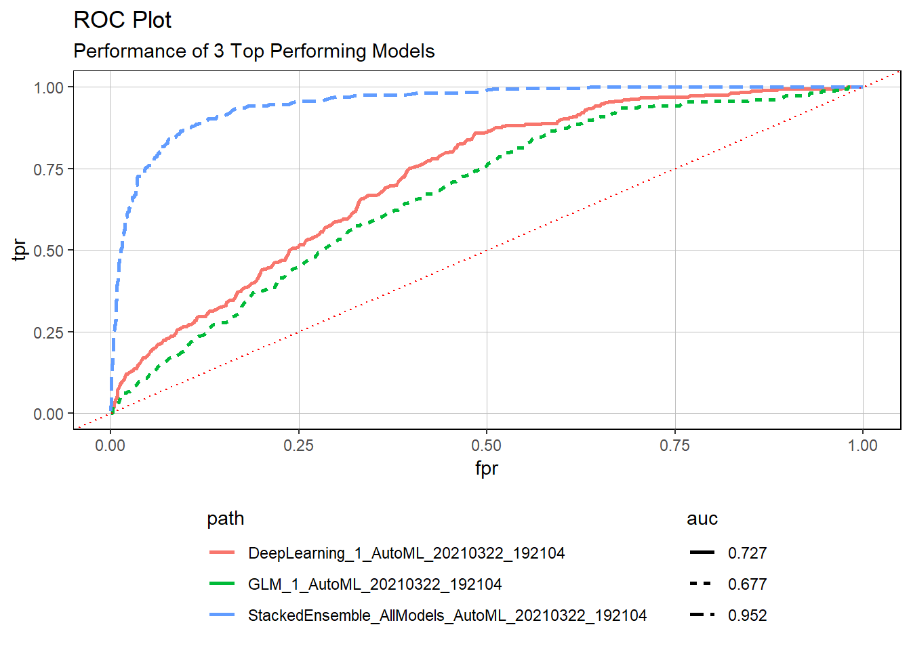

Journal (reproducible report)
Jader Santana
2020-11-23
1 Challenge 01_intro_r Introduction to R, RStudio IDE & Github
no specific challenge for this unit
2 Challenge 02_intro_tv Intro to tidyverse
Last compiled: 2021-03-27 15:31:30
2.1 1.0 Load libraries —-
library(tidyverse)
# library(tibble) --> is a modern re-imagining of the data frame
# library(readr) --> provides a fast and friendly way to read rectangular data like csv
# library(dplyr) --> provides a grammar of data manipulation
# library(magrittr) --> offers a set of operators which make your code more readable (pipe operator)
# library(tidyr) --> provides a set of functions that help you get to tidy data
# library(stringr) --> provides a cohesive set of functions designed to make working with strings as easy as possible
# library(ggplot2) --> graphics
# Excel Files
library(readxl)2.2 2.0 Importing Files —-
# A good convention is to use the file name and suffix it with tbl for the data structure tibble
bikes_tbl <- read_excel(path = "00_data/01_bike_sales/01_raw_data/bikes.xlsx")
orderlines_tbl <- read_excel("00_data/01_bike_sales/01_raw_data/orderlines.xlsx")
# Not necessary for this analysis, but for the sake of completeness
bikeshops_tbl <- read_excel("00_data/01_bike_sales/01_raw_data/bikeshops.xlsx")2.3 3.0 Examining Data —-
bikeshops_tbl## # A tibble: 30 x 5
## bikeshop.id name location lat lng
## <dbl> <chr> <chr> <dbl> <dbl>
## 1 1 Zum Goldenen Lenker Berlin, Berlin 52.5 13.4
## 2 2 AlexandeRad Hamburg, Hamburg 53.6 10.0
## 3 3 Fahrradladen 16 Munich, Bavaria 48.2 11.6
## 4 4 Bikestation Köln Cologne, North Rhine-Westphalia 50.9 6.95
## 5 5 Montimare Frankfurt, Hesse 50.1 8.68
## 6 6 fahrschneller Stuttgart, Baden-Württemberg 48.8 9.18
## 7 7 Rad Ab Düsseldorf, North Rhine-Westph~ 51.2 6.79
## 8 8 Lucky Bike Dortmund, North Rhine-Westphal~ 51.5 7.47
## 9 9 Zweirad-Center Stadl~ Essen, North Rhine-Westphalia 51.5 7.01
## 10 10 WITT-RAD Bremen, Bremen 53.1 8.83
## # ... with 20 more rowsglimpse(bikeshops_tbl)## Rows: 30
## Columns: 5
## $ bikeshop.id <dbl> 1, 2, 3, 4, 5, 6, 7, 8, 9, 10, 11, 12, 13, 14, 15, 16, ...
## $ name <chr> "Zum Goldenen Lenker", "AlexandeRad", "Fahrradladen 16"...
## $ location <chr> "Berlin, Berlin", "Hamburg, Hamburg", "Munich, Bavaria"...
## $ lat <dbl> 52.51667, 53.57532, 48.15000, 50.93333, 50.11552, 48.78...
## $ lng <dbl> 13.400000, 10.015340, 11.583333, 6.950000, 8.684167, 9....2.4 4.0 Joining Data —-
left_join(orderlines_tbl, bikes_tbl, by = c("product.id" = "bike.id"))## # A tibble: 15,644 x 15
## ...1 order.id order.line order.date customer.id product.id quantity
## <chr> <dbl> <dbl> <dttm> <dbl> <dbl> <dbl>
## 1 1 1 1 2015-01-07 00:00:00 2 2681 1
## 2 2 1 2 2015-01-07 00:00:00 2 2411 1
## 3 3 2 1 2015-01-10 00:00:00 10 2629 1
## 4 4 2 2 2015-01-10 00:00:00 10 2137 1
## 5 5 3 1 2015-01-10 00:00:00 6 2367 1
## 6 6 3 2 2015-01-10 00:00:00 6 1973 1
## 7 7 3 3 2015-01-10 00:00:00 6 2422 1
## 8 8 3 4 2015-01-10 00:00:00 6 2655 1
## 9 9 3 5 2015-01-10 00:00:00 6 2247 1
## 10 10 4 1 2015-01-11 00:00:00 22 2408 1
## # ... with 15,634 more rows, and 8 more variables: model <chr>,
## # model.year <dbl>, frame.material <chr>, weight <dbl>, price <dbl>,
## # category <chr>, gender <chr>, url <chr>bike_orderlines_joined_tbl <- orderlines_tbl %>%
left_join(bikes_tbl, by = c("product.id" = "bike.id")) %>%
left_join(bikeshops_tbl, by = c("customer.id" = "bikeshop.id"))
bike_orderlines_joined_tbl %>% glimpse()## Rows: 15,644
## Columns: 19
## $ ...1 <chr> "1", "2", "3", "4", "5", "6", "7", "8", "9", "10", "...
## $ order.id <dbl> 1, 1, 2, 2, 3, 3, 3, 3, 3, 4, 5, 5, 5, 5, 6, 6, 6, 6...
## $ order.line <dbl> 1, 2, 1, 2, 1, 2, 3, 4, 5, 1, 1, 2, 3, 4, 1, 2, 3, 4...
## $ order.date <dttm> 2015-01-07, 2015-01-07, 2015-01-10, 2015-01-10, 201...
## $ customer.id <dbl> 2, 2, 10, 10, 6, 6, 6, 6, 6, 22, 8, 8, 8, 8, 16, 16,...
## $ product.id <dbl> 2681, 2411, 2629, 2137, 2367, 1973, 2422, 2655, 2247...
## $ quantity <dbl> 1, 1, 1, 1, 1, 1, 1, 1, 1, 1, 1, 2, 1, 1, 1, 1, 1, 1...
## $ model <chr> "Spectral CF 7 WMN", "Ultimate CF SLX Disc 8.0 ETAP"...
## $ model.year <dbl> 2021, 2020, 2021, 2019, 2020, 2020, 2020, 2021, 2020...
## $ frame.material <chr> "carbon", "carbon", "carbon", "carbon", "aluminium",...
## $ weight <dbl> 13.80, 7.44, 14.06, 8.80, 11.50, 8.80, 8.20, 8.85, 1...
## $ price <dbl> 3119, 5359, 2729, 1749, 1219, 1359, 2529, 1559, 3899...
## $ category <chr> "Mountain - Trail - Spectral", "Road - Race - Ultima...
## $ gender <chr> "female", "unisex", "unisex", "unisex", "unisex", "u...
## $ url <chr> "https://www.canyon.com/en-de/mountain-bikes/trail-b...
## $ name <chr> "AlexandeRad", "AlexandeRad", "WITT-RAD", "WITT-RAD"...
## $ location <chr> "Hamburg, Hamburg", "Hamburg, Hamburg", "Bremen, Bre...
## $ lat <dbl> 53.57532, 53.57532, 53.07379, 53.07379, 48.78234, 48...
## $ lng <dbl> 10.015340, 10.015340, 8.826754, 8.826754, 9.180819, ...2.5 5.0 Wrangling Data —-
# All actions are chained with the pipe already. You can perform each step separately and use glimpse() or View() to validate your code. Store the result in a variable at the end of the steps.
bike_orderlines_wrangled_tbl <- bike_orderlines_joined_tbl %>%
# 5.1 Separate category name
separate(col = location,
into = c("city", "state"),
sep = ", ") %>%
# 5.2 Add the total price (price * quantity)
# Add a column to a tibble that uses a formula-style calculation of other columns
mutate(total.price = price * quantity) %>%
# 5.3 Optional: Reorganize. Using select to grab or remove unnecessary columns
# 5.3.1 by exact column name
select(-...1, -gender) %>%
# 5.3.2 by a pattern
# You can use the select_helpers to define patterns.
# Type ?ends_with and click on Select helpers in the documentation
select(-ends_with(".id")) %>%
# 5.3.3 Actually we need the column "order.id". Let's bind it back to the data
bind_cols(bike_orderlines_joined_tbl %>% select(order.id)) %>%
# 5.3.4 You can reorder the data by selecting the columns in your desired order.
# You can use select_helpers like contains() or everything()
select(order.id, contains("order"), contains("model"), contains("category"),
price, quantity, total.price,
everything()) %>%
# 5.4 Rename columns because we actually wanted underscores instead of the dots
# (one at the time vs. multiple at once)
rename(bikeshop = name) %>%
set_names(names(.) %>% str_replace_all("\\.", "_"))2.6 6.0 Business Insights —-
2.6.1 6.1 Sales by Location —-
library(lubridate)
# Step 1 - Manipulate
sales_by_location_tbl <- bike_orderlines_wrangled_tbl %>%
# Select columns
select(state, total_price) %>%
# Add year column
#no need mutate(year = year(order_date)) %>%
# Grouping by state and summarizing sales
group_by(state) %>%
summarize(sales = sum(total_price)) %>%
# Optional: Add a column that turns the numbers into a currency format
# (makes it in the plot optically more appealing)
# mutate(sales_text = scales::dollar(sales)) <- Works for dollar values
mutate(sales_text = scales::dollar(sales, big.mark = ".",
decimal.mark = ",",
prefix = "",
suffix = " €"))
sales_by_location_tbl## # A tibble: 12 x 3
## state sales sales_text
## <chr> <dbl> <chr>
## 1 Baden-Württemberg 6521090 6.521.090 €
## 2 Bavaria 6742819 6.742.819 €
## 3 Berlin 1128433 1.128.433 €
## 4 Bremen 10653499 10.653.499 €
## 5 Hamburg 3874756 3.874.756 €
## 6 Hesse 1558901 1.558.901 €
## 7 Lower Saxony 4107115 4.107.115 €
## 8 Mecklenburg-Western Pomerania 618974 618.974 €
## 9 North Rhine-Westphalia 21200613 21.200.613 €
## 10 Saxony 2230245 2.230.245 €
## 11 Saxony-Anhalt 569614 569.614 €
## 12 Schleswig-Holstein 3224749 3.224.749 €# Step 2 - Visualize
sales_by_location_tbl %>%
# Setup canvas with the columns location (x-axis) and sales (y-axis)
ggplot(aes(x = state, y = sales)) +
theme(axis.text.x = element_text(angle = 45, hjust = 1))+
# Geometries
geom_col(fill = "#2DC6D6") + # Use geom_col for a bar plot
geom_label(aes(label = sales_text)) + # Adding labels to the bars
geom_smooth(method = "lm", se = FALSE) + # Adding a trendline
# Formatting
# scale_y_continuous(labels = scales::dollar) + # Change the y-axis.
# Again, we have to adjust it for euro values
scale_y_continuous(labels = scales::dollar_format(big.mark = ".",
decimal.mark = ",",
prefix = "",
suffix = " €")) +
labs(
title = "Revenue by Location(state)",
subtitle = "Not an upward Trend",
x = "", # Override defaults for x and y
y = "Revenue"
)
2.6.2 6.2 Sales by Year and Location —-
# Step 1 - Manipulate
sales_by_loc_year_tbl <- bike_orderlines_wrangled_tbl %>%
# Select columns and add a year
select(order_date, total_price, state) %>%
mutate(year = year(order_date)) %>%
# Group by and summarize year and main catgegory
group_by(year, state) %>%
summarise(sales = sum(total_price)) %>%
ungroup() %>%
# Format $ Text
mutate(sales_text = scales::dollar(sales, big.mark = ".",
decimal.mark = ",",
prefix = "",
suffix = " €"))
sales_by_loc_year_tbl## # A tibble: 60 x 4
## year state sales sales_text
## <int> <chr> <dbl> <chr>
## 1 2015 Baden-Württemberg 1031924 1.031.924 €
## 2 2015 Bavaria 1301461 1.301.461 €
## 3 2015 Berlin 95853 95.853 €
## 4 2015 Bremen 1395912 1.395.912 €
## 5 2015 Hamburg 423090 423.090 €
## 6 2015 Hesse 308609 308.609 €
## 7 2015 Lower Saxony 584386 584.386 €
## 8 2015 Mecklenburg-Western Pomerania 222003 222.003 €
## 9 2015 North Rhine-Westphalia 3735092 3.735.092 €
## 10 2015 Saxony 238371 238.371 €
## # ... with 50 more rows# Step 2 - Visualize
sales_by_loc_year_tbl %>%
# Set up x, y, fill
ggplot(aes(x = year, y = sales, fill = state)) +
theme(axis.text.x = element_text(angle = 45, hjust = 1))+
# Geometries
geom_col() + # Run up to here to get a stacked bar plot
# Facet
facet_wrap(~ state) +
# Formatting
scale_y_continuous(labels = scales::dollar_format(big.mark = ".",
decimal.mark = ",",
prefix = "",
suffix = " €")) +
labs(
title = "Revenue by year and location",
subtitle = "Each location has an upward trend",
fill = "Main Location" # Changes the legend name
)
3 Challenge 03_Data Aquisition
Last compiled: 2021-03-27 15:31:30
3.1 1.0 Load libraries —-
test 2
4 Challenge 04_Data Wrangling
Answer the following questions with that data:
4.1 1.0 Patent Dominance —-
- Patent Dominance: What US company / corporation has the most patents? List the 10 US companies with the most assigned/granted patents.
#install.packages("vroom")
#install.packages("tictoc")
# Tidyverse
library(tidyverse)
library(vroom)
# Data Table
library(data.table)
# Counter
library(tictoc)
col_types_assignee_tbl <- list(
id = col_character(),
type = col_double(),
name_first = col_character(),
name_last = col_character(),
organization = col_character()
)
assignee_tbl <- vroom(
file = "00_data/04_challenge/assignee.tsv",
delim = "\t",
col_types = col_types_assignee_tbl,
na = c("", "NA", "NULL")
)
#col_types_patent_tbl <- list(
# id = col_character(),
#type = col_character(),
#number = col_character(),
#country = col_character(),
# date = col_date("%Y-%m-%d"),
# abstract = col_character(),
#title = col_character(),
# kind = col_character(),
# num_claims = col_double(),
#filename = col_character(),
# withdrawn = col_double()
#)
#patent_tbl <- vroom(
# file = "00_data/04_challenge/patent.tsv",
# delim = "\t",
# col_types = col_types_patent_tbl,
# na = c("", "NA", "NULL")
# )
col_types_patent_assignee_tbl <- list(
patent_id = col_character(),
assignee_id = col_character(),
location_id = col_character()
)
patent_assignee_tbl <- vroom(
file = "00_data/04_challenge/patent_assignee.tsv",
delim = "\t",
col_types = col_types_patent_assignee_tbl,
na = c("", "NA", "NULL")
)
#col_types_uspc_tbl <- list(
# uuid = col_character(),
#patent_id = col_character(),
#mainclass_id = col_character(),
#subclass_id = col_character(),
#sequence = col_double()
#)
#uspc_tbl <- vroom(
# file = "00_data/04_challenge/uspc.tsv",
# delim = "\t",
# col_types = col_types_uspc_tbl,
# na = c("", "NA", "NULL")
# )
assignee_tbl %>% glimpse()## Rows: 512,152
## Columns: 5
## $ id <chr> "org_000Te6ufduCywtAA6oMB", "org_001LOvSUTQjgiMNXj5uy"...
## $ type <dbl> 2, 3, 2, 3, 3, 3, 3, 2, 3, 2, 2, 2, 3, 3, 3, 3, 2, 3, ...
## $ name_first <chr> NA, NA, NA, NA, NA, NA, NA, NA, NA, NA, NA, NA, NA, NA...
## $ name_last <chr> NA, NA, NA, NA, NA, NA, NA, NA, NA, NA, NA, NA, NA, NA...
## $ organization <chr> "Oborain, LLC", "QUIET THERAPEUTICS LTD.", "Kinergetic...#patent_tbl %>% glimpse()
patent_assignee_tbl %>% glimpse()## Rows: 6,884,971
## Columns: 3
## $ patent_id <chr> "4488683", "5856666", "5204210", "5302149", "D397841", ...
## $ assignee_id <chr> "org_dJc33162m5Ry3wK7wNeY", "org_UiBjCdlCCCWxBIxSzRLe",...
## $ location_id <chr> "208e32d3-0ee9-4393-ad2a-803a31f8b723", "4f5e4429-aac1-...#uspc_tbl %>% glimpse()
class(assignee_tbl)## [1] "tbl_df" "tbl" "data.frame"#class(patent_tbl)
class(patent_assignee_tbl)## [1] "tbl_df" "tbl" "data.frame"#class(uspc_tbl)
setDT(assignee_tbl)
#setDT(patent_tbl)
setDT(patent_assignee_tbl)
#setDT(uspc_tbl)
class(assignee_tbl)## [1] "data.table" "data.frame"#class(patent_tbl)
class(patent_assignee_tbl)## [1] "data.table" "data.frame"#class(uspc_tbl)
assignee_tbl %>% glimpse()## Rows: 512,152
## Columns: 5
## $ id <chr> "org_000Te6ufduCywtAA6oMB", "org_001LOvSUTQjgiMNXj5uy"...
## $ type <dbl> 2, 3, 2, 3, 3, 3, 3, 2, 3, 2, 2, 2, 3, 3, 3, 3, 2, 3, ...
## $ name_first <chr> NA, NA, NA, NA, NA, NA, NA, NA, NA, NA, NA, NA, NA, NA...
## $ name_last <chr> NA, NA, NA, NA, NA, NA, NA, NA, NA, NA, NA, NA, NA, NA...
## $ organization <chr> "Oborain, LLC", "QUIET THERAPEUTICS LTD.", "Kinergetic...#patent_tbl %>% glimpse()
patent_assignee_tbl %>% glimpse()## Rows: 6,884,971
## Columns: 3
## $ patent_id <chr> "4488683", "5856666", "5204210", "5302149", "D397841", ...
## $ assignee_id <chr> "org_dJc33162m5Ry3wK7wNeY", "org_UiBjCdlCCCWxBIxSzRLe",...
## $ location_id <chr> "208e32d3-0ee9-4393-ad2a-803a31f8b723", "4f5e4429-aac1-...#uspc_tbl %>% glimpse()
# 4.0 DATA WRANGLING ----
# 4.1 Joining / Merging Data ----
tic()
combined_assignee_patent_assignee_tbl <- merge(x = assignee_tbl, y = patent_assignee_tbl,
by.x = "id", by.y = "assignee_id",
all.x = TRUE,
all.y = TRUE)%>%
mutate(patents_unit=1)%>%
group_by(organization) %>%
summarize(number_of_patents = sum(patents_unit)) %>%
ungroup()%>%
arrange(number_of_patents)
toc()## 39.89 sec elapsedcombined_assignee_patent_assignee_tbl %>%
select(organization, number_of_patents) %>%
arrange(desc(number_of_patents)) %>%
slice(1:11) %>%
filter(organization!="")## # A tibble: 10 x 2
## organization number_of_patents
## <chr> <dbl>
## 1 International Business Machines Corporation 141100
## 2 Samsung Electronics Co., Ltd. 95246
## 3 Canon Kabushiki Kaisha 76700
## 4 Sony Corporation 54889
## 5 Kabushiki Kaisha Toshiba 49715
## 6 General Electric Company 47545
## 7 Hitachi, Ltd. 45521
## 8 Intel Corporation 42962
## 9 Fujitsu Limited 37461
## 10 Hewlett-Packard Development Company, L.P. 360024.2 2.0 Recent Patent Acitivity —-
- Recent patent activity: What US company had the most patents granted in 2019? List the top 10 companies with the most new granted patents for 2019.
#install.packages("vroom")
#install.packages("tictoc")
# Tidyverse
library(tidyverse)
library(vroom)
# Data Table
library(data.table)
# Counter
library(tictoc)
col_types_assignee_tbl <- list(
id = col_character(),
type = col_double(),
name_first = col_character(),
name_last = col_character(),
organization = col_character()
)
#assignee_tbl <- vroom(
#file = "00_data/04_challenge/assignee.tsv",
#delim = "\t",
#col_types = col_types_assignee_tbl,
#na = c("", "NA", "NULL")
#)
col_types_patent_tbl <- list(
id = col_character(),
type = col_character(),
number = col_character(),
country = col_character(),
date = col_date("%Y-%m-%d"),
abstract = col_character(),
title = col_character(),
kind = col_character(),
num_claims = col_double(),
filename = col_character(),
withdrawn = col_double()
)
#patent_tbl <- vroom(
# file = "00_data/04_challenge/patent.tsv",
# delim = "\t",
# col_types = col_types_patent_tbl,
# na = c("", "NA", "NULL")
# )
col_types_patent_assignee_tbl <- list(
patent_id = col_character(),
assignee_id = col_character(),
location_id = col_character()
)
#patent_assignee_tbl <- vroom(
# file = "00_data/04_challenge/patent_assignee.tsv",
# delim = "\t",
# col_types = col_types_patent_assignee_tbl,
# na = c("", "NA", "NULL")
# )
#col_types_uspc_tbl <- list(
# uuid = col_character(),
#patent_id = col_character(),
#mainclass_id = col_character(),
#subclass_id = col_character(),
#sequence = col_double()
#)
#uspc_tbl <- vroom(
# file = "00_data/04_challenge/uspc.tsv",
# delim = "\t",
# col_types = col_types_uspc_tbl,
# na = c("", "NA", "NULL")
# )
#assignee_tbl %>% glimpse()
#patent_tbl %>% glimpse()
#patent_assignee_tbl %>% glimpse()
#uspc_tbl %>% glimpse()
#class(assignee_tbl)
#class(patent_tbl)
#class(patent_assignee_tbl)
#class(uspc_tbl)
#setDT(assignee_tbl)
#setDT(patent_tbl)
#setDT(patent_assignee_tbl)
#setDT(uspc_tbl)
#class(assignee_tbl)
#class(patent_tbl)
#class(patent_assignee_tbl)
#class(uspc_tbl)
#assignee_tbl %>% glimpse()
#patent_tbl %>% glimpse()
#patent_assignee_tbl %>% glimpse()
#uspc_tbl %>% glimpse()
# 4.0 DATA WRANGLING ----
# 4.1 Joining / Merging Data ----
#tic()
#combined_assignee_patent_assignee_tbl <- merge(x = assignee_tbl, y = patent_assignee_tbl,
#by.x = "id", by.y = "assignee_id",
#all.x = TRUE,
#all.y = TRUE)%>%
#mutate(patents_unit=1)%>%
#group_by(organization) %>%
#summarize(number_of_patents = sum(patents_unit)) %>%
#ungroup()%>%
#arrange(number_of_patents)
#toc()
#combined_assignee_patent_assignee_tbl %>%
#select(organization, number_of_patents) %>%
#arrange(desc(number_of_patents)) %>%
#slice(1:11) %>%
#filter(organization!="")4.3 3.0 Innovation in Tech —-
- Innovation in Tech: What is the most innovative tech sector? For the top 10 companies (worldwide) with the most patents, what are the top 5 USPTO tech main classes?
library(tidyverse)5 Challenge 05_Data Visualisation
Answer the following questions with that data:
5.1 Challenge 05.1 —-
Goal: Map the time course of the cumulative Covid-19 cases! Your plot should look like this: Adding the cases for Europe is optional. You can choose your own color theme, but don’t use the default one. Don’t forget to scale the axis properly. The labels can be added with geom_label() or with geom_label_repel() (from the package ggrepel).
library(vroom)
library(tidyverse)
library(data.table)
library(dplyr)
library(base)
#covid_data_tbl <- read_csv("https://opendata.ecdc.europa.eu/covid19/casedistribution/csv")
col_types_covid_data_tbl <- list(
dateRep = col_date("%d/%m/%Y"),
year_week = col_character(),
cases_weekly = col_double(),
deaths_weekly = col_double(),
countriesAndTerritories = col_character(),
geoId = col_character(),
countryterritoryCode = col_character(),
popData2019 = col_double(),
continentExp = col_character(),
`notification_rate_per_100000_population_14-days` = col_double()
)
covid_data_tbl <- vroom(
file = "https://opendata.ecdc.europa.eu/covid19/casedistribution/csv",
delim = ",",
col_types = col_types_covid_data_tbl,
na = c("", "NA", "NULL")
)
covid_data_cumulative_by_month_tbl <- covid_data_tbl %>%
# Select relevant columns
select(dateRep, cases_weekly, countriesAndTerritories) %>%
mutate(month = month(dateRep)) %>%
mutate(month_name = months(dateRep)) %>%
mutate(year = year(dateRep)) %>%
filter(year=="2020")%>%
group_by(month, month_name, countriesAndTerritories) %>%
summarize(cases_month = sum(cases_weekly)) %>%
arrange(countriesAndTerritories)%>%
group_by(countriesAndTerritories) %>%
mutate(cases_month_aux = ifelse( is.na(cases_month), 0, cases_month ), #remove NA
cum_cases_month = cumsum(cases_month_aux) )%>%
mutate(cum_cases_month_abbr = scales::dollar(cum_cases_month,
scale = 1e-6,
prefix = "",
suffix = " M")) %>%
mutate(cum_cases_month_in_millions = cum_cases_month/1e6) %>%
select(month,countriesAndTerritories, cases_month, cum_cases_month, month_name, cum_cases_month_abbr, cum_cases_month_in_millions )
covid_data_cumulative_by_month_tbl %>%
filter(countriesAndTerritories %in% c("United_Kingdom","United_States_of_America", "Germany", "Spain", "France", "Brazil"))%>%
# Set up x, y, fill
ggplot(aes(x = factor(month_name,
level=c("Januar", "Februar", "März", "April", "Mai", "Juni", "Juli", "August", "September","Oktober", "November", "Dezember")),
y = cum_cases_month_in_millions, group=countriesAndTerritories, color=countriesAndTerritories)) +
theme(axis.text.x = element_text(angle = 45, hjust = 1))+
# Geometries
geom_point() +
geom_line(aes(label=countriesAndTerritories)) +
#geom_smooth(method = "lm", se = FALSE)+
#scale_x_continuous(breaks = seq(1, 12, by=1)) +
#scale_y_discrete() +
#xlim(1,12)+
ylim(0, 20)+
#verify with Prof geom_label
#geom_label(label = covid_data_cumulative_by_month_tbl %>%
# filter(cum_cases_month_in_millions > 1000000),
# vjust = -0.5,
# size = 3,
# fill = "#1f78b4",
# color = "white",
# fontface = "italic",
# data = covid_data_cumulative_by_month_tbl %>%
# filter(cum_cases_month_in_millions > 1000000)) +
labs(
title = "COVID-19 Confirmed Cases Worldwide",
subtitle = "-",
x = "YEAR 2020",
y = "Cumulative Cases (in millions)"
)5.2 Challenge 05.2 —-
Goal: Visualize the distribution of the mortality rate (deaths / population) with geom_map(). The necessary longitudinal and lateral data can be accessed with this function:
world <- map_data(“world”)
This data has also to be put in the map argument of geom_map():
plot_data %>% ggplot( … ) + geom_map(aes(map_id = …, … ), map = world, … ) + …
library(tidyverse)
#install.packages("maps")
library(maps)
library(vroom)
library(data.table)
library(dplyr)
library(base)
library(tictoc)
world <- map_data("world")
col_types_covid_data_tbl <- list(
dateRep = col_date("%d/%m/%Y"),
year_week = col_character(),
cases_weekly = col_double(),
deaths_weekly = col_double(),
countriesAndTerritories = col_character(),
geoId = col_character(),
countryterritoryCode = col_character(),
popData2019 = col_double(),
continentExp = col_character(),
`notification_rate_per_100000_population_14-days` = col_double()
)
covid_data_tbl <- vroom(
file = "https://opendata.ecdc.europa.eu/covid19/casedistribution/csv",
delim = ",",
col_types = col_types_covid_data_tbl,
na = c("", "NA", "NULL")
)
covid_data_cumulative_death_by_country_tbl <- covid_data_tbl %>%
# Select relevant columns
select(dateRep,countriesAndTerritories,deaths_weekly, popData2019) %>%
mutate(year = year(dateRep)) %>%
filter(year=="2020")%>%
group_by(countriesAndTerritories, popData2019) %>%
summarize(deaths_sum = sum(deaths_weekly)) %>%
arrange(countriesAndTerritories)%>%
mutate(mortality_per_million= deaths_sum/popData2019*100*1000)
#tic()
#combined_covid_death_world_tbl <- merge(x = covid_data_cumulative_death_by_country_tbl, y = world,
# by.x = "countriesAndTerritories", by.y = "region",
# all.x = TRUE,
# all.y = TRUE)%>%
#mutate(patents_unit=1)%>%
# group_by(organization) %>%
# summarize(number_of_patents = sum(patents_unit)) %>%
# # ungroup()%>%
#arrange(number_of_patents)
#toc()
#combined_assignee_patent_assignee_tbl %>%
# select(organization, number_of_patents) %>%
# arrange(desc(number_of_patents)) %>%
# slice(1:11) %>%
# filter(organization!="")
#cas <- covid_data_cumulative_death_by_country_tbl %>%
# select(countriesAndTerritories,deaths_sum, popData2019, mortality_per_million)%>%
# mutate(across(countriesAndTerritories, str_replace_all, "_", " ")) %>%
# mutate(countriesAndTerritories = case_when(countriesAndTerritories == "United Kingdom" ~ "UK",
# countriesAndTerritories == "United States of America" ~ "USA",
# countriesAndTerritories == "Czechia" ~ "Czech Republic",
# TRUE ~ countriesAndTerritories
# ))
#6 Challenge 06_Machine Learning Fundamentals
6.1 Summary
Your organization wants to know which companies are similar to each other to help in identifying potential customers of a SAAS software solution (e.g. Salesforce CRM or equivalent) in various segments of the market. The Sales Department is very interested in this analysis, which will help them more easily penetrate various market segments.
You will be using stock prices in this analysis. You come up with a method to classify companies based on how their stocks trade using their daily stock returns (percentage movement from one day to the next). This analysis will help your organization determine which companies are related to each other (competitors and have similar attributes).
You can analyze the stock prices using what you’ve learned in the unsupervised learning tools including K-Means and UMAP. You will use a combination of kmeans() to find groups and umap() to visualize similarity of daily stock returns.
6.2 Objectives
Apply your knowledge on K-Means and UMAP along with dplyr, ggplot2, and purrr to create a visualization that identifies subgroups in the S&P 500 Index. You will specifically apply:
- Modeling:
kmeans()andumap() - Iteration:
purrr - Data Manipulation:
dplyr,tidyr, andtibble - Visualization:
ggplot2(bonusplotly)
6.3 Libraries
Load the following libraries.
#install.packages("plotly")
#install.packages("tidyquant")
#install.packages("umap")
library(tidyverse)
library(tidyquant)
library(broom)
library(umap)6.4 Data
We will be using stock prices in this analysis. Although some of you know already how to use an API to retrieve stock prices I obtained the stock prices for every stock in the S&P 500 index for you already. The files are saved in the session_6_data directory.
We can read in the stock prices. The data is 1.2M observations. The most important columns for our analysis are:
symbol: The stock ticker symbol that corresponds to a company’s stock pricedate: The timestamp relating the symbol to the share price at that point in timeadjusted: The stock price, adjusted for any splits and dividends (we use this when analyzing stock data over long periods of time)
# STOCK PRICES
sp_500_prices_tbl <- read_rds("00_data/06/sp_500_prices_tbl.rds")
sp_500_prices_tbl## # A tibble: 1,225,765 x 8
## symbol date open high low close volume adjusted
## <chr> <date> <dbl> <dbl> <dbl> <dbl> <dbl> <dbl>
## 1 MSFT 2009-01-02 19.5 20.4 19.4 20.3 50084000 15.9
## 2 MSFT 2009-01-05 20.2 20.7 20.1 20.5 61475200 16.0
## 3 MSFT 2009-01-06 20.8 21 20.6 20.8 58083400 16.2
## 4 MSFT 2009-01-07 20.2 20.3 19.5 19.5 72709900 15.2
## 5 MSFT 2009-01-08 19.6 20.2 19.5 20.1 70255400 15.7
## 6 MSFT 2009-01-09 20.2 20.3 19.4 19.5 49815300 15.2
## 7 MSFT 2009-01-12 19.7 19.8 19.3 19.5 52163500 15.2
## 8 MSFT 2009-01-13 19.5 20.0 19.5 19.8 65843500 15.5
## 9 MSFT 2009-01-14 19.5 19.7 19.0 19.1 80257500 14.9
## 10 MSFT 2009-01-15 19.1 19.3 18.5 19.2 96169800 15.0
## # ... with 1,225,755 more rowsThe second data frame contains information about the stocks the most important of which are:
company: The company namesector: The sector that the company belongs to
# SECTOR INFORMATION
sp_500_index_tbl <- read_rds("00_data/06/sp_500_index_tbl.rds")
sp_500_index_tbl## symbol company weight
## 1 MSFT Microsoft Corporation 3.589659e-02
## 2 AAPL Apple Inc. 3.299844e-02
## 3 AMZN Amazon.com Inc. 2.834845e-02
## 4 BRK.B Berkshire Hathaway Inc. Class B 1.714493e-02
## 5 FB Facebook Inc. Class A 1.676060e-02
## 6 JNJ Johnson & Johnson 1.570168e-02
## 7 JPM JPMorgan Chase & Co. 1.507235e-02
## 8 GOOG Alphabet Inc. Class C 1.470747e-02
## 9 GOOGL Alphabet Inc. Class A 1.436854e-02
## 10 XOM Exxon Mobil Corporation 1.412361e-02
## 11 BAC Bank of America Corp 1.141184e-02
## 12 UNH UnitedHealth Group Incorporated 1.119696e-02
## 13 V Visa Inc. Class A 1.093462e-02
## 14 PG Procter & Gamble Company 1.053192e-02
## 15 PFE Pfizer Inc. 1.052585e-02
## 16 INTC Intel Corporation 1.012464e-02
## 17 CVX Chevron Corporation 9.790428e-03
## 18 VZ Verizon Communications Inc. 9.784105e-03
## 19 CSCO Cisco Systems Inc. 9.544976e-03
## 20 T AT&T Inc. 9.518933e-03
## 21 BA Boeing Company 9.479343e-03
## 22 HD Home Depot Inc. 9.332370e-03
## 23 WFC Wells Fargo & Company 8.957703e-03
## 24 MRK Merck & Co. Inc. 8.915412e-03
## 25 MA Mastercard Incorporated Class A 8.635942e-03
## 26 KO Coca-Cola Company 7.439485e-03
## 27 CMCSA Comcast Corporation Class A 7.368779e-03
## 28 DIS Walt Disney Company 7.194712e-03
## 29 PEP PepsiCo Inc. 7.023937e-03
## 30 C Citigroup Inc. 6.744127e-03
## 31 NFLX Netflix Inc. 6.680205e-03
## 32 WMT Walmart Inc. 6.127690e-03
## 33 MCD McDonald's Corporation 5.961227e-03
## 34 ABT Abbott Laboratories 5.673213e-03
## 35 ORCL Oracle Corporation 5.649621e-03
## 36 PM Philip Morris International Inc. 5.569381e-03
## 37 ADBE Adobe Inc. 5.423148e-03
## 38 IBM International Business Machines Corporation 5.378546e-03
## 39 UNP Union Pacific Corporation 5.373873e-03
## 40 DWDP DowDuPont Inc. 5.343558e-03
## 41 MDT Medtronic plc 5.320276e-03
## 42 ABBV AbbVie Inc. 5.227510e-03
## 43 MMM 3M Company 5.225519e-03
## 44 CRM salesforce.com inc. 5.221497e-03
## 45 AMGN Amgen Inc. 5.154364e-03
## 46 AVGO Broadcom Inc. 5.010262e-03
## 47 LLY Eli Lilly and Company 4.959256e-03
## 48 HON Honeywell International Inc. 4.860377e-03
## 49 PYPL PayPal Holdings Inc 4.796215e-03
## 50 NKE NIKE Inc. Class B 4.662578e-03
## 51 UTX United Technologies Corporation 4.450672e-03
## 52 TXN Texas Instruments Incorporated 4.437206e-03
## 53 TMO Thermo Fisher Scientific Inc. 4.363659e-03
## 54 ACN Accenture Plc Class A 4.355615e-03
## 55 NVDA NVIDIA Corporation 4.119677e-03
## 56 COST Costco Wholesale Corporation 4.072393e-03
## 57 LIN Linde plc 3.986931e-03
## 58 MO Altria Group Inc 3.917806e-03
## 59 CVS CVS Health Corporation 3.853464e-03
## 60 BKNG Booking Holdings Inc. 3.844550e-03
## 61 NEE NextEra Energy Inc. 3.774455e-03
## 62 GE General Electric Company 3.767361e-03
## 63 SBUX Starbucks Corporation 3.765740e-03
## 64 GILD Gilead Sciences Inc. 3.740188e-03
## 65 BMY Bristol-Myers Squibb Company 3.620328e-03
## 66 LOW Lowe's Companies Inc. 3.611353e-03
## 67 COP ConocoPhillips 3.482849e-03
## 68 ANTM Anthem Inc. 3.459557e-03
## 69 CAT Caterpillar Inc. 3.452684e-03
## 70 AMT American Tower Corporation 3.362129e-03
## 71 USB U.S. Bancorp 3.355776e-03
## 72 UPS United Parcel Service Inc. Class B 3.308592e-03
## 73 LMT Lockheed Martin Corporation 3.248902e-03
## 74 AXP American Express Company 3.238637e-03
## 75 CI Cigna Corporation 3.172444e-03
## 76 MDLZ Mondelez International Inc. Class A 3.018507e-03
## 77 GS Goldman Sachs Group Inc. 2.949052e-03
## 78 DHR Danaher Corporation 2.945331e-03
## 79 BIIB Biogen Inc. 2.878567e-03
## 80 BDX Becton Dickinson and Company 2.859908e-03
## 81 ADP Automatic Data Processing Inc. 2.800078e-03
## 82 CELG Celgene Corporation 2.724370e-03
## 83 QCOM QUALCOMM Incorporated 2.704791e-03
## 84 CME CME Group Inc. Class A 2.693005e-03
## 85 TJX TJX Companies Inc 2.688162e-03
## 86 ISRG Intuitive Surgical Inc. 2.687962e-03
## 87 DUK Duke Energy Corporation 2.677987e-03
## 88 CHTR Charter Communications Inc. Class A 2.661359e-03
## 89 SLB Schlumberger NV 2.656396e-03
## 90 CB Chubb Limited 2.635526e-03
## 91 INTU Intuit Inc. 2.599428e-03
## 92 WBA Walgreens Boots Alliance Inc 2.537987e-03
## 93 CSX CSX Corporation 2.499398e-03
## 94 EOG EOG Resources Inc. 2.479198e-03
## 95 SYK Stryker Corporation 2.475356e-03
## 96 PNC PNC Financial Services Group Inc. 2.461979e-03
## 97 CL Colgate-Palmolive Company 2.459598e-03
## 98 SPG Simon Property Group Inc. 2.420539e-03
## 99 SCHW Charles Schwab Corporation 2.380268e-03
## 100 BSX Boston Scientific Corporation 2.362500e-03
## 101 D Dominion Energy Inc 2.362490e-03
## 102 MS Morgan Stanley 2.357517e-03
## 103 FOXA Twenty-First Century Fox Inc. Class A 2.286632e-03
## 104 BLK BlackRock Inc. 2.263240e-03
## 105 RTN Raytheon Company 2.245281e-03
## 106 OXY Occidental Petroleum Corporation 2.194796e-03
## 107 GM General Motors Company 2.190574e-03
## 108 DE Deere & Company 2.180539e-03
## 109 SO Southern Company 2.143840e-03
## 110 NSC Norfolk Southern Corporation 2.139458e-03
## 111 NOC Northrop Grumman Corporation 2.133255e-03
## 112 SPGI S&P Global Inc. 2.128033e-03
## 113 CCI Crown Castle International Corp 2.127052e-03
## 114 GD General Dynamics Corporation 2.084551e-03
## 115 BK Bank of New York Mellon Corporation 2.081129e-03
## 116 VRTX Vertex Pharmaceuticals Incorporated 2.052085e-03
## 117 MU Micron Technology Inc. 2.021239e-03
## 118 EXC Exelon Corporation 1.989433e-03
## 119 MMC Marsh & McLennan Companies Inc. 1.961229e-03
## 120 ZTS Zoetis Inc. Class A 1.957868e-03
## 121 MPC Marathon Petroleum Corporation 1.930374e-03
## 122 PLD Prologis Inc. 1.912765e-03
## 123 MET MetLife Inc. 1.906152e-03
## 124 ITW Illinois Tool Works Inc. 1.901359e-03
## 125 AGN Allergan plc 1.894716e-03
## 126 ILMN Illumina Inc. 1.881459e-03
## 127 FDX FedEx Corporation 1.858768e-03
## 128 ICE Intercontinental Exchange Inc. 1.849193e-03
## 129 EMR Emerson Electric Co. 1.828073e-03
## 130 HUM Humana Inc. 1.825011e-03
## 131 CTSH Cognizant Technology Solutions Corporation Class A 1.818338e-03
## 132 AON Aon plc 1.779839e-03
## 133 ECL Ecolab Inc. 1.774246e-03
## 134 PGR Progressive Corporation 1.773456e-03
## 135 KMB Kimberly-Clark Corporation 1.754196e-03
## 136 PSX Phillips 66 1.751575e-03
## 137 PRU Prudential Financial Inc. 1.680439e-03
## 138 ADI Analog Devices Inc. 1.677838e-03
## 139 BBT BB&T Corporation 1.672945e-03
## 140 AEP American Electric Power Company Inc. 1.667633e-03
## 141 COF Capital One Financial Corporation 1.667192e-03
## 142 WM Waste Management Inc. 1.664881e-03
## 143 HCA HCA Healthcare Inc 1.662640e-03
## 144 AMAT Applied Materials Inc. 1.640689e-03
## 145 TGT Target Corporation 1.633986e-03
## 146 APD Air Products and Chemicals Inc. 1.629554e-03
## 147 AFL Aflac Incorporated 1.614086e-03
## 148 AIG American International Group Inc. 1.602040e-03
## 149 EW Edwards Lifesciences Corporation 1.591745e-03
## 150 HPQ HP Inc. 1.572385e-03
## 151 BAX Baxter International Inc. 1.557538e-03
## 152 SHW Sherwin-Williams Company 1.553596e-03
## 153 VLO Valero Energy Corporation 1.538518e-03
## 154 FIS Fidelity National Information Services Inc. 1.527503e-03
## 155 KMI Kinder Morgan Inc Class P 1.522860e-03
## 156 ROST Ross Stores Inc. 1.512285e-03
## 157 ADSK Autodesk Inc. 1.491685e-03
## 158 MAR Marriott International Inc. Class A 1.489754e-03
## 159 EL Estee Lauder Companies Inc. Class A 1.484361e-03
## 160 FISV Fiserv Inc. 1.480919e-03
## 161 TRV Travelers Companies Inc. 1.469054e-03
## 162 ETN Eaton Corp. Plc 1.454436e-03
## 163 EQIX Equinix Inc. 1.453206e-03
## 164 ATVI Activision Blizzard Inc. 1.451855e-03
## 165 F Ford Motor Company 1.427123e-03
## 166 EBAY eBay Inc. 1.422420e-03
## 167 WMB Williams Companies Inc. 1.408363e-03
## 168 REGN Regeneron Pharmaceuticals Inc. 1.402270e-03
## 169 EA Electronic Arts Inc. 1.393026e-03
## 170 ALL Allstate Corporation 1.392405e-03
## 171 JCI Johnson Controls International plc 1.385652e-03
## 172 SYY Sysco Corporation 1.378898e-03
## 173 ROP Roper Technologies Inc. 1.376557e-03
## 174 DAL Delta Air Lines Inc. 1.372395e-03
## 175 RHT Red Hat Inc. 1.369004e-03
## 176 DG Dollar General Corporation 1.350724e-03
## 177 SRE Sempra Energy 1.345972e-03
## 178 ORLY O'Reilly Automotive Inc. 1.332325e-03
## 179 PSA Public Storage 1.328894e-03
## 180 XLNX Xilinx Inc. 1.285252e-03
## 181 STI SunTrust Banks Inc. 1.279929e-03
## 182 YUM Yum! Brands Inc. 1.273546e-03
## 183 LUV Southwest Airlines Co. 1.271535e-03
## 184 KHC Kraft Heinz Company 1.264782e-03
## 185 WELL Welltower Inc. 1.251195e-03
## 186 STZ Constellation Brands Inc. Class A 1.248293e-03
## 187 ALXN Alexion Pharmaceuticals Inc. 1.231145e-03
## 188 TEL TE Connectivity Ltd. 1.220970e-03
## 189 LRCX Lam Research Corporation 1.219289e-03
## 190 PEG Public Service Enterprise Group Inc 1.214677e-03
## 191 VFC V.F. Corporation 1.208463e-03
## 192 MCO Moody's Corporation 1.206382e-03
## 193 HAL Halliburton Company 1.196988e-03
## 194 LYB LyondellBasell Industries NV 1.196237e-03
## 195 GLW Corning Inc 1.194216e-03
## 196 OKE ONEOK Inc. 1.188553e-03
## 197 APH Amphenol Corporation Class A 1.185542e-03
## 198 XEL Xcel Energy Inc. 1.179399e-03
## 199 AVB AvalonBay Communities Inc. 1.156808e-03
## 200 MCK McKesson Corporation 1.156177e-03
## 201 EQR Equity Residential 1.150735e-03
## 202 GIS General Mills Inc. 1.145642e-03
## 203 STT State Street Corporation 1.145102e-03
## 204 CNC Centene Corporation 1.138238e-03
## 205 PPG PPG Industries Inc. 1.127853e-03
## 206 IR Ingersoll-Rand Plc 1.096718e-03
## 207 ZBH Zimmer Biomet Holdings Inc. 1.073786e-03
## 208 A Agilent Technologies Inc. 1.061240e-03
## 209 MTB M&T Bank Corporation 1.058008e-03
## 210 PXD Pioneer Natural Resources Company 1.051955e-03
## 211 CXO Concho Resources Inc. 1.051925e-03
## 212 DFS Discover Financial Services 1.043961e-03
## 213 ED Consolidated Edison Inc. 1.042370e-03
## 214 HLT Hilton Worldwide Holdings Inc 1.041860e-03
## 215 FOX Twenty-First Century Fox Inc. Class B 1.041340e-03
## 216 PAYX Paychex Inc. 1.035437e-03
## 217 FTV Fortive Corp. 1.033396e-03
## 218 PCAR PACCAR Inc 1.017388e-03
## 219 DLR Digital Realty Trust Inc. 1.011595e-03
## 220 TROW T. Rowe Price Group 1.010384e-03
## 221 ADM Archer-Daniels-Midland Company 1.006973e-03
## 222 KR Kroger Co. 1.001020e-03
## 223 CMI Cummins Inc. 9.979983e-04
## 224 DLTR Dollar Tree Inc. 9.979783e-04
## 225 AZO AutoZone Inc. 9.977982e-04
## 226 WEC WEC Energy Group Inc 9.976581e-04
## 227 MNST Monster Beverage Corporation 9.970779e-04
## 228 APC Anadarko Petroleum Corporation 9.903545e-04
## 229 CCL.U Carnival Corporation 9.873830e-04
## 230 VTR Ventas Inc. 9.864626e-04
## 231 HPE Hewlett Packard Enterprise Co. 9.839113e-04
## 232 PH Parker-Hannifin Corporation 9.801494e-04
## 233 IQV IQVIA Holdings Inc 9.759873e-04
## 234 MSI Motorola Solutions Inc. 9.730559e-04
## 235 TWTR Twitter Inc. 9.606297e-04
## 236 WLTW Willis Towers Watson Public Limited Company 9.449018e-04
## 237 ES Eversource Energy 9.445016e-04
## 238 PPL PPL Corporation 9.408298e-04
## 239 ROK Rockwell Automation Inc. 9.317452e-04
## 240 DTE DTE Energy Company 9.294641e-04
## 241 SYF Synchrony Financial 9.250619e-04
## 242 APTV Aptiv PLC 9.162075e-04
## 243 MCHP Microchip Technology Incorporated 9.087137e-04
## 244 TDG TransDigm Group Incorporated 9.086637e-04
## 245 SBAC SBA Communications Corp. Class A 9.083636e-04
## 246 SWK Stanley Black & Decker Inc. 8.942865e-04
## 247 AMD Advanced Micro Devices Inc. 8.933361e-04
## 248 NTRS Northern Trust Corporation 8.885036e-04
## 249 O Realty Income Corporation 8.874931e-04
## 250 VRSK Verisk Analytics Inc 8.821104e-04
## 251 BXP Boston Properties Inc. 8.754071e-04
## 252 UAL United Continental Holdings Inc. 8.631610e-04
## 253 RCL Royal Caribbean Cruises Ltd. 8.626407e-04
## 254 CLX Clorox Company 8.558573e-04
## 255 FLT FleetCor Technologies Inc. 8.436713e-04
## 256 EIX Edison International 8.369679e-04
## 257 GPN Global Payments Inc. 8.353671e-04
## 258 HRS Harris Corporation 8.295442e-04
## 259 IP International Paper Company 8.223906e-04
## 260 FE FirstEnergy Corp. 8.221105e-04
## 261 WY Weyerhaeuser Company 8.213501e-04
## 262 INFO IHS Markit Ltd. 8.174982e-04
## 263 CERN Cerner Corporation 8.136563e-04
## 264 VRSN VeriSign Inc. 8.048018e-04
## 265 NUE Nucor Corporation 8.041515e-04
## 266 BLL Ball Corporation 7.976183e-04
## 267 ALGN Align Technology Inc. 7.962776e-04
## 268 TSN Tyson Foods Inc. Class A 7.915152e-04
## 269 AMP Ameriprise Financial Inc. 7.904947e-04
## 270 KEY KeyCorp 7.861025e-04
## 271 DXC DXC Technology Co. 7.849519e-04
## 272 ESS Essex Property Trust Inc. 7.820805e-04
## 273 IDXX IDEXX Laboratories Inc. 7.770380e-04
## 274 AME AMETEK Inc. 7.766478e-04
## 275 FITB Fifth Third Bancorp 7.736063e-04
## 276 WAT Waters Corporation 7.714552e-04
## 277 FAST Fastenal Company 7.690040e-04
## 278 FCX Freeport-McMoRan Inc. 7.602396e-04
## 279 AWK American Water Works Company Inc. 7.555272e-04
## 280 NEM Newmont Mining Corporation 7.529760e-04
## 281 CTAS Cintas Corporation 7.481436e-04
## 282 CFG Citizens Financial Group Inc. 7.464627e-04
## 283 ULTA Ulta Beauty Inc 7.426108e-04
## 284 HIG Hartford Financial Services Group Inc. 7.408799e-04
## 285 FRC First Republic Bank 7.325258e-04
## 286 CBS CBS Corporation Class B 7.311351e-04
## 287 RSG Republic Services Inc. 7.226008e-04
## 288 KLAC KLA-Tencor Corporation 7.217504e-04
## 289 AEE Ameren Corporation 7.206898e-04
## 290 MTD Mettler-Toledo International Inc. 7.184887e-04
## 291 OMC Omnicom Group Inc 7.175283e-04
## 292 CAH Cardinal Health Inc. 7.103347e-04
## 293 RF Regions Financial Corporation 7.101146e-04
## 294 NTAP NetApp Inc. 7.097444e-04
## 295 LLL L3 Technologies Inc 7.066829e-04
## 296 MYL Mylan N.V. 7.006999e-04
## 297 ABMD ABIOMED Inc. 6.935163e-04
## 298 FANG Diamondback Energy Inc. 6.920756e-04
## 299 ETR Entergy Corporation 6.896343e-04
## 300 EVRG Evergy Inc. 6.780386e-04
## 301 CBRE CBRE Group Inc. Class A 6.753972e-04
## 302 MXIM Maxim Integrated Products Inc. 6.719555e-04
## 303 CHD Church & Dwight Co. Inc. 6.718755e-04
## 304 GPC Genuine Parts Company 6.684037e-04
## 305 MKC McCormick & Company Incorporated 6.650521e-04
## 306 TSS Total System Services Inc. 6.647519e-04
## 307 MSCI MSCI Inc. Class A 6.631811e-04
## 308 LH Laboratory Corporation of America Holdings 6.526559e-04
## 309 HSY Hershey Company 6.524658e-04
## 310 CNP CenterPoint Energy Inc. 6.480336e-04
## 311 EXPE Expedia Group Inc. 6.438815e-04
## 312 KEYS Keysight Technologies Inc 6.404798e-04
## 313 HBAN Huntington Bancshares Incorporated 6.392192e-04
## 314 SNPS Synopsys Inc. 6.389991e-04
## 315 CMS CMS Energy Corporation 6.380286e-04
## 316 CMG Chipotle Mexican Grill Inc. 6.367779e-04
## 317 SWKS Skyworks Solutions Inc. 6.361676e-04
## 318 VMC Vulcan Materials Company 6.352072e-04
## 319 SYMC Symantec Corporation 6.343768e-04
## 320 HCP HCP Inc. 6.318055e-04
## 321 CDNS Cadence Design Systems Inc. 6.312652e-04
## 322 INCY Incyte Corporation 6.284338e-04
## 323 ANSS ANSYS Inc. 6.232512e-04
## 324 MRO Marathon Oil Corporation 6.196694e-04
## 325 HES Hess Corporation 6.190591e-04
## 326 AJG Arthur J. Gallagher & Co. 6.175784e-04
## 327 MGM MGM Resorts International 6.163778e-04
## 328 GWW W.W. Grainger Inc. 6.140466e-04
## 329 K Kellogg Company 6.137565e-04
## 330 AAL American Airlines Group Inc. 6.124658e-04
## 331 LEN Lennar Corporation Class A 6.092742e-04
## 332 ARE Alexandria Real Estate Equities Inc. 6.082837e-04
## 333 RMD ResMed Inc. 6.071331e-04
## 334 BBY Best Buy Co. Inc. 6.056024e-04
## 335 CMA Comerica Incorporated 5.996494e-04
## 336 WCG WellCare Health Plans Inc. 5.953673e-04
## 337 DRI Darden Restaurants Inc. 5.935464e-04
## 338 ABC AmerisourceBergen Corporation 5.918655e-04
## 339 WDC Western Digital Corporation 5.916054e-04
## 340 HST Host Hotels & Resorts Inc. 5.866429e-04
## 341 DHI D.R. Horton Inc. 5.829311e-04
## 342 CTXS Citrix Systems Inc. 5.824008e-04
## 343 TXT Textron Inc. 5.822107e-04
## 344 ANET Arista Networks Inc. 5.821006e-04
## 345 COO Cooper Companies Inc. 5.809801e-04
## 346 DOV Dover Corporation 5.751772e-04
## 347 PFG Principal Financial Group Inc. 5.747170e-04
## 348 TFX Teleflex Incorporated 5.732262e-04
## 349 DVN Devon Energy Corporation 5.712452e-04
## 350 IFF International Flavors & Fragrances Inc. 5.703548e-04
## 351 LNC Lincoln National Corporation 5.692042e-04
## 352 XYL Xylem Inc. 5.646419e-04
## 353 BHGE Baker Hughes a GE Company Class A 5.601297e-04
## 354 EFX Equifax Inc. 5.579286e-04
## 355 CE Celanese Corporation 5.579186e-04
## 356 CTL CenturyLink Inc. 5.574683e-04
## 357 L Loews Corporation 5.549771e-04
## 358 SIVB SVB Financial Group 5.546369e-04
## 359 IT Gartner Inc. 5.531062e-04
## 360 CINF Cincinnati Financial Corporation 5.520556e-04
## 361 EXPD Expeditors International of Washington Inc. 5.477835e-04
## 362 CHRW C.H. Robinson Worldwide Inc. 5.420206e-04
## 363 APA Apache Corporation 5.405199e-04
## 364 EXR Extra Space Storage Inc. 5.384689e-04
## 365 HOLX Hologic Inc. 5.374083e-04
## 366 AAP Advance Auto Parts Inc. 5.350071e-04
## 367 NRG NRG Energy Inc. 5.292443e-04
## 368 UDR UDR Inc. 5.268831e-04
## 369 ETFC E*TRADE Financial Corporation 5.260527e-04
## 370 VAR Varian Medical Systems Inc. 5.234614e-04
## 371 WYNN Wynn Resorts Limited 5.205199e-04
## 372 CAG Conagra Brands Inc. 5.101947e-04
## 373 FTNT Fortinet Inc. 5.097445e-04
## 374 STX Seagate Technology PLC 5.096245e-04
## 375 DGX Quest Diagnostics Incorporated 5.065029e-04
## 376 MLM Martin Marietta Materials Inc. 5.062028e-04
## 377 TSCO Tractor Supply Company 5.057225e-04
## 378 VNO Vornado Realty Trust 5.054024e-04
## 379 MAA Mid-America Apartment Communities Inc. 5.031012e-04
## 380 HRL Hormel Foods Corporation 5.012603e-04
## 381 BR Broadridge Financial Solutions Inc. 4.989791e-04
## 382 SJM J.M. Smucker Company 4.983588e-04
## 383 EMN Eastman Chemical Company 4.979786e-04
## 384 UHS Universal Health Services Inc. Class B 4.975784e-04
## 385 NCLH Norwegian Cruise Line Holdings Ltd. 4.973683e-04
## 386 MAS Masco Corporation 4.912953e-04
## 387 AKAM Akamai Technologies Inc. 4.905549e-04
## 388 ATO Atmos Energy Corporation 4.900247e-04
## 389 TAP Molson Coors Brewing Company Class B 4.867230e-04
## 390 MOS Mosaic Company 4.859326e-04
## 391 FMC FMC Corporation 4.848721e-04
## 392 NOV National Oilwell Varco Inc. 4.833113e-04
## 393 REG Regency Centers Corporation 4.802398e-04
## 394 URI United Rentals Inc. 4.765079e-04
## 395 COG Cabot Oil & Gas Corporation 4.752273e-04
## 396 AES AES Corporation 4.750672e-04
## 397 KSS Kohl's Corporation 4.714254e-04
## 398 KMX CarMax Inc. 4.696045e-04
## 399 KSU Kansas City Southern 4.682138e-04
## 400 CPRT Copart Inc. 4.660327e-04
## 401 NBL Noble Energy Inc. 4.633514e-04
## 402 RJF Raymond James Financial Inc. 4.619907e-04
## 403 TTWO Take-Two Interactive Software Inc. 4.529462e-04
## 404 DRE Duke Realty Corporation 4.512753e-04
## 405 LNT Alliant Energy Corp 4.485540e-04
## 406 CBOE Cboe Global Markets Inc 4.448721e-04
## 407 FFIV F5 Networks Inc. 4.446620e-04
## 408 JKHY Jack Henry & Associates Inc. 4.428011e-04
## 409 LW Lamb Weston Holdings Inc. 4.403699e-04
## 410 PKI PerkinElmer Inc. 4.390992e-04
## 411 TPR Tapestry Inc. 4.385890e-04
## 412 VIAB Viacom Inc. Class B 4.367881e-04
## 413 FTI TechnipFMC Plc 4.341868e-04
## 414 HAS Hasbro Inc. 4.310552e-04
## 415 NDAQ Nasdaq Inc. 4.308651e-04
## 416 IRM Iron Mountain Inc. 4.289042e-04
## 417 PNW Pinnacle West Capital Corporation 4.272633e-04
## 418 WRK WestRock Company 4.253424e-04
## 419 DISCK Discovery Inc. Class C 4.248021e-04
## 420 BEN Franklin Resources Inc. 4.240517e-04
## 421 TIF Tiffany & Co. 4.230212e-04
## 422 FRT Federal Realty Investment Trust 4.207801e-04
## 423 NI NiSource Inc 4.200297e-04
## 424 JBHT J.B. Hunt Transport Services Inc. 4.181888e-04
## 425 ZION Zions Bancorporation N.A. 4.156776e-04
## 426 CF CF Industries Holdings Inc. 4.141368e-04
## 427 XRAY DENTSPLY SIRONA Inc. 4.130963e-04
## 428 HSIC Henry Schein Inc. 4.068632e-04
## 429 HII Huntington Ingalls Industries Inc. 4.054825e-04
## 430 JNPR Juniper Networks Inc. 4.021908e-04
## 431 HFC HollyFrontier Corporation 4.006400e-04
## 432 NLSN Nielsen Holdings Plc 4.002899e-04
## 433 PKG Packaging Corporation of America 3.944870e-04
## 434 AVY Avery Dennison Corporation 3.883139e-04
## 435 IPG Interpublic Group of Companies Inc. 3.825310e-04
## 436 SNA Snap-on Incorporated 3.805400e-04
## 437 WHR Whirlpool Corporation 3.793094e-04
## 438 RE Everest Re Group Ltd. 3.785190e-04
## 439 ALB Albemarle Corporation 3.767281e-04
## 440 MHK Mohawk Industries Inc. 3.750773e-04
## 441 BWA BorgWarner Inc. 3.740268e-04
## 442 ALLE Allegion PLC 3.714054e-04
## 443 GRMN Garmin Ltd. 3.696846e-04
## 444 PVH PVH Corp. 3.696646e-04
## 445 TMK Torchmark Corporation 3.691343e-04
## 446 LKQ LKQ Corporation 3.688242e-04
## 447 ADS Alliance Data Systems Corporation 3.505650e-04
## 448 BF.B Brown-Forman Corporation Class B 3.505650e-04
## 449 RHI Robert Half International Inc. 3.495245e-04
## 450 JEC Jacobs Engineering Group Inc. 3.482939e-04
## 451 ALK Alaska Air Group Inc. 3.471433e-04
## 452 QRVO Qorvo Inc. 3.466931e-04
## 453 WU Western Union Company 3.396196e-04
## 454 UNM Unum Group 3.383189e-04
## 455 SLG SL Green Realty Corp. 3.379187e-04
## 456 AIV Apartment Investment and Management Company Class A 3.317456e-04
## 457 IVZ Invesco Ltd. 3.289042e-04
## 458 M Macy's Inc 3.234915e-04
## 459 ARNC Arconic Inc. 3.221308e-04
## 460 KIM Kimco Realty Corporation 3.205200e-04
## 461 DVA DaVita Inc. 3.198897e-04
## 462 NWL Newell Brands Inc 3.183990e-04
## 463 AOS A. O. Smith Corporation 3.176186e-04
## 464 XEC Cimarex Energy Co. 3.077136e-04
## 465 NKTR Nektar Therapeutics 3.070933e-04
## 466 FLIR FLIR Systems Inc. 3.052424e-04
## 467 PHM PulteGroup Inc. 3.023210e-04
## 468 RL Ralph Lauren Corporation Class A 3.008902e-04
## 469 DISH DISH Network Corporation Class A 3.003400e-04
## 470 PNR Pentair plc 2.993395e-04
## 471 FL Foot Locker Inc. 2.956276e-04
## 472 HBI Hanesbrands Inc. 2.951674e-04
## 473 XRX Xerox Corporation 2.891744e-04
## 474 FBHS Fortune Brands Home & Security Inc. 2.876636e-04
## 475 SEE Sealed Air Corporation 2.856726e-04
## 476 CPRI Capri Holdings Limited 2.830813e-04
## 477 CPB Campbell Soup Company 2.824010e-04
## 478 PBCT People's United Financial Inc. 2.756476e-04
## 479 LB L Brands Inc. 2.663130e-04
## 480 FLS Flowserve Corporation 2.653125e-04
## 481 HP Helmerich & Payne Inc. 2.652424e-04
## 482 HOG Harley-Davidson Inc. 2.649123e-04
## 483 PRGO Perrigo Co. Plc 2.626111e-04
## 484 JEF Jefferies Financial Group Inc. 2.601699e-04
## 485 ROL Rollins Inc. 2.528763e-04
## 486 LEG Leggett & Platt Incorporated 2.523660e-04
## 487 AMG Affiliated Managers Group Inc. 2.485041e-04
## 488 TRIP TripAdvisor Inc. 2.479238e-04
## 489 IPGP IPG Photonics Corporation 2.379788e-04
## 490 GPS Gap Inc. 2.343470e-04
## 491 PWR Quanta Services Inc. 2.245821e-04
## 492 AIZ Assurant Inc. 2.211204e-04
## 493 JWN Nordstrom Inc. 2.172385e-04
## 494 FLR Fluor Corporation 2.166282e-04
## 495 BHF Brighthouse Financial Inc. 2.135266e-04
## 496 COTY Coty Inc. Class A 2.120159e-04
## 497 HRB H&R Block Inc. 2.095646e-04
## 498 NWSA News Corporation Class A 2.074036e-04
## 499 MAT Mattel Inc. 2.017908e-04
## 500 MAC Macerich Company 1.996897e-04
## 501 DISCA Discovery Inc. Class A 1.940669e-04
## 502 GT Goodyear Tire & Rubber Company 1.899448e-04
## 503 UAA Under Armour Inc. Class A 1.670134e-04
## 504 UA Under Armour Inc. Class C 1.521260e-04
## 505 NWS News Corporation Class B 6.290141e-05
## 506 ECA-CA Encana Corporation 7.893942e-06
## sector shares_held
## 1 Information Technology 84853600
## 2 Information Technology 49533308
## 3 Consumer Discretionary 4510051
## 4 Financials 21364490
## 5 Communication Services 26385216
## 6 Health Care 29452358
## 7 Financials 36529800
## 8 Communication Services 3378423
## 9 Communication Services 3282939
## 10 Energy 46493644
## 11 Financials 100285460
## 12 Health Care 10564454
## 13 Information Technology 19303236
## 14 Consumer Staples 27357982
## 15 Health Care 63506110
## 16 Information Technology 50135996
## 17 Energy 20984748
## 18 Communication Services 45375500
## 19 Information Technology 49397930
## 20 Communication Services 79917256
## 21 Industrials 5801735
## 22 Consumer Discretionary 12408924
## 23 Financials 46556430
## 24 Health Care 28576474
## 25 Information Technology 9946411
## 26 Consumer Staples 42067310
## 27 Communication Services 49908344
## 28 Communication Services 16347008
## 29 Consumer Staples 15501865
## 30 Financials 26843670
## 31 Communication Services 4788556
## 32 Consumer Staples 15677056
## 33 Consumer Discretionary 8473443
## 34 Health Care 19286212
## 35 Information Technology 27943780
## 36 Consumer Staples 17070768
## 37 Information Technology 5347148
## 38 Information Technology 9968187
## 39 Industrials 8075142
## 40 Materials 25202004
## 41 Health Care 14750220
## 42 Health Care 16540164
## 43 Industrials 6400274
## 44 Information Technology 8398198
## 45 Health Care 7000953
## 46 Information Technology 4546147
## 47 Health Care 10358008
## 48 Industrials 8109534
## 49 Information Technology 12927395
## 50 Consumer Discretionary 13969941
## 51 Industrials 8911586
## 52 Information Technology 10552200
## 53 Health Care 4421107
## 54 Information Technology 6997603
## 55 Information Technology 6698059
## 56 Consumer Staples 4812566
## 57 Materials 6051462
## 58 Consumer Staples 20562772
## 59 Health Care 14177615
## 60 Consumer Discretionary 508639
## 61 Utilities 5246468
## 62 Industrials 95514760
## 63 Consumer Discretionary 13623676
## 64 Health Care 14155833
## 65 Health Care 17923948
## 66 Consumer Discretionary 8862585
## 67 Energy 12695394
## 68 Health Care 2840374
## 69 Industrials 6484917
## 70 Real Estate 4836797
## 71 Financials 16730737
## 72 Industrials 7634037
## 73 Industrials 2705191
## 74 Financials 7715496
## 75 Health Care 4101458
## 76 Consumer Staples 16033591
## 77 Financials 3800548
## 78 Health Care 6773251
## 79 Health Care 2212211
## 80 Health Care 2945983
## 81 Information Technology 4785852
## 82 Health Care 7684789
## 83 Information Technology 13311328
## 84 Financials 3927643
## 85 Consumer Discretionary 13690399
## 86 Health Care 1253634
## 87 Utilities 7828438
## 88 Communication Services 1950416
## 89 Energy 15117770
## 90 Financials 5061222
## 91 Information Technology 2850040
## 92 Consumer Staples 8841804
## 93 Industrials 8814182
## 94 Energy 6326332
## 95 Health Care 3389350
## 96 Financials 5072966
## 97 Consumer Staples 9464497
## 98 Real Estate 3377012
## 99 Financials 13134280
## 100 Health Care 15105250
## 101 Utilities 8249501
## 102 Financials 14362621
## 103 Communication Services 11606211
## 104 Financials 1340362
## 105 Industrials 3111283
## 106 Energy 8356286
## 107 Consumer Discretionary 14335656
## 108 Industrials 3508474
## 109 Utilities 11293749
## 110 Industrials 2992855
## 111 Industrials 1901582
## 112 Financials 2744956
## 113 Real Estate 4529516
## 114 Industrials 3043009
## 115 Financials 10046857
## 116 Health Care 2791257
## 117 Information Technology 12313897
## 118 Utilities 10545466
## 119 Financials 5503610
## 120 Health Care 5251650
## 121 Energy 7579710
## 122 Real Estate 6873344
## 123 Financials 10869825
## 124 Industrials 3372816
## 125 Health Care 3485269
## 126 Health Care 1605308
## 127 Industrials 2651972
## 128 Financials 6265545
## 129 Industrials 6845957
## 130 Health Care 1504560
## 131 Information Technology 6323489
## 132 Financials 2647597
## 133 Materials 2776346
## 134 Financials 6366478
## 135 Consumer Staples 3788826
## 136 Energy 4667958
## 137 Financials 4565907
## 138 Information Technology 4059161
## 139 Financials 8441104
## 140 Utilities 5381653
## 141 Financials 5228546
## 142 Industrials 4299405
## 143 Health Care 2948341
## 144 Information Technology 10734333
## 145 Consumer Discretionary 5738562
## 146 Materials 2394666
## 147 Financials 8378780
## 148 Financials 9683932
## 149 Health Care 2290413
## 150 Information Technology 17278248
## 151 Health Care 5426107
## 152 Materials 904940
## 153 Energy 4663221
## 154 Information Technology 3587225
## 155 Energy 20721726
## 156 Consumer Discretionary 4115142
## 157 Information Technology 2379755
## 158 Consumer Discretionary 3148294
## 159 Consumer Staples 2449646
## 160 Information Technology 4416413
## 161 Financials 2919089
## 162 Industrials 4725856
## 163 Real Estate 882199
## 164 Communication Services 8327456
## 165 Consumer Discretionary 42749332
## 166 Consumer Discretionary 9947385
## 167 Energy 13211548
## 168 Health Care 846096
## 169 Communication Services 3335426
## 170 Financials 3774086
## 171 Industrials 10098861
## 172 Consumer Staples 5222715
## 173 Industrials 1128806
## 174 Industrials 6873085
## 175 Information Technology 1935077
## 176 Consumer Discretionary 2903658
## 177 Utilities 2987326
## 178 Consumer Discretionary 878425
## 179 Real Estate 1636418
## 180 Information Technology 2755723
## 181 Financials 5028027
## 182 Consumer Discretionary 3461448
## 183 Industrials 5637370
## 184 Consumer Staples 6794417
## 185 Real Estate 4124124
## 186 Consumer Staples 1825683
## 187 Health Care 2433510
## 188 Information Technology 3802557
## 189 Information Technology 1722416
## 190 Utilities 5517268
## 191 Consumer Discretionary 3557434
## 192 Financials 1823290
## 193 Energy 9613979
## 194 Materials 3491712
## 195 Information Technology 8852467
## 196 Energy 4490440
## 197 Information Technology 3271969
## 198 Utilities 5643593
## 199 Real Estate 1509296
## 200 Health Care 2181810
## 201 Real Estate 4020945
## 202 Consumer Staples 6506921
## 203 Financials 4145673
## 204 Health Care 4481716
## 205 Materials 2644321
## 206 Industrials 2678846
## 207 Health Care 2221510
## 208 Health Care 3467173
## 209 Financials 1571095
## 210 Energy 1851432
## 211 Energy 2188314
## 212 Financials 3746094
## 213 Utilities 3396411
## 214 Consumer Discretionary 3260214
## 215 Communication Services 5325635
## 216 Information Technology 3495366
## 217 Industrials 3231765
## 218 Industrials 3821761
## 219 Real Estate 2249676
## 220 Financials 2648802
## 221 Consumer Staples 6136183
## 222 Consumer Staples 8680506
## 223 Industrials 1642124
## 224 Consumer Discretionary 2582660
## 225 Consumer Discretionary 277521
## 226 Utilities 3427101
## 227 Consumer Staples 4343785
## 228 Energy 5601322
## 229 Consumer Discretionary 4412013
## 230 Real Estate 3869811
## 231 Information Technology 15643081
## 232 Industrials 1443835
## 233 Health Care 1760100
## 234 Information Technology 1795575
## 235 Communication Services 7868838
## 236 Financials 1425562
## 237 Utilities 3441836
## 238 Utilities 7901413
## 239 Industrials 1343665
## 240 Utilities 1984554
## 241 Financials 7453370
## 242 Consumer Discretionary 2895350
## 243 Information Technology 2551726
## 244 Industrials 528184
## 245 Real Estate 1252681
## 246 Industrials 1677327
## 247 Information Technology 9650679
## 248 Financials 2441622
## 249 Real Estate 3239184
## 250 Industrials 1799774
## 251 Real Estate 1675955
## 252 Industrials 2500381
## 253 Consumer Discretionary 1870616
## 254 Consumer Staples 1400955
## 255 Information Technology 963283
## 256 Utilities 3538982
## 257 Information Technology 1733167
## 258 Industrials 1287679
## 259 Materials 4461923
## 260 Utilities 5312109
## 261 Real Estate 8226775
## 262 Industrials 3914760
## 263 Health Care 3594290
## 264 Information Technology 1173766
## 265 Materials 3457348
## 266 Materials 3769475
## 267 Health Care 798947
## 268 Consumer Staples 3234016
## 269 Financials 1547442
## 270 Financials 11484608
## 271 Information Technology 3067559
## 272 Real Estate 717552
## 273 Health Care 945392
## 274 Industrials 2514572
## 275 Financials 7283773
## 276 Health Care 840888
## 277 Industrials 3124053
## 278 Materials 15837152
## 279 Utilities 1971184
## 280 Materials 5794860
## 281 Industrials 939128
## 282 Financials 5203126
## 283 Consumer Discretionary 620090
## 284 Financials 3889356
## 285 Financials 1843857
## 286 Communication Services 3693436
## 287 Industrials 2381179
## 288 Information Technology 1706564
## 289 Utilities 2645846
## 290 Health Care 274795
## 291 Communication Services 2447402
## 292 Health Care 3275280
## 293 Financials 11353641
## 294 Information Technology 2835577
## 295 Industrials 851775
## 296 Health Care 5629673
## 297 Health Care 490005
## 298 Energy 1678142
## 299 Utilities 1963267
## 300 Utilities 2951350
## 301 Real Estate 3452740
## 302 Information Technology 3077792
## 303 Consumer Staples 2656922
## 304 Consumer Discretionary 1589238
## 305 Consumer Staples 1324279
## 306 Information Technology 1832858
## 307 Financials 968497
## 308 Health Care 1111794
## 309 Consumer Staples 1526384
## 310 Utilities 5366678
## 311 Consumer Discretionary 1296049
## 312 Information Technology 2038376
## 313 Financials 11671771
## 314 Information Technology 1608117
## 315 Utilities 3092984
## 316 Consumer Discretionary 268854
## 317 Information Technology 1951800
## 318 Materials 1436228
## 319 Information Technology 7010013
## 320 Real Estate 5240775
## 321 Information Technology 3071238
## 322 Health Care 1910436
## 323 Information Technology 913731
## 324 Energy 9281057
## 325 Energy 2750316
## 326 Financials 1978764
## 327 Consumer Discretionary 5589458
## 328 Industrials 496123
## 329 Consumer Staples 2764699
## 330 Industrials 4470119
## 331 Consumer Discretionary 3187318
## 332 Real Estate 1153852
## 333 Health Care 1546184
## 334 Consumer Discretionary 2574321
## 335 Financials 1776056
## 336 Health Care 545599
## 337 Consumer Discretionary 1354233
## 338 Health Care 1747146
## 339 Information Technology 3176075
## 340 Real Estate 8051085
## 341 Consumer Discretionary 3730843
## 342 Information Technology 1399057
## 343 Industrials 2716830
## 344 Information Technology 564156
## 345 Health Care 532562
## 346 Industrials 1613347
## 347 Financials 2894667
## 348 Health Care 512924
## 349 Energy 5141867
## 350 Materials 1105247
## 351 Financials 2363409
## 352 Industrials 1953788
## 353 Energy 5547419
## 354 Industrials 1305700
## 355 Materials 1423524
## 356 Communication Services 10379065
## 357 Financials 3040086
## 358 Financials 574548
## 359 Information Technology 987044
## 360 Financials 1652133
## 361 Industrials 1902907
## 362 Industrials 1516193
## 363 Energy 4152349
## 364 Real Estate 1381347
## 365 Health Care 2969890
## 366 Consumer Discretionary 805121
## 367 Utilities 3188619
## 368 Real Estate 3022753
## 369 Financials 2835503
## 370 Health Care 1008799
## 371 Consumer Discretionary 1069451
## 372 Consumer Staples 5327094
## 373 Information Technology 1569001
## 374 Information Technology 2852071
## 375 Health Care 1475566
## 376 Materials 681336
## 377 Consumer Discretionary 1325791
## 378 Real Estate 1879215
## 379 Real Estate 1235370
## 380 Consumer Staples 2968258
## 381 Information Technology 1272004
## 382 Consumer Staples 1233183
## 383 Materials 1540210
## 384 Health Care 939188
## 385 Consumer Discretionary 2399286
## 386 Industrials 3355027
## 387 Information Technology 1790425
## 388 Utilities 1291661
## 389 Consumer Staples 2044159
## 390 Materials 3871360
## 391 Materials 1453268
## 392 Energy 4147562
## 393 Real Estate 1852404
## 394 Industrials 903877
## 395 Energy 4818499
## 396 Utilities 7182509
## 397 Consumer Discretionary 1829183
## 398 Consumer Discretionary 1935735
## 399 Industrials 1113767
## 400 Industrials 2206502
## 401 Energy 5235531
## 402 Financials 1435488
## 403 Communication Services 1241900
## 404 Real Estate 3876499
## 405 Utilities 2551075
## 406 Financials 1216629
## 407 Information Technology 664116
## 408 Information Technology 846668
## 409 Consumer Staples 1620658
## 410 Health Care 1195097
## 411 Consumer Discretionary 3124383
## 412 Communication Services 3833174
## 413 Energy 4718422
## 414 Consumer Discretionary 1276288
## 415 Financials 1255942
## 416 Real Estate 3124109
## 417 Utilities 1214980
## 418 Materials 2786398
## 419 Communication Services 3930185
## 420 Financials 3342977
## 421 Consumer Discretionary 1191398
## 422 Real Estate 794526
## 423 Utilities 3967883
## 424 Industrials 941785
## 425 Financials 2122059
## 426 Materials 2536327
## 427 Health Care 2424846
## 428 Health Care 1668249
## 429 Industrials 472130
## 430 Information Technology 3793694
## 431 Energy 1770424
## 432 Industrials 3893577
## 433 Materials 1024844
## 434 Materials 946952
## 435 Communication Services 4185522
## 436 Industrials 616986
## 437 Consumer Discretionary 696269
## 438 Financials 446368
## 439 Materials 1184371
## 440 Consumer Discretionary 689241
## 441 Consumer Discretionary 2282471
## 442 Industrials 1037700
## 443 Consumer Discretionary 1320464
## 444 Consumer Discretionary 837593
## 445 Financials 1132802
## 446 Consumer Discretionary 3475186
## 447 Information Technology 517747
## 448 Consumer Staples 1832793
## 449 Industrials 1334917
## 450 Industrials 1296545
## 451 Industrials 1339031
## 452 Information Technology 1361089
## 453 Information Technology 4880875
## 454 Financials 2382921
## 455 Real Estate 943705
## 456 Real Estate 1710661
## 457 Financials 4461157
## 458 Consumer Discretionary 3326163
## 459 Industrials 4695504
## 460 Real Estate 4616746
## 461 Health Care 1384655
## 462 Consumer Discretionary 4746547
## 463 Industrials 1573427
## 464 Energy 1035895
## 465 Health Care 1884332
## 466 Information Technology 1489880
## 467 Consumer Discretionary 2851670
## 468 Consumer Discretionary 615328
## 469 Communication Services 2486454
## 470 Industrials 1792505
## 471 Consumer Discretionary 1275513
## 472 Consumer Discretionary 4022810
## 473 Information Technology 2428599
## 474 Industrials 1552478
## 475 Materials 1733776
## 476 Consumer Discretionary 1627708
## 477 Consumer Staples 2076504
## 478 Financials 4066548
## 479 Consumer Discretionary 2491820
## 480 Industrials 1420509
## 481 Energy 1182082
## 482 Consumer Discretionary 1816851
## 483 Health Care 1372418
## 484 Financials 3166258
## 485 Industrials 1612804
## 486 Consumer Discretionary 1436217
## 487 Financials 583435
## 488 Communication Services 1116383
## 489 Information Technology 393061
## 490 Consumer Discretionary 2391279
## 491 Industrials 1606564
## 492 Financials 575956
## 493 Consumer Discretionary 1250523
## 494 Industrials 1526223
## 495 Financials 1302087
## 496 Consumer Staples 4912631
## 497 Consumer Discretionary 2224465
## 498 Communication Services 4161396
## 499 Consumer Discretionary 3735261
## 500 Real Estate 1169252
## 501 Communication Services 1694339
## 502 Consumer Discretionary 2585962
## 503 Consumer Discretionary 2019164
## 504 Consumer Discretionary 2043966
## 505 Communication Services 1244468
## 506 Energy 2925296.5 Question
Which stock prices behave similarly?
Answering this question helps us understand which companies are related, and we can use clustering to help us answer it!
Even if you’re not interested in finance, this is still a great analysis because it will tell you which companies are competitors and which are likely in the same space (often called sectors) and can be categorized together. Bottom line - This analysis can help you better understand the dynamics of the market and competition, which is useful for all types of analyses from finance to sales to marketing.
Let’s get started.
6.5.1 Step 1 - Convert stock prices to a standardized format (daily returns)
What you first need to do is get the data in a format that can be converted to a “user-item” style matrix. The challenge here is to connect the dots between what we have and what we need to do to format it properly.
We know that in order to compare the data, it needs to be standardized or normalized. Why? Because we cannot compare values (stock prices) that are of completely different magnitudes. In order to standardize, we will convert from adjusted stock price (dollar value) to daily returns (percent change from previous day). Here is the formula.
\[ return_{daily} = \frac{price_{i}-price_{i-1}}{price_{i-1}} \]
First, what do we have? We have stock prices for every stock in the SP 500 Index, which is the daily stock prices for over 500 stocks. The data set is over 1.2M observations.
sp_500_prices_tbl %>% glimpse()## Rows: 1,225,765
## Columns: 8
## $ symbol <chr> "MSFT", "MSFT", "MSFT", "MSFT", "MSFT", "MSFT", "MSFT", "M...
## $ date <date> 2009-01-02, 2009-01-05, 2009-01-06, 2009-01-07, 2009-01-0...
## $ open <dbl> 19.53, 20.20, 20.75, 20.19, 19.63, 20.17, 19.71, 19.52, 19...
## $ high <dbl> 20.40, 20.67, 21.00, 20.29, 20.19, 20.30, 19.79, 19.99, 19...
## $ low <dbl> 19.37, 20.06, 20.61, 19.48, 19.55, 19.41, 19.30, 19.52, 19...
## $ close <dbl> 20.33, 20.52, 20.76, 19.51, 20.12, 19.52, 19.47, 19.82, 19...
## $ volume <dbl> 50084000, 61475200, 58083400, 72709900, 70255400, 49815300...
## $ adjusted <dbl> 15.86624, 16.01451, 16.20183, 15.22628, 15.70234, 15.23408...Your first task is to convert to a tibble named sp_500_daily_returns_tbl by performing the following operations:
- Select the
symbol,dateandadjustedcolumns - Filter to dates beginning in the year 2018 and beyond.
- Compute a Lag of 1 day on the adjusted stock price. Be sure to group by symbol first, otherwise we will have lags computed using values from the previous stock in the data frame.
- Remove a
NAvalues from the lagging operation - Compute the difference between adjusted and the lag
- Compute the percentage difference by dividing the difference by that lag. Name this column
pct_return. - Return only the
symbol,date, andpct_returncolumns - Save as a variable named
sp_500_daily_returns_tbl
# Apply your data transformation skills!
sp_500_daily_returns_tbl <- sp_500_prices_tbl %>%
# Select relevant columns
select(symbol, date, adjusted) %>%
filter(year(date)>="2018")%>%
group_by(symbol) %>%
mutate(adjusted_lag = lag(adjusted,1))%>%
filter(adjusted_lag!="NA")%>%
mutate(pct_return = (adjusted -adjusted_lag)/adjusted_lag)%>%
select(symbol, date, pct_return)
sp_500_daily_returns_tbl## # A tibble: 141,340 x 3
## # Groups: symbol [502]
## symbol date pct_return
## <chr> <date> <dbl>
## 1 MSFT 2018-01-03 0.00465
## 2 MSFT 2018-01-04 0.00880
## 3 MSFT 2018-01-05 0.0124
## 4 MSFT 2018-01-08 0.00102
## 5 MSFT 2018-01-09 -0.000680
## 6 MSFT 2018-01-10 -0.00453
## 7 MSFT 2018-01-11 0.00296
## 8 MSFT 2018-01-12 0.0173
## 9 MSFT 2018-01-16 -0.0140
## 10 MSFT 2018-01-17 0.0203
## # ... with 141,330 more rows# Output: sp_500_daily_returns_tbl6.5.2 Step 2 - Convert to User-Item Format
The next step is to convert to a user-item format with the symbol in the first column and every other column the value of the daily returns (pct_return) for every stock at each date.
We’re going to import the correct results first (just in case you were not able to complete the last step).
sp_500_daily_returns_tbl <- read_rds("00_data/06/sp_500_daily_returns_tbl.rds")
sp_500_daily_returns_tbl## # A tibble: 141,340 x 3
## # Groups: symbol [502]
## symbol date pct_return
## <chr> <date> <dbl>
## 1 MSFT 2018-01-03 0.00465
## 2 MSFT 2018-01-04 0.00880
## 3 MSFT 2018-01-05 0.0124
## 4 MSFT 2018-01-08 0.00102
## 5 MSFT 2018-01-09 -0.000680
## 6 MSFT 2018-01-10 -0.00453
## 7 MSFT 2018-01-11 0.00296
## 8 MSFT 2018-01-12 0.0173
## 9 MSFT 2018-01-16 -0.0140
## 10 MSFT 2018-01-17 0.0203
## # ... with 141,330 more rowsNow that we have the daily returns (percentage change from one day to the next), we can convert to a user-item format. The user in this case is the symbol (company), and the item in this case is the pct_return at each date.
- Spread the
datecolumn to get the values as percentage returns. Make sure to fill anNAvalues with zeros. - Save the result as
stock_date_matrix_tbl
# Convert to User-Item Format
stock_date_matrix_tbl <- sp_500_daily_returns_tbl %>%
select(symbol, date, pct_return) %>%
pivot_wider(names_from = date, values_from = pct_return, values_fill = 0) %>%
ungroup()
stock_date_matrix_tbl## # A tibble: 502 x 283
## symbol `2018-01-03` `2018-01-04` `2018-01-05` `2018-01-08` `2018-01-09`
## <chr> <dbl> <dbl> <dbl> <dbl> <dbl>
## 1 MSFT 0.00465 0.00880 0.0124 0.00102 -0.000680
## 2 AAPL -0.000174 0.00465 0.0114 -0.00371 -0.000115
## 3 AMZN 0.0128 0.00448 0.0162 0.0144 0.00468
## 4 FB 0.0179 -0.00184 0.0137 0.00765 -0.00218
## 5 JNJ 0.00955 -0.0000712 0.00825 0.00127 0.0159
## 6 JPM 0.00102 0.0143 -0.00642 0.00148 0.00507
## 7 GOOG 0.0164 0.00362 0.0146 0.00427 -0.000614
## 8 GOOGL 0.0171 0.00388 0.0133 0.00353 -0.00127
## 9 XOM 0.0196 0.00138 -0.000806 0.00450 -0.00425
## 10 BAC -0.00334 0.0131 0.00464 -0.00692 0.00498
## # ... with 492 more rows, and 277 more variables: `2018-01-10` <dbl>,
## # `2018-01-11` <dbl>, `2018-01-12` <dbl>, `2018-01-16` <dbl>,
## # `2018-01-17` <dbl>, `2018-01-18` <dbl>, `2018-01-19` <dbl>,
## # `2018-01-22` <dbl>, `2018-01-23` <dbl>, `2018-01-24` <dbl>,
## # `2018-01-25` <dbl>, `2018-01-26` <dbl>, `2018-01-29` <dbl>,
## # `2018-01-30` <dbl>, `2018-01-31` <dbl>, `2018-02-01` <dbl>,
## # `2018-02-02` <dbl>, `2018-02-05` <dbl>, `2018-02-06` <dbl>,
## # `2018-02-07` <dbl>, `2018-02-08` <dbl>, `2018-02-09` <dbl>,
## # `2018-02-12` <dbl>, `2018-02-13` <dbl>, `2018-02-14` <dbl>,
## # `2018-02-15` <dbl>, `2018-02-16` <dbl>, `2018-02-20` <dbl>,
## # `2018-02-21` <dbl>, `2018-02-22` <dbl>, `2018-02-23` <dbl>,
## # `2018-02-26` <dbl>, `2018-02-27` <dbl>, `2018-02-28` <dbl>,
## # `2018-03-01` <dbl>, `2018-03-02` <dbl>, `2018-03-05` <dbl>,
## # `2018-03-06` <dbl>, `2018-03-07` <dbl>, `2018-03-08` <dbl>,
## # `2018-03-09` <dbl>, `2018-03-12` <dbl>, `2018-03-13` <dbl>,
## # `2018-03-14` <dbl>, `2018-03-15` <dbl>, `2018-03-16` <dbl>,
## # `2018-03-19` <dbl>, `2018-03-20` <dbl>, `2018-03-21` <dbl>,
## # `2018-03-22` <dbl>, `2018-03-23` <dbl>, `2018-03-26` <dbl>,
## # `2018-03-27` <dbl>, `2018-03-28` <dbl>, `2018-03-29` <dbl>,
## # `2018-04-02` <dbl>, `2018-04-03` <dbl>, `2018-04-04` <dbl>,
## # `2018-04-05` <dbl>, `2018-04-06` <dbl>, `2018-04-09` <dbl>,
## # `2018-04-10` <dbl>, `2018-04-11` <dbl>, `2018-04-12` <dbl>,
## # `2018-04-13` <dbl>, `2018-04-16` <dbl>, `2018-04-17` <dbl>,
## # `2018-04-18` <dbl>, `2018-04-19` <dbl>, `2018-04-20` <dbl>,
## # `2018-04-23` <dbl>, `2018-04-24` <dbl>, `2018-04-25` <dbl>,
## # `2018-04-26` <dbl>, `2018-04-27` <dbl>, `2018-04-30` <dbl>,
## # `2018-05-01` <dbl>, `2018-05-02` <dbl>, `2018-05-03` <dbl>,
## # `2018-05-04` <dbl>, `2018-05-07` <dbl>, `2018-05-08` <dbl>,
## # `2018-05-09` <dbl>, `2018-05-10` <dbl>, `2018-05-11` <dbl>,
## # `2018-05-14` <dbl>, `2018-05-15` <dbl>, `2018-05-16` <dbl>,
## # `2018-05-17` <dbl>, `2018-05-18` <dbl>, `2018-05-21` <dbl>,
## # `2018-05-22` <dbl>, `2018-05-23` <dbl>, `2018-05-24` <dbl>,
## # `2018-05-25` <dbl>, `2018-05-29` <dbl>, `2018-05-30` <dbl>,
## # `2018-05-31` <dbl>, `2018-06-01` <dbl>, `2018-06-04` <dbl>, ...# Output: stock_date_matrix_tbl6.5.3 Step 3 - Perform K-Means Clustering
Next, we’ll perform K-Means clustering.
We’re going to import the correct results first (just in case you were not able to complete the last step).
#if I load this data bas I get an error: for
#stock_date_matrix_tbl <- read_rds("00_data/06/stock_date_matrix_tbl.rds")Beginning with the stock_date_matrix_tbl, perform the following operations:
- Drop the non-numeric column,
symbol - Perform
kmeans()withcenters = 4andnstart = 20 - Save the result as
kmeans_obj
#Create kmeans_obj for 4 centers
kmeans_obj <- stock_date_matrix_tbl %>%
select(-symbol) %>%
kmeans(centers = 4, nstart = 20)Use glance() to get the tot.withinss.
# Apply glance() to get the tot.withinss
broom::glance(kmeans_obj)## # A tibble: 1 x 4
## totss tot.withinss betweenss iter
## <dbl> <dbl> <dbl> <int>
## 1 33.6 29.2 4.40 46.5.4 Step 4 - Find the optimal value of K
Now that we are familiar with the process for calculating kmeans(), let’s use purrr to iterate over many values of “k” using the centers argument.
We’ll use this custom function called kmeans_mapper():
kmeans_mapper <- function(center = 3) {
stock_date_matrix_tbl %>%
select(-symbol) %>%
kmeans(centers = center, nstart = 20)
}Apply the kmeans_mapper() and glance() functions iteratively using purrr.
- Create a tibble containing column called
centersthat go from 1 to 30 - Add a column named
k_meanswith thekmeans_mapper()output. Usemutate()to add the column andmap()to map centers to thekmeans_mapper()function. - Add a column named
glancewith theglance()output. Usemutate()andmap()again to iterate over the column ofk_means. - Save the output as
k_means_mapped_tbl
library(purrr)
#k_means_mapped_tbl <- tibble(centers = 1:30) %>%
# mutate(k_means = centers %>% purrr:map(kmeans_mapper)) %>%
# mutate(glance = k_means %>% purrr:map(glance))
#k_means_mapper_tbl
#Error generated only when building site:
#Error: Problem with `mutate()` input `k_means`.
#x cannot coerce type 'closure' to vector of type 'character'
#i Input `k_means` is `centers %>% map(kmeans_mapper)`.
#Backtrace:
# x
# 1. +-rmarkdown::render_site(encoding = "UTF-8")
# 2. | \-generator$render(...)
# 3. | \-base::sapply(...)
#4. | \-base::lapply(X = X, FUN = FUN, ...)
# 5. | \-rmarkdown:::FUN(X[[i]], ...)
# 6. | \-rmarkdown:::render_one(...)
#7. | +-base::suppressMessages(rmarkdown::render(...))
# 8. | | \-base::withCallingHandlers(...)
# 9. | \-rmarkdown::render(...)
#10. | \-knitr::knit(knit_input, knit_output, envir = envir, quiet = quiet)
#11. | \-knitr:::process_file(text, output)
#12. | +-base::withCallingHandlers(...)
#13. | +-knitr:::process_group(group)
#14. | \-knitr:::process_group.block(group)
#15. | \-knitr:::call_block(x)
#16. | \-knitr:::block_exec(params)
#17. | +-knitr:::in_dir(...)
#18. | \-knitr:::evaluate(...)
#19. | \-evaluate::evaluate(...)
#20. | \-evaluate:::evaluate_call(...)
#21. | +-evaluate:::timing_fn(...)
#22. | +-base:::handle(...)
#23. | +-base::withCallingHandlers(...)
#24. | +-base::withVisible(eval(expr, envir, enclos))
#25. | \-base::eval(expr, envir, enclos)
#26. | \-base::eval(expr, envir, enclos)
#27. +-`%>%`(...)
#28. +-dplyr::mutate(., glance = k_means %>% map(glance))
#29. +-dplyr::mutate(., k_means = centers %>% map(kmeans_mapper))
#30. +-dplyr:::mutate.data.frame(., k_means = centers %>% map(kmeans_mapper))
#31. | \-dplyr:::mutate_cols(.data, ...)
#32. | +-base::withCallingHandlers(...)
#33. | \-mask$eval_all_mutate(dots[[i]])
#34. +-centers %>% map(kmeans_mapper)
#35. +-maps::map(., kmeans_mapper)
#36. | \-maps:::map.poly(...)
#37. | \-base::paste("(^", regions, ")", sep = "", collapse = "|")
#38. \-base::.handleSimpleError(...)
#39. \-dplyr:::h(simpleError(msg, call))
#Ausf�hrung angehalten
#Exited with status 1.
# Output: k_means_mapped_tbl Next, let’s visualize the “tot.withinss” from the glance output as a Scree Plot.
- Begin with the
k_means_mapped_tbl - Unnest the
glancecolumn - Plot the
centerscolumn (x-axis) versus thetot.withinsscolumn (y-axis) usinggeom_point()andgeom_line() - Add a title “Scree Plot” and feel free to style it with your favorite theme
# Visualize Scree Plot
#k_means_mapped_tbl %>%
# unnest(glance) %>%
# select(centers, tot.withinss)%>%
# Visualization
# ggplot(aes(centers, tot.withinss)) +
#geom_point(color = "#2DC6D6", size = 4) +
#geom_line(color = "#2DC6D6", size = 1) +
# Add labels (which are repelled a little)
#ggrepel::geom_label_repel(aes(label = centers), color = "#2DC6D6") +
# Formatting
#labs(title = "Scree Plot",
#subtitle = "",
#caption = "") We can see that the Scree Plot becomes linear (constant rate of change) between 5 and 10 centers for K.
6.5.5 Step 5 - Apply UMAP
Next, let’s plot the UMAP 2D visualization to help us investigate cluster assignments.
We’re going to import the correct results first (just in case you were not able to complete the last step).
k_means_mapped_tbl <- read_rds("00_data/06/k_means_mapped_tbl.rds")First, let’s apply the umap() function to the stock_date_matrix_tbl, which contains our user-item matrix in tibble format.
- Start with
stock_date_matrix_tbl - De-select the
symbolcolumn - Use the
umap()function storing the output asumap_results
# Apply UMAP
umap_results <- stock_date_matrix_tbl %>%
select(-symbol) %>%
umap()
# Store results as: umap_results Next, we want to combine the layout from the umap_results with the symbol column from the stock_date_matrix_tbl.
- Start with
umap_results$layout - Convert from a
matrixdata type to atibblewithas_tibble() - Bind the columns of the umap tibble with the
symbolcolumn from thestock_date_matrix_tbl. - Save the results as
umap_results_tbl.
# Convert umap results to tibble with symbols
umap_results_tbl <- umap_results$layout %>%
as_tibble(.name_repair = "unique") %>% # argument is required to set names in the next step
set_names(c("x", "y")) %>%
bind_cols(
stock_date_matrix_tbl %>% select(symbol)
)
umap_results_tbl## # A tibble: 502 x 3
## x y symbol
## <dbl> <dbl> <chr>
## 1 -2.02 -2.67 MSFT
## 2 -1.61 -2.94 AAPL
## 3 -2.29 -2.79 AMZN
## 4 -2.24 -2.53 FB
## 5 -0.107 0.0807 JNJ
## 6 -1.47 1.98 JPM
## 7 -2.26 -2.62 GOOG
## 8 -2.35 -2.73 GOOGL
## 9 3.44 -0.873 XOM
## 10 -1.65 2.10 BAC
## # ... with 492 more rows# Output: umap_results_tblFinally, let’s make a quick visualization of the umap_results_tbl.
- Pipe the
umap_results_tblintoggplot()mapping the columns to x-axis and y-axis - Add a
geom_point()geometry with analpha = 0.5 - Apply
theme_tq()and add a title “UMAP Projection”
# Visualize UMAP results
umap_results_tbl %>%
ggplot(aes(x,y))+
geom_point(size=0.5)+
theme_tq(base_size=11)+
labs(title = "UMAP Projection",
subtitle = "",
caption = "") 
We can now see that we have some clusters. However, we still need to combine the K-Means clusters and the UMAP 2D representation.
6.5.6 Step 6 - Combine K-Means and UMAP
Next, we combine the K-Means clusters and the UMAP 2D representation
We’re going to import the correct results first (just in case you were not able to complete the last step).
k_means_mapped_tbl <- read_rds("00_data/06/k_means_mapped_tbl.rds")
umap_results_tbl <- read_rds("00_data/06/umap_results_tbl.rds")First, pull out the K-Means for 10 Centers. Use this since beyond this value the Scree Plot flattens. Have a look at the business case to recall how that works.
# Get the k_means_obj from the 10th center
# Get the data for the third element (which we have chosen in the skree plot)
k_means_obj <- k_means_mapped_tbl %>%
pull(k_means) %>%
pluck(10)
# Store as k_means_objNext, we’ll combine the clusters from the k_means_obj with the umap_results_tbl.
- Begin with the
k_means_obj - Augment the
k_means_objwith thestock_date_matrix_tblto get the clusters added to the end of the tibble - Select just the
symboland.clustercolumns - Left join the result with the
umap_results_tblby thesymbolcolumn - Left join the result with the result of
sp_500_index_tbl %>% select(symbol, company, sector)by thesymbolcolumn. - Store the output as
umap_kmeans_results_tbl
# Use your dplyr & broom skills to combine the k_means_obj with the umap_results_tbl
# Convert it to a tibble with broom
kmeans_clusters_tbl <- k_means_obj %>%
augment(stock_date_matrix_tbl) %>%
# Select the data we need
select(symbol, .cluster)
# Bind data together
umap_kmeans_results_tbl <- umap_results_tbl %>%
left_join(kmeans_clusters_tbl)
# Output: umap_kmeans_results_tbl Plot the K-Means and UMAP results.
- Begin with the
umap_kmeans_results_tbl - Use
ggplot()mappingV1,V2andcolor = .cluster - Add the
geom_point()geometry withalpha = 0.5 - Apply colors as you desire (e.g.
scale_color_manual(values = palette_light() %>% rep(3)))
# Visualize the combined K-Means and UMAP results
umap_kmeans_results_tbl %>%
mutate(label_text = str_glue("Customer: {symbol}
Cluster: {.cluster}")) %>%
ggplot(aes(V1,V2,color = .cluster)) +
# Geometries
geom_point(size=0.5) +
# Formatting
scale_color_manual(values=c("#2d72d6", "#2dc6d6", "#2dd692","#641E16","#1ABC9C","#F9E79F", "#E5E7E9", "#E6B0AA", "#2874A6", "#17202A")) +
labs(title = "K-Means and UMAP results",
subtitle = "",
caption = "") +
theme(legend.position = "none")Congratulations! You are done with the 1st challenge!
7 Challenge 07_Supervised ML Regression(I)
no challenge for this chapter
8 Challenge 08_Supervised ML Regression(II)
In this session we did not use the recipes packages to prepare our data. This is going to be your challenge. For further information take a look at the last session or just use google. Prepare the data for the models with the steps provided below. Remember, you don’t need to set the flags by yourself (see all_nominal()).
##I. Build a model
##II. Create features with the recipes package
This is just a template. Check the documentation for further information.
?recipe ?step_dummy ?prep ?bake
recipe_obj <- recipe(…) %>% step_rm(…) %>% step_dummy(… ) %>% # Check out the argument one_hot = T prep()
train_transformed_tbl <- bake(…, …) test_transformed_tbl <- bake(…, …) III. Bundle the model and recipe with the workflow package
##IV. Evaluate your model with the yardstick package
Just use the function, that we have created in this session.
9 Challenge 09_Automated Machine Learning with H20 (I)
Use your learning from descriptive features and plot_ggpairs() to further investigate the features. Run the functions above according to the features needed. Answer the following questions. Most of the time, you will only need the images from diagonal.
employee_attrition_tbl <- read_csv("00_data/09/datasets-1067-1925-WA_Fn-UseC_-HR-Employee-Attrition.csv")
# Libraries
library(tidyverse)
library(readxl)
library(skimr)
library(GGally)
# Load Data data definitions
path_data_definitions <- "00_data/09/data_definitions.xlsx"
definitions_raw_tbl <- read_excel(path_data_definitions, sheet = 1, col_names = FALSE)
employee_attrition_tbl## # A tibble: 1,470 x 35
## Age Attrition BusinessTravel DailyRate Department DistanceFromHome
## <dbl> <chr> <chr> <dbl> <chr> <dbl>
## 1 41 Yes Travel_Rarely 1102 Sales 1
## 2 49 No Travel_Freque~ 279 Research ~ 8
## 3 37 Yes Travel_Rarely 1373 Research ~ 2
## 4 33 No Travel_Freque~ 1392 Research ~ 3
## 5 27 No Travel_Rarely 591 Research ~ 2
## 6 32 No Travel_Freque~ 1005 Research ~ 2
## 7 59 No Travel_Rarely 1324 Research ~ 3
## 8 30 No Travel_Rarely 1358 Research ~ 24
## 9 38 No Travel_Freque~ 216 Research ~ 23
## 10 36 No Travel_Rarely 1299 Research ~ 27
## # ... with 1,460 more rows, and 29 more variables: Education <dbl>,
## # EducationField <chr>, EmployeeCount <dbl>, EmployeeNumber <dbl>,
## # EnvironmentSatisfaction <dbl>, Gender <chr>, HourlyRate <dbl>,
## # JobInvolvement <dbl>, JobLevel <dbl>, JobRole <chr>, JobSatisfaction <dbl>,
## # MaritalStatus <chr>, MonthlyIncome <dbl>, MonthlyRate <dbl>,
## # NumCompaniesWorked <dbl>, Over18 <chr>, OverTime <chr>,
## # PercentSalaryHike <dbl>, PerformanceRating <dbl>,
## # RelationshipSatisfaction <dbl>, StandardHours <dbl>,
## # StockOptionLevel <dbl>, TotalWorkingYears <dbl>,
## # TrainingTimesLastYear <dbl>, WorkLifeBalance <dbl>, YearsAtCompany <dbl>,
## # YearsInCurrentRole <dbl>, YearsSinceLastPromotion <dbl>,
## # YearsWithCurrManager <dbl># Create data tibble, to potentially debug the plot_ggpairs function (because it has a data argument)
data <- employee_attrition_tbl %>%
select(Attrition, Age, Gender, MaritalStatus, NumCompaniesWorked, Over18, DistanceFromHome)
plot_ggpairs <- function(data, color = NULL, density_alpha = 0.5) {
color_expr <- enquo(color)
if (rlang::quo_is_null(color_expr)) {
g <- data %>%
ggpairs(lower = "blank")
} else {
color_name <- quo_name(color_expr)
g <- data %>%
ggpairs(mapping = aes_string(color = color_name),
lower = "blank", legend = 1,
diag = list(continuous = wrap("densityDiag",
alpha = density_alpha))) +
theme(legend.position = "bottom")
}
return(g)
}##1. Compensation Features
What can you deduce about the interaction between Monthly Income and Attrition?
- Those that are leaving the company have a higher Monthly Income
- That those are staying have a lower Monthly Income
- Those that are leaving have a lower Monthly Income
- It’s difficult to deduce anything based on the visualization
Answer: alternative C - the density of YES-Attrition is higher of a lower income, only in the first part of the chart collum 2 row 2. WIth a small exception of a peak around 10k of Monthly income, that can be taken out of account.
# 3. Compensation features: MonthlyIncome
employee_attrition_tbl %>%
select(Attrition, contains("income")) %>%
plot_ggpairs(Attrition) ##2. Compensation Features
##2. Compensation Features
What can you deduce about the interaction between Percent Salary Hike and Attrition?
a.Those that are leaving the company have a higher Percent Salary Hike b.Those that are staying have a lower Percent Salary Hike c.Those that are leaving have lower Percent Salary Hike d.It’s difficult to deduce anything based on the visualization
Answer: alternative D - the percent of salary against the Attrition does not show anything that could be interpreted as a role player or as a predictor.
# 3. Compensation features: PercentSalaryHike
employee_attrition_tbl %>%
select(Attrition, contains("salaryhike")) %>%
plot_ggpairs(Attrition) ##3. Compensation Features
##3. Compensation Features
What can you deduce about the interaction between Stock Option Level and Attrition?
a.Those that are leaving the company have a higher stock option level b.Those that are staying have a higher stock option level c.It’s difficult to deduce anything based on the visualization
Answer: alternative B - the density chart show us that the ones leaving the company tend to have a lower Stock Option Level than the ones staying.Or that the ones staying tend to have a higher stock option level than the ones leaving.
from the box plot, we can deduce that at least 50% of the ones who left the company had stock level in 0. We can also deduce that at least 50% of the ones staying have Stock Option level 1 or more.
# 3. Compensation features: Stock
employee_attrition_tbl %>%
select(Attrition, contains("stock")) %>%
plot_ggpairs(Attrition)##4. Survey Results
What can you deduce about the interaction between Environment Satisfaction and Attrition?
- A higher proportion of those leaving have a low environment satisfaction level
- A higher proportion of those leaving have a high environment satisfaction level
- It’s difficult to deduce anything based on the visualization
Answer: alternative B - at least 50% of the ones leaving the company have high environmental satisfactions, based on the box plot.
# 4. Survey Results: Environment
employee_attrition_tbl %>%
select(Attrition, contains("Environment")) %>%
plot_ggpairs(Attrition)##5. Survey Results
What can you deduce about the interaction between Work Life Balance and Attrition
- Those that are leaving have higher density of 2’s and 3’s
- Those that are staying have a higher density of 2’s and 3’s
- Those that are staying have a lower density of 2’s and 3’s
- It’s difficult to deduce anything based on the visualization
Answer: alternative B as shown in the density chart in red
# 4. Survey Results: WorkLifeBalance
employee_attrition_tbl %>%
select(Attrition, contains("life")) %>%
plot_ggpairs(Attrition)
##6. Performance Data
What Can you deduce about the interaction between Job Involvement and Attrition?
- Those that are leaving have a lower density of 3’s and 4’s
- Those that are leaving have a lower density of 1’s and 2’s
- Those that are staying have a lower density of 2’s and 3’s
- It’s difficult to deduce anything based on the visualization
Answer: alternative B as shown in the density chart in red
# 5. Performance Data: Job Involvement
employee_attrition_tbl %>%
select(Attrition, contains("involvement")) %>%
plot_ggpairs(Attrition)##7. Work-Life Features
What can you deduce about the interaction between Over Time and Attrition?
- The proportion of those leaving that are working Over Time are high compared to those that are not leaving
- The proportion of those staying that are working Over Time are high compared to those that are not staying
Answer: alternative A - the employees staying have a much smaller proportion of overtime x no overtime than the ones leaving.
# 6. Work-Life Features
employee_attrition_tbl %>%
select(Attrition, contains("overtime")) %>%
plot_ggpairs(Attrition)
##8. Training and Education
What can you deduce about the interaction between Training Times Last Year and Attrition
- People that leave tend to have more annual trainings
- People that leave tend to have less annual trainings
- It’s difficult to deduce anything based on the visualization
Answer: alternative B
# 7. Training and Education
employee_attrition_tbl %>%
select(Attrition, contains("training")) %>%
plot_ggpairs(Attrition)
##9. Time-Based Features
What can you deduce about the interaction between Years At Company and Attrition
- People that leave tend to have more working years at the company
- People that leave tend to have less working years at the company
- It’s difficult to deduce anything based on the visualization
Answer: alternative B
# 8. Time-Based Features: Years at company
employee_attrition_tbl %>%
select(Attrition, contains("yearsatcompany")) %>%
plot_ggpairs(Attrition)
##10. Time-Based Features
What can you deduce about the interaction between Years Since Last Promotion and Attrition?
- Those that are leaving have more years since last promotion than those that are staying
- Those that are leaving have fewer years since last promotion than those that are staying
- It’s difficult to deduce anything based on the visualization
answer: alternative C
# 8. Time-Based Features: Promotion
employee_attrition_tbl %>%
select(Attrition, contains("promotion")) %>%
plot_ggpairs(Attrition)
10 Challenge 10_Automated Machine Learning with H20 (II)
10.1 1. Load the training & test dataset
# H2O modeling
library(tidyverse)
library(readxl)
library(rsample)
library(recipes)
library(PerformanceAnalytics)
library(h2o)
product_backorders_tbl <- read_csv("https://github.com/TUHHStartupEngineers/dat_sci_ss20/raw/master/10/product_backorders.csv")
set.seed(seed = 1113)
split_obj <- rsample::initial_split(product_backorders_tbl, prop = 0.85)
train_readable_tbl <- training(split_obj)
test_readable_tbl <- testing(split_obj)
recipe_obj <- recipe(went_on_backorder ~., data = train_readable_tbl) %>%
step_zv(all_predictors()) %>%
prep()
train_tbl <- bake(recipe_obj, new_data = train_readable_tbl)
test_tbl <- bake(recipe_obj, new_data = test_readable_tbl)10.2 2. Specifiy the response and predictor variables
# Modeling
h2o.init()## Connection successful!
##
## R is connected to the H2O cluster:
## H2O cluster uptime: 1 days 10 hours
## H2O cluster timezone: Europe/Berlin
## H2O data parsing timezone: UTC
## H2O cluster version: 3.32.0.1
## H2O cluster version age: 5 months !!!
## H2O cluster name: H2O_started_from_R_jader_cgv301
## H2O cluster total nodes: 1
## H2O cluster total memory: 0.93 GB
## H2O cluster total cores: 8
## H2O cluster allowed cores: 8
## H2O cluster healthy: TRUE
## H2O Connection ip: localhost
## H2O Connection port: 54321
## H2O Connection proxy: NA
## H2O Internal Security: FALSE
## H2O API Extensions: Amazon S3, Algos, AutoML, Core V3, TargetEncoder, Core V4
## R Version: R version 4.0.3 (2020-10-10)# Split data into a training and a validation data frame
# Setting the seed is just for reproducability
split_h2o <- h2o.splitFrame(as.h2o(train_tbl), ratios = c(0.85), seed = 1234)##
|
| | 0%
|
|======================================================================| 100%train_h2o <- split_h2o[[1]]
valid_h2o <- split_h2o[[2]]
test_h2o <- as.h2o(test_tbl)##
|
| | 0%
|
|======================================================================| 100%# Set the target and predictors
y <- "went_on_backorder"
x <- setdiff(names(train_h2o), y)10.3 3. run AutoML specifying the stopping criterion
?h2o.automl
automl_models_h2o <- h2o.automl(
x = x,
y = y,
training_frame = train_h2o,
validation_frame = valid_h2o,
leaderboard_frame = test_h2o,
max_runtime_secs = 30,
nfolds = 5
)##
|
| | 0%
|
|== | 3%
## 20:32:20.231: User specified a validation frame with cross-validation still enabled. Please note that the models will still be validated using cross-validation only, the validation frame will be used to provide purely informative validation metrics on the trained models.
## 20:32:20.271: AutoML: XGBoost is not available; skipping it.
|
|=================== | 27%
|
|================================== | 48%
|
|============================================== | 66%
|
|======================================================================| 100%10.4 4. View the leaderboard
typeof(automl_models_h2o)## [1] "S4"slotNames(automl_models_h2o)## [1] "project_name" "leader" "leaderboard" "event_log"
## [5] "modeling_steps" "training_info"automl_models_h2o@leaderboard## model_id auc logloss
## 1 StackedEnsemble_AllModels_AutoML_20210308_203220 0.9514473 0.1807339
## 2 StackedEnsemble_BestOfFamily_AutoML_20210308_203220 0.9487197 0.1823229
## 3 GBM_grid__1_AutoML_20210308_203220_model_1 0.9478599 0.1862965
## 4 GBM_4_AutoML_20210308_203220 0.9401720 0.2620108
## 5 GBM_1_AutoML_20210308_203220 0.9375571 0.2499964
## 6 GBM_3_AutoML_20210308_203220 0.9269748 0.2863429
## aucpr mean_per_class_error rmse mse
## 1 0.7520215 0.1557373 0.2259491 0.05105298
## 2 0.7519650 0.1727318 0.2264700 0.05128864
## 3 0.7481581 0.1573227 0.2305322 0.05314508
## 4 0.6823210 0.1868665 0.2741913 0.07518087
## 5 0.7009986 0.1515572 0.2664291 0.07098446
## 6 0.6299827 0.1627405 0.2870916 0.08242159
##
## [13 rows x 7 columns]automl_models_h2o@leader## Model Details:
## ==============
##
## H2OBinomialModel: stackedensemble
## Model ID: StackedEnsemble_AllModels_AutoML_20210308_203220
## Number of Base Models: 11
##
## Base Models (count by algorithm type):
##
## deeplearning drf gbm glm
## 1 2 7 1
##
## Metalearner:
##
## Metalearner algorithm: glm
## Metalearner cross-validation fold assignment:
## Fold assignment scheme: AUTO
## Number of folds: 5
## Fold column: NULL
## Metalearner hyperparameters:
##
##
## H2OBinomialMetrics: stackedensemble
## ** Reported on training data. **
##
## MSE: 0.03438099
## RMSE: 0.1854211
## LogLoss: 0.1265889
## Mean Per-Class Error: 0.09420259
## AUC: 0.9815793
## AUCPR: 0.8880398
## Gini: 0.9631587
##
## Confusion Matrix (vertical: actual; across: predicted) for F1-optimal threshold:
## No Yes Error Rate
## No 8573 271 0.030642 =271/8844
## Yes 189 1009 0.157763 =189/1198
## Totals 8762 1280 0.045808 =460/10042
##
## Maximum Metrics: Maximum metrics at their respective thresholds
## metric threshold value idx
## 1 max f1 0.265854 0.814366 227
## 2 max f2 0.136118 0.863919 275
## 3 max f0point5 0.470719 0.834286 167
## 4 max accuracy 0.338376 0.955786 205
## 5 max precision 0.998756 1.000000 0
## 6 max recall 0.026558 1.000000 363
## 7 max specificity 0.998756 1.000000 0
## 8 max absolute_mcc 0.265854 0.788834 227
## 9 max min_per_class_accuracy 0.124748 0.933222 280
## 10 max mean_per_class_accuracy 0.129059 0.934173 278
## 11 max tns 0.998756 8844.000000 0
## 12 max fns 0.998756 1196.000000 0
## 13 max fps 0.016025 8844.000000 399
## 14 max tps 0.026558 1198.000000 363
## 15 max tnr 0.998756 1.000000 0
## 16 max fnr 0.998756 0.998331 0
## 17 max fpr 0.016025 1.000000 399
## 18 max tpr 0.026558 1.000000 363
##
## Gains/Lift Table: Extract with `h2o.gainsLift(<model>, <data>)` or `h2o.gainsLift(<model>, valid=<T/F>, xval=<T/F>)`
## H2OBinomialMetrics: stackedensemble
## ** Reported on validation data. **
##
## MSE: 0.04914363
## RMSE: 0.2216836
## LogLoss: 0.1717394
## Mean Per-Class Error: 0.1510537
## AUC: 0.9598108
## AUCPR: 0.7738829
## Gini: 0.9196216
##
## Confusion Matrix (vertical: actual; across: predicted) for F1-optimal threshold:
## No Yes Error Rate
## No 2024 80 0.038023 =80/2104
## Yes 75 209 0.264085 =75/284
## Totals 2099 289 0.064908 =155/2388
##
## Maximum Metrics: Maximum metrics at their respective thresholds
## metric threshold value idx
## 1 max f1 0.329604 0.729494 184
## 2 max f2 0.090895 0.801597 279
## 3 max f0point5 0.501537 0.752595 132
## 4 max accuracy 0.399041 0.938023 164
## 5 max precision 0.995498 1.000000 0
## 6 max recall 0.022962 1.000000 371
## 7 max specificity 0.995498 1.000000 0
## 8 max absolute_mcc 0.399041 0.693907 164
## 9 max min_per_class_accuracy 0.099695 0.896388 273
## 10 max mean_per_class_accuracy 0.083995 0.905043 284
## 11 max tns 0.995498 2104.000000 0
## 12 max fns 0.995498 281.000000 0
## 13 max fps 0.016007 2104.000000 399
## 14 max tps 0.022962 284.000000 371
## 15 max tnr 0.995498 1.000000 0
## 16 max fnr 0.995498 0.989437 0
## 17 max fpr 0.016007 1.000000 399
## 18 max tpr 0.022962 1.000000 371
##
## Gains/Lift Table: Extract with `h2o.gainsLift(<model>, <data>)` or `h2o.gainsLift(<model>, valid=<T/F>, xval=<T/F>)`
## H2OBinomialMetrics: stackedensemble
## ** Reported on cross-validation data. **
## ** 5-fold cross-validation on training data (Metrics computed for combined holdout predictions) **
##
## MSE: 0.05400578
## RMSE: 0.2323914
## LogLoss: 0.1903792
## Mean Per-Class Error: 0.1445887
## AUC: 0.9483929
## AUCPR: 0.7247088
## Gini: 0.8967857
##
## Confusion Matrix (vertical: actual; across: predicted) for F1-optimal threshold:
## No Yes Error Rate
## No 11477 683 0.056168 =683/12160
## Yes 384 1264 0.233010 =384/1648
## Totals 11861 1947 0.077274 =1067/13808
##
## Maximum Metrics: Maximum metrics at their respective thresholds
## metric threshold value idx
## 1 max f1 0.201386 0.703199 250
## 2 max f2 0.087626 0.769025 305
## 3 max f0point5 0.493594 0.722763 157
## 4 max accuracy 0.470170 0.929389 164
## 5 max precision 0.997496 1.000000 0
## 6 max recall 0.017464 1.000000 395
## 7 max specificity 0.997496 1.000000 0
## 8 max absolute_mcc 0.201386 0.662160 250
## 9 max min_per_class_accuracy 0.078013 0.880510 312
## 10 max mean_per_class_accuracy 0.070733 0.882643 318
## 11 max tns 0.997496 12160.000000 0
## 12 max fns 0.997496 1643.000000 0
## 13 max fps 0.015504 12160.000000 399
## 14 max tps 0.017464 1648.000000 395
## 15 max tnr 0.997496 1.000000 0
## 16 max fnr 0.997496 0.996966 0
## 17 max fpr 0.015504 1.000000 399
## 18 max tpr 0.017464 1.000000 395
##
## Gains/Lift Table: Extract with `h2o.gainsLift(<model>, <data>)` or `h2o.gainsLift(<model>, valid=<T/F>, xval=<T/F>)`10.5 5. Predicting using Leader Model
# Choose whatever model you want
h2o.init()## Connection successful!
##
## R is connected to the H2O cluster:
## H2O cluster uptime: 1 hours 19 minutes
## H2O cluster timezone: Europe/Berlin
## H2O data parsing timezone: UTC
## H2O cluster version: 3.32.0.5
## H2O cluster version age: 6 days
## H2O cluster name: H2O_started_from_R_jader_bsh019
## H2O cluster total nodes: 1
## H2O cluster total memory: 0.98 GB
## H2O cluster total cores: 8
## H2O cluster allowed cores: 8
## H2O cluster healthy: TRUE
## H2O Connection ip: localhost
## H2O Connection port: 54321
## H2O Connection proxy: NA
## H2O Internal Security: FALSE
## H2O API Extensions: Amazon S3, Algos, AutoML, Core V3, TargetEncoder, Core V4
## R Version: R version 4.0.4 (2021-02-15)stacked_ensemble_h2o <- h2o.getModel("StackedEnsemble_AllModels_AutoML_20210322_192104")
stacked_ensemble_h2o## Model Details:
## ==============
##
## H2OBinomialModel: stackedensemble
## Model ID: StackedEnsemble_AllModels_AutoML_20210322_192104
## Number of Base Models: 12
##
## Base Models (count by algorithm type):
##
## deeplearning drf gbm glm
## 2 2 7 1
##
## Metalearner:
##
## Metalearner algorithm: glm
## Metalearner cross-validation fold assignment:
## Fold assignment scheme: AUTO
## Number of folds: 5
## Fold column: NULL
## Metalearner hyperparameters:
##
##
## H2OBinomialMetrics: stackedensemble
## ** Reported on training data. **
##
## MSE: 0.03420911
## RMSE: 0.184957
## LogLoss: 0.1274262
## Mean Per-Class Error: 0.1014734
## AUC: 0.9794488
## AUCPR: 0.8971418
## Gini: 0.9588976
##
## Confusion Matrix (vertical: actual; across: predicted) for F1-optimal threshold:
## No Yes Error Rate
## No 8561 259 0.029365 =259/8820
## Yes 205 976 0.173582 =205/1181
## Totals 8766 1235 0.046395 =464/10001
##
## Maximum Metrics: Maximum metrics at their respective thresholds
## metric threshold value idx
## 1 max f1 0.239008 0.807947 233
## 2 max f2 0.119750 0.845369 281
## 3 max f0point5 0.497425 0.854746 157
## 4 max accuracy 0.438008 0.956704 172
## 5 max precision 0.997497 1.000000 0
## 6 max recall 0.021359 1.000000 378
## 7 max specificity 0.997497 1.000000 0
## 8 max absolute_mcc 0.320859 0.782217 206
## 9 max min_per_class_accuracy 0.098284 0.922100 294
## 10 max mean_per_class_accuracy 0.119750 0.923713 281
## 11 max tns 0.997497 8820.000000 0
## 12 max fns 0.997497 1167.000000 0
## 13 max fps 0.015129 8820.000000 399
## 14 max tps 0.021359 1181.000000 378
## 15 max tnr 0.997497 1.000000 0
## 16 max fnr 0.997497 0.988146 0
## 17 max fpr 0.015129 1.000000 399
## 18 max tpr 0.021359 1.000000 378
##
## Gains/Lift Table: Extract with `h2o.gainsLift(<model>, <data>)` or `h2o.gainsLift(<model>, valid=<T/F>, xval=<T/F>)`
## H2OBinomialMetrics: stackedensemble
## ** Reported on validation data. **
##
## MSE: 0.05120059
## RMSE: 0.2262755
## LogLoss: 0.1759799
## Mean Per-Class Error: 0.1265363
## AUC: 0.9603296
## AUCPR: 0.7658048
## Gini: 0.9206592
##
## Confusion Matrix (vertical: actual; across: predicted) for F1-optimal threshold:
## No Yes Error Rate
## No 1979 125 0.059411 =125/2104
## Yes 55 229 0.193662 =55/284
## Totals 2034 354 0.075377 =180/2388
##
## Maximum Metrics: Maximum metrics at their respective thresholds
## metric threshold value idx
## 1 max f1 0.178248 0.717868 229
## 2 max f2 0.071697 0.805288 291
## 3 max f0point5 0.430371 0.739203 153
## 4 max accuracy 0.430371 0.933836 153
## 5 max precision 0.995466 1.000000 0
## 6 max recall 0.025034 1.000000 367
## 7 max specificity 0.995466 1.000000 0
## 8 max absolute_mcc 0.178248 0.680430 229
## 9 max min_per_class_accuracy 0.092607 0.897338 274
## 10 max mean_per_class_accuracy 0.071697 0.910044 291
## 11 max tns 0.995466 2104.000000 0
## 12 max fns 0.995466 282.000000 0
## 13 max fps 0.014925 2104.000000 399
## 14 max tps 0.025034 284.000000 367
## 15 max tnr 0.995466 1.000000 0
## 16 max fnr 0.995466 0.992958 0
## 17 max fpr 0.014925 1.000000 399
## 18 max tpr 0.025034 1.000000 367
##
## Gains/Lift Table: Extract with `h2o.gainsLift(<model>, <data>)` or `h2o.gainsLift(<model>, valid=<T/F>, xval=<T/F>)`
## H2OBinomialMetrics: stackedensemble
## ** Reported on cross-validation data. **
## ** 5-fold cross-validation on training data (Metrics computed for combined holdout predictions) **
##
## MSE: 0.05349481
## RMSE: 0.2312895
## LogLoss: 0.1889078
## Mean Per-Class Error: 0.1682829
## AUC: 0.9489556
## AUCPR: 0.7278221
## Gini: 0.8979111
##
## Confusion Matrix (vertical: actual; across: predicted) for F1-optimal threshold:
## No Yes Error Rate
## No 11646 514 0.042270 =514/12160
## Yes 485 1163 0.294296 =485/1648
## Totals 12131 1677 0.072349 =999/13808
##
## Maximum Metrics: Maximum metrics at their respective thresholds
## metric threshold value idx
## 1 max f1 0.276413 0.699549 221
## 2 max f2 0.096797 0.767689 302
## 3 max f0point5 0.449772 0.727115 168
## 4 max accuracy 0.422033 0.931417 177
## 5 max precision 0.912897 0.881928 35
## 6 max recall 0.017149 1.000000 393
## 7 max specificity 0.997238 0.999836 0
## 8 max absolute_mcc 0.276413 0.658458 221
## 9 max min_per_class_accuracy 0.077872 0.879687 314
## 10 max mean_per_class_accuracy 0.073434 0.881839 317
## 11 max tns 0.997238 12158.000000 0
## 12 max fns 0.997238 1636.000000 0
## 13 max fps 0.014338 12160.000000 399
## 14 max tps 0.017149 1648.000000 393
## 15 max tnr 0.997238 0.999836 0
## 16 max fnr 0.997238 0.992718 0
## 17 max fpr 0.014338 1.000000 399
## 18 max tpr 0.017149 1.000000 393
##
## Gains/Lift Table: Extract with `h2o.gainsLift(<model>, <data>)` or `h2o.gainsLift(<model>, valid=<T/F>, xval=<T/F>)`predictions <- h2o.predict(stacked_ensemble_h2o, newdata = as.h2o(test_tbl))##
|
| | 0%
|
|======================================================================| 100%
##
|
| | 0%
|
|======================================================================| 100%typeof(predictions)## [1] "environment"## [1] "environment"
predictions_tbl <- predictions %>% as_tibble()10.6 6. Save the leader model
#h2o.getModel("StackedEnsemble_AllModels_AutoML_20210322_192104") %>%
#h2o.saveModel(path = "04_Modeling/h2o_models/")11 Challenge 11_Performance Measures
Apply all the steps you have learned in this session on the dataset from challenge of the last session (Product Backorders):
11.1 1. Leaderboard visualization
h2o.init()## Connection successful!
##
## R is connected to the H2O cluster:
## H2O cluster uptime: 1 days 11 hours
## H2O cluster timezone: Europe/Berlin
## H2O data parsing timezone: UTC
## H2O cluster version: 3.32.0.1
## H2O cluster version age: 5 months !!!
## H2O cluster name: H2O_started_from_R_jader_cgv301
## H2O cluster total nodes: 1
## H2O cluster total memory: 0.86 GB
## H2O cluster total cores: 8
## H2O cluster allowed cores: 8
## H2O cluster healthy: TRUE
## H2O Connection ip: localhost
## H2O Connection port: 54321
## H2O Connection proxy: NA
## H2O Internal Security: FALSE
## H2O API Extensions: Amazon S3, Algos, AutoML, Core V3, TargetEncoder, Core V4
## R Version: R version 4.0.3 (2020-10-10)automl_models_h2o@leaderboard %>%
as_tibble() %>%
select(-c(mean_per_class_error, rmse, mse))## # A tibble: 13 x 4
## model_id auc logloss aucpr
## <chr> <dbl> <dbl> <dbl>
## 1 StackedEnsemble_AllModels_AutoML_20210308_203220 0.951 0.181 0.752
## 2 StackedEnsemble_BestOfFamily_AutoML_20210308_203220 0.949 0.182 0.752
## 3 GBM_grid__1_AutoML_20210308_203220_model_1 0.948 0.186 0.748
## 4 GBM_4_AutoML_20210308_203220 0.940 0.262 0.682
## 5 GBM_1_AutoML_20210308_203220 0.938 0.250 0.701
## 6 GBM_3_AutoML_20210308_203220 0.927 0.286 0.630
## 7 GBM_5_AutoML_20210308_203220 0.924 0.285 0.592
## 8 GBM_2_AutoML_20210308_203220 0.891 0.299 0.541
## 9 DRF_1_AutoML_20210308_203220 0.882 0.247 0.549
## 10 XRT_1_AutoML_20210308_203220 0.879 0.398 0.542
## 11 DeepLearning_1_AutoML_20210308_203220 0.718 0.630 0.236
## 12 GBM_grid__1_AutoML_20210308_203220_model_2 0.711 0.351 0.300
## 13 GLM_1_AutoML_20210308_203220 0.680 0.352 0.195h2o.init()## Connection successful!
##
## R is connected to the H2O cluster:
## H2O cluster uptime: 1 days 11 hours
## H2O cluster timezone: Europe/Berlin
## H2O data parsing timezone: UTC
## H2O cluster version: 3.32.0.1
## H2O cluster version age: 5 months !!!
## H2O cluster name: H2O_started_from_R_jader_cgv301
## H2O cluster total nodes: 1
## H2O cluster total memory: 0.86 GB
## H2O cluster total cores: 8
## H2O cluster allowed cores: 8
## H2O cluster healthy: TRUE
## H2O Connection ip: localhost
## H2O Connection port: 54321
## H2O Connection proxy: NA
## H2O Internal Security: FALSE
## H2O API Extensions: Amazon S3, Algos, AutoML, Core V3, TargetEncoder, Core V4
## R Version: R version 4.0.3 (2020-10-10)# Visualize the H2O leaderboard to help with model selection
data_transformed_tbl <- automl_models_h2o@leaderboard %>%
as_tibble() %>%
select(-c(aucpr, mean_per_class_error, rmse, mse)) %>%
mutate(model_type = str_extract(model_id, "[^_]+")) %>%
slice(1:15) %>%
rownames_to_column(var = "rowname") %>%
# Visually this step will not change anything
# It reorders the factors under the hood
mutate(
model_id = as_factor(model_id) %>% reorder(auc),
model_type = as.factor(model_type)
) %>%
pivot_longer(cols = -c(model_id, model_type, rowname),
names_to = "key",
values_to = "value",
names_transform = list(key = forcats::fct_inorder)
) %>%
mutate(model_id = paste0(rowname, ". ", model_id) %>% as_factor() %>% fct_rev())
data_transformed_tbl %>%
ggplot(aes(value, model_id, color = model_type)) +
geom_point(size = 3) +
geom_label(aes(label = round(value, 2), hjust = "inward")) +
# Facet to break out logloss and auc
facet_wrap(~ key, scales = "free_x") +
labs(title = "Leaderboard Metrics",
subtitle = paste0("Ordered by: ", "auc"),
y = "Model Postion, Model ID", x = "") +
theme(legend.position = "bottom")h2o.init()## Connection successful!
##
## R is connected to the H2O cluster:
## H2O cluster uptime: 1 days 11 hours
## H2O cluster timezone: Europe/Berlin
## H2O data parsing timezone: UTC
## H2O cluster version: 3.32.0.1
## H2O cluster version age: 5 months !!!
## H2O cluster name: H2O_started_from_R_jader_cgv301
## H2O cluster total nodes: 1
## H2O cluster total memory: 0.86 GB
## H2O cluster total cores: 8
## H2O cluster allowed cores: 8
## H2O cluster healthy: TRUE
## H2O Connection ip: localhost
## H2O Connection port: 54321
## H2O Connection proxy: NA
## H2O Internal Security: FALSE
## H2O API Extensions: Amazon S3, Algos, AutoML, Core V3, TargetEncoder, Core V4
## R Version: R version 4.0.3 (2020-10-10)plot_h2o_leaderboard <- function(h2o_leaderboard, order_by = c("auc", "logloss"),
n_max = 20, size = 4, include_lbl = TRUE) {
# Setup inputs
# adjust input so that all formats are working
order_by <- tolower(order_by[[1]])
leaderboard_tbl <- h2o_leaderboard %>%
as.tibble() %>%
select(-c(aucpr, mean_per_class_error, rmse, mse)) %>%
mutate(model_type = str_extract(model_id, "[^_]+")) %>%
rownames_to_column(var = "rowname") %>%
mutate(model_id = paste0(rowname, ". ", model_id) %>% as.factor())
# Transformation
if (order_by == "auc") {
data_transformed_tbl <- leaderboard_tbl %>%
slice(1:n_max) %>%
mutate(
model_id = as_factor(model_id) %>% reorder(auc),
model_type = as.factor(model_type)
) %>%
pivot_longer(cols = -c(model_id, model_type, rowname),
names_to = "key",
values_to = "value",
names_transform = list(key = forcats::fct_inorder)
)
} else if (order_by == "logloss") {
data_transformed_tbl <- leaderboard_tbl %>%
slice(1:n_max) %>%
mutate(
model_id = as_factor(model_id) %>% reorder(logloss) %>% fct_rev(),
model_type = as.factor(model_type)
) %>%
pivot_longer(cols = -c(model_id, model_type, rowname),
names_to = "key",
values_to = "value",
names_transform = list(key = forcats::fct_inorder)
)
} else {
# If nothing is supplied
stop(paste0("order_by = '", order_by, "' is not a permitted option."))
}
# Visualization
g <- data_transformed_tbl %>%
ggplot(aes(value, model_id, color = model_type)) +
geom_point(size = size) +
facet_wrap(~ key, scales = "free_x") +
labs(title = "Leaderboard Metrics",
subtitle = paste0("Ordered by: ", toupper(order_by)),
y = "Model Postion, Model ID", x = "")
if (include_lbl) g <- g + geom_label(aes(label = round(value, 2),
hjust = "inward"))
return(g)
}11.2 2. Tune a model with grid search
h2o.init()## Connection successful!
##
## R is connected to the H2O cluster:
## H2O cluster uptime: 1 hours 19 minutes
## H2O cluster timezone: Europe/Berlin
## H2O data parsing timezone: UTC
## H2O cluster version: 3.32.0.5
## H2O cluster version age: 6 days
## H2O cluster name: H2O_started_from_R_jader_bsh019
## H2O cluster total nodes: 1
## H2O cluster total memory: 0.98 GB
## H2O cluster total cores: 8
## H2O cluster allowed cores: 8
## H2O cluster healthy: TRUE
## H2O Connection ip: localhost
## H2O Connection port: 54321
## H2O Connection proxy: NA
## H2O Internal Security: FALSE
## H2O API Extensions: Amazon S3, Algos, AutoML, Core V3, TargetEncoder, Core V4
## R Version: R version 4.0.4 (2021-02-15)#h2o.getModel("DeepLearning_1_AutoML_20210322_192104") %>%
#h2o.saveModel(path = "04_Modeling/h2o_models/")
deeplearning_h2o <- h2o.loadModel("04_Modeling/h2o_models/DeepLearning_1_AutoML_20210322_192104")
# Take a look for the metrics on the training data set
# For my model the total error in the confusion matrix is ~15 %
deeplearning_h2o## Model Details:
## ==============
##
## H2OBinomialModel: deeplearning
## Model ID: DeepLearning_1_AutoML_20210322_192104
## Status of Neuron Layers: predicting went_on_backorder, 2-class classification, bernoulli distribution, CrossEntropy loss, 592 weights/biases, 15,5 KB, 12.281 training samples, mini-batch size 1
## layer units type dropout l1 l2 mean_rate rate_rms momentum
## 1 1 34 Input 0.00 % NA NA NA NA NA
## 2 2 10 Rectifier 0.00 % 0.000000 0.000000 0.187557 0.391573 0.000000
## 3 3 10 Rectifier 0.00 % 0.000000 0.000000 0.001200 0.001135 0.000000
## 4 4 10 Rectifier 0.00 % 0.000000 0.000000 0.001487 0.006189 0.000000
## 5 5 2 Softmax NA 0.000000 0.000000 0.000999 0.000770 0.000000
## mean_weight weight_rms mean_bias bias_rms
## 1 NA NA NA NA
## 2 0.006487 0.216521 0.489508 0.034614
## 3 0.028783 0.326902 0.985198 0.035278
## 4 0.037668 0.341578 1.004819 0.017638
## 5 0.357918 1.517342 0.000360 0.009267
##
##
## H2OBinomialMetrics: deeplearning
## ** Reported on training data. **
## ** Metrics reported on temporary training frame with 10010 samples **
##
## MSE: 0.1542929
## RMSE: 0.3928014
## LogLoss: 0.4717796
## Mean Per-Class Error: 0.3308012
## AUC: 0.7223888
## AUCPR: 0.2505717
## Gini: 0.4447776
##
## Confusion Matrix (vertical: actual; across: predicted) for F1-optimal threshold:
## No Yes Error Rate
## No 5628 3173 0.360527 =3173/8801
## Yes 364 845 0.301075 =364/1209
## Totals 5992 4018 0.353347 =3537/10010
##
## Maximum Metrics: Maximum metrics at their respective thresholds
## metric threshold value idx
## 1 max f1 0.423462 0.323321 171
## 2 max f2 0.351716 0.494637 218
## 3 max f0point5 0.574805 0.288773 74
## 4 max accuracy 0.976413 0.879321 0
## 5 max precision 0.976413 1.000000 0
## 6 max recall 0.004972 1.000000 397
## 7 max specificity 0.976413 1.000000 0
## 8 max absolute_mcc 0.421808 0.225097 172
## 9 max min_per_class_accuracy 0.431637 0.661704 165
## 10 max mean_per_class_accuracy 0.421808 0.669490 172
## 11 max tns 0.976413 8801.000000 0
## 12 max fns 0.976413 1208.000000 0
## 13 max fps 0.000639 8801.000000 399
## 14 max tps 0.004972 1209.000000 397
## 15 max tnr 0.976413 1.000000 0
## 16 max fnr 0.976413 0.999173 0
## 17 max fpr 0.000639 1.000000 399
## 18 max tpr 0.004972 1.000000 397
##
## Gains/Lift Table: Extract with `h2o.gainsLift(<model>, <data>)` or `h2o.gainsLift(<model>, valid=<T/F>, xval=<T/F>)`
## H2OBinomialMetrics: deeplearning
## ** Reported on validation data. **
## ** Metrics reported on full validation frame **
##
## MSE: 0.1602664
## RMSE: 0.4003329
## LogLoss: 0.4863146
## Mean Per-Class Error: 0.3430321
## AUC: 0.6932017
## AUCPR: 0.1901803
## Gini: 0.3864035
##
## Confusion Matrix (vertical: actual; across: predicted) for F1-optimal threshold:
## No Yes Error Rate
## No 1431 673 0.319867 =673/2104
## Yes 104 180 0.366197 =104/284
## Totals 1535 853 0.325377 =777/2388
##
## Maximum Metrics: Maximum metrics at their respective thresholds
## metric threshold value idx
## 1 max f1 0.437773 0.316623 150
## 2 max f2 0.377460 0.483122 196
## 3 max f0point5 0.437773 0.243506 150
## 4 max accuracy 0.995007 0.880653 0
## 5 max precision 0.596893 0.243243 45
## 6 max recall 0.077255 1.000000 358
## 7 max specificity 0.995007 0.999525 0
## 8 max absolute_mcc 0.426131 0.217140 161
## 9 max min_per_class_accuracy 0.433090 0.657319 154
## 10 max mean_per_class_accuracy 0.421429 0.665185 165
## 11 max tns 0.995007 2103.000000 0
## 12 max fns 0.995007 284.000000 0
## 13 max fps 0.000599 2104.000000 399
## 14 max tps 0.077255 284.000000 358
## 15 max tnr 0.995007 0.999525 0
## 16 max fnr 0.995007 1.000000 0
## 17 max fpr 0.000599 1.000000 399
## 18 max tpr 0.077255 1.000000 358
##
## Gains/Lift Table: Extract with `h2o.gainsLift(<model>, <data>)` or `h2o.gainsLift(<model>, valid=<T/F>, xval=<T/F>)`
## H2OBinomialMetrics: deeplearning
## ** Reported on cross-validation data. **
## ** 5-fold cross-validation on training data (Metrics computed for combined holdout predictions) **
##
## MSE: 0.4424858
## RMSE: 0.6651961
## LogLoss: 2.917171
## Mean Per-Class Error: 0.4717728
## AUC: 0.5135185
## AUCPR: 0.1223119
## Gini: 0.02703701
##
## Confusion Matrix (vertical: actual; across: predicted) for F1-optimal threshold:
## No Yes Error Rate
## No 3756 8404 0.691118 =8404/12160
## Yes 416 1232 0.252427 =416/1648
## Totals 4172 9636 0.638760 =8820/13808
##
## Maximum Metrics: Maximum metrics at their respective thresholds
## metric threshold value idx
## 1 max f1 0.000546 0.218362 396
## 2 max f2 0.000013 0.403922 399
## 3 max f0point5 0.993562 0.154468 16
## 4 max accuracy 0.999933 0.821335 0
## 5 max precision 0.996332 0.136754 11
## 6 max recall 0.000013 1.000000 399
## 7 max specificity 0.999933 0.923355 0
## 8 max absolute_mcc 0.000546 0.039859 396
## 9 max min_per_class_accuracy 0.125258 0.492434 314
## 10 max mean_per_class_accuracy 0.000546 0.528227 396
## 11 max tns 0.999933 11228.000000 0
## 12 max fns 0.999933 1535.000000 0
## 13 max fps 0.000013 12160.000000 399
## 14 max tps 0.000013 1648.000000 399
## 15 max tnr 0.999933 0.923355 0
## 16 max fnr 0.999933 0.931432 0
## 17 max fpr 0.000013 1.000000 399
## 18 max tpr 0.000013 1.000000 399
##
## Gains/Lift Table: Extract with `h2o.gainsLift(<model>, <data>)` or `h2o.gainsLift(<model>, valid=<T/F>, xval=<T/F>)`
## Cross-Validation Metrics Summary:
## mean sd cv_1_valid cv_2_valid cv_3_valid cv_4_valid
## accuracy 0.49057257 0.24442829 0.68935555 0.24728458 0.7089066 0.20680913
## auc 0.5829584 0.10555081 0.6786558 0.49333444 0.6289349 0.44760588
## aucpr 0.17244196 0.05726389 0.23567958 0.12285386 0.1954457 0.10187678
## err 0.5094274 0.24442829 0.31064445 0.7527154 0.2910934 0.7931909
## err_count 1406.8 674.9257 858.0 2079.0 804.0 2190.0
## cv_5_valid
## accuracy 0.6005071
## auc 0.6662609
## aucpr 0.20635389
## err 0.39949295
## err_count 1103.0
##
## ---
## mean sd cv_1_valid cv_2_valid cv_3_valid cv_4_valid
## pr_auc 0.17244196 0.05726389 0.23567958 0.12285386 0.1954457 0.10187678
## precision 0.16431655 0.036453184 0.20135747 0.1254818 0.19379845 0.12615508
## r2 -3.2109559 3.6532676 -0.13363223 -7.360179 -0.1356756 -1.4526306
## recall 0.69368887 0.21820797 0.53939396 0.8878788 0.45454547 0.9544073
## rmse 0.6101954 0.29614723 0.3453434 0.9378273 0.34565452 0.5073754
## specificity 0.46307567 0.30680493 0.7097039 0.16036184 0.7434211 0.10567434
## cv_5_valid
## pr_auc 0.20635389
## precision 0.17478992
## r2 -6.972662
## recall 0.63221884
## rmse 0.9147765
## specificity 0.5962171# We want to see how it performs for the testing data frame
test_tbl## # A tibble: 2,857 x 23
## sku national_inv lead_time in_transit_qty forecast_3_month
## <dbl> <dbl> <dbl> <dbl> <dbl>
## 1 1120868 7 8 0 0
## 2 1124321 0 12 0 163
## 3 1127720 150 8 0 325
## 4 1128797 0 8 0 3
## 5 1130488 3 3 0 16
## 6 1130838 -62 8 0 120
## 7 1131347 0 8 0 2
## 8 1132099 11 2 10 27
## 9 1134975 1 2 4 4
## 10 1140247 -1 8 0 9
## # ... with 2,847 more rows, and 18 more variables: forecast_6_month <dbl>,
## # forecast_9_month <dbl>, sales_1_month <dbl>, sales_3_month <dbl>,
## # sales_6_month <dbl>, sales_9_month <dbl>, min_bank <dbl>,
## # potential_issue <fct>, pieces_past_due <dbl>, perf_6_month_avg <dbl>,
## # perf_12_month_avg <dbl>, local_bo_qty <dbl>, deck_risk <fct>,
## # oe_constraint <fct>, ppap_risk <fct>, stop_auto_buy <fct>, rev_stop <fct>,
## # went_on_backorder <fct># Make sure to convert it to an h20 object
# Accuracy of the confusion matrix shows ~85 % accuracy
h2o.performance(deeplearning_h2o, newdata = as.h2o(test_tbl))##
|
| | 0%
|
|======================================================================| 100%## H2OBinomialMetrics: deeplearning
##
## MSE: 0.1544295
## RMSE: 0.3929752
## LogLoss: 0.4864431
## Mean Per-Class Error: 0.3226264
## AUC: 0.726748
## AUCPR: 0.246486
## Gini: 0.4534961
##
## Confusion Matrix (vertical: actual; across: predicted) for F1-optimal threshold:
## No Yes Error Rate
## No 1522 1001 0.396750 =1001/2523
## Yes 83 251 0.248503 =83/334
## Totals 1605 1252 0.379419 =1084/2857
##
## Maximum Metrics: Maximum metrics at their respective thresholds
## metric threshold value idx
## 1 max f1 0.411252 0.316520 174
## 2 max f2 0.368921 0.504216 204
## 3 max f0point5 0.590486 0.286720 52
## 4 max accuracy 0.648204 0.883094 30
## 5 max precision 0.648204 0.500000 30
## 6 max recall 0.023389 1.000000 390
## 7 max specificity 0.999990 0.999207 0
## 8 max absolute_mcc 0.368921 0.241079 204
## 9 max min_per_class_accuracy 0.431062 0.660721 157
## 10 max mean_per_class_accuracy 0.368921 0.687271 204
## 11 max tns 0.999990 2521.000000 0
## 12 max fns 0.999990 333.000000 0
## 13 max fps 0.000394 2523.000000 399
## 14 max tps 0.023389 334.000000 390
## 15 max tnr 0.999990 0.999207 0
## 16 max fnr 0.999990 0.997006 0
## 17 max fpr 0.000394 1.000000 399
## 18 max tpr 0.023389 1.000000 390
##
## Gains/Lift Table: Extract with `h2o.gainsLift(<model>, <data>)` or `h2o.gainsLift(<model>, valid=<T/F>, xval=<T/F>)`deeplearning_grid_01 <- h2o.grid(
# See help page for available algos
algorithm = "deeplearning",
# I just use the same as the object
grid_id = "deeplearning_grid_01",
# The following is for ?h2o.deeplearning()
# predictor and response variables
x = x,
y = y,
# training and validation frame and crossfold validation
training_frame = train_h2o,
validation_frame = valid_h2o,
nfolds = 5,
# Hyperparamters: Use deeplearning_h2o@allparameters to see all
hyper_params = list(
# Use some combinations (the first one was the original)
hidden = list(c(10, 10, 10), c(50, 20, 10), c(20, 20, 20)),
epochs = c(10, 50, 100)
)
)##
|
| | 0%
|
|======================================================================| 100%deeplearning_grid_01## H2O Grid Details
## ================
##
## Grid ID: deeplearning_grid_01
## Used hyper parameters:
## - epochs
## - hidden
## Number of models: 9
## Number of failed models: 9
##
## Hyper-Parameter Search Summary: ordered by increasing logloss
## epochs hidden model_ids
## 1 10.398307905561799 [20, 20, 20] deeplearning_grid_01_model_7
## 2 10.410209233425451 [10, 10, 10] deeplearning_grid_01_model_1
## 3 52.00271045636346 [50, 20, 10] deeplearning_grid_01_model_5
## 4 101.37137216814983 [10, 10, 10] deeplearning_grid_01_model_3
## 5 51.99427128963849 [20, 20, 20] deeplearning_grid_01_model_8
## 6 10.399851714081448 [50, 20, 10] deeplearning_grid_01_model_4
## 7 101.38185383344384 [50, 20, 10] deeplearning_grid_01_model_6
## 8 101.38952984317288 [20, 20, 20] deeplearning_grid_01_model_9
## 9 52.01503592542106 [10, 10, 10] deeplearning_grid_01_model_2
## logloss
## 1 0.7762132636424978
## 2 1.0579443728823654
## 3 1.4042632065303462
## 4 1.4352448884242444
## 5 1.4539986747377833
## 6 1.5418031216353378
## 7 1.6677499165524194
## 8 1.8972122167790997
## 9 2.4954623689960505
## Failed models
## -------------
## epochs hidden status_failed msgs_failed
## 10.0 [10, 10, 10] FAIL "NA"
## 50.0 [10, 10, 10] FAIL "NA"
## 100.0 [10, 10, 10] FAIL "NA"
## 10.0 [50, 20, 10] FAIL "NA"
## 50.0 [50, 20, 10] FAIL "NA"
## 100.0 [50, 20, 10] FAIL "NA"
## 10.0 [20, 20, 20] FAIL "NA"
## 50.0 [20, 20, 20] FAIL "NA"
## 100.0 [20, 20, 20] FAIL "NA"h2o.init()## Connection successful!
##
## R is connected to the H2O cluster:
## H2O cluster uptime: 1 days 11 hours
## H2O cluster timezone: Europe/Berlin
## H2O data parsing timezone: UTC
## H2O cluster version: 3.32.0.1
## H2O cluster version age: 5 months !!!
## H2O cluster name: H2O_started_from_R_jader_cgv301
## H2O cluster total nodes: 1
## H2O cluster total memory: 0.86 GB
## H2O cluster total cores: 8
## H2O cluster allowed cores: 8
## H2O cluster healthy: TRUE
## H2O Connection ip: localhost
## H2O Connection port: 54321
## H2O Connection proxy: NA
## H2O Internal Security: FALSE
## H2O API Extensions: Amazon S3, Algos, AutoML, Core V3, TargetEncoder, Core V4
## R Version: R version 4.0.3 (2020-10-10)h2o.getGrid(grid_id = "deeplearning_grid_01", sort_by = "auc", decreasing = TRUE)## H2O Grid Details
## ================
##
## Grid ID: deeplearning_grid_01
## Used hyper parameters:
## - epochs
## - hidden
## Number of models: 9
## Number of failed models: 9
##
## Hyper-Parameter Search Summary: ordered by decreasing auc
## epochs hidden model_ids
## 1 10.398307905561799 [20, 20, 20] deeplearning_grid_01_model_7
## 2 52.00271045636346 [50, 20, 10] deeplearning_grid_01_model_5
## 3 10.399851714081448 [50, 20, 10] deeplearning_grid_01_model_4
## 4 101.38185383344384 [50, 20, 10] deeplearning_grid_01_model_6
## 5 51.99427128963849 [20, 20, 20] deeplearning_grid_01_model_8
## 6 101.38952984317288 [20, 20, 20] deeplearning_grid_01_model_9
## 7 101.37137216814983 [10, 10, 10] deeplearning_grid_01_model_3
## 8 10.410209233425451 [10, 10, 10] deeplearning_grid_01_model_1
## 9 52.01503592542106 [10, 10, 10] deeplearning_grid_01_model_2
## auc
## 1 0.6351549276235948
## 2 0.6095463600217169
## 3 0.597131765577095
## 4 0.5855962769864589
## 5 0.5828982299118549
## 6 0.5776507658804931
## 7 0.5335845432661599
## 8 0.5292417094484543
## 9 0.5286191945180762
## Failed models
## -------------
## epochs hidden status_failed msgs_failed
## 10.0 [10, 10, 10] FAIL "NA"
## 50.0 [10, 10, 10] FAIL "NA"
## 100.0 [10, 10, 10] FAIL "NA"
## 10.0 [50, 20, 10] FAIL "NA"
## 50.0 [50, 20, 10] FAIL "NA"
## 100.0 [50, 20, 10] FAIL "NA"
## 10.0 [20, 20, 20] FAIL "NA"
## 50.0 [20, 20, 20] FAIL "NA"
## 100.0 [20, 20, 20] FAIL "NA"h2o.init()## Connection successful!
##
## R is connected to the H2O cluster:
## H2O cluster uptime: 1 days 11 hours
## H2O cluster timezone: Europe/Berlin
## H2O data parsing timezone: UTC
## H2O cluster version: 3.32.0.1
## H2O cluster version age: 5 months !!!
## H2O cluster name: H2O_started_from_R_jader_cgv301
## H2O cluster total nodes: 1
## H2O cluster total memory: 0.86 GB
## H2O cluster total cores: 8
## H2O cluster allowed cores: 8
## H2O cluster healthy: TRUE
## H2O Connection ip: localhost
## H2O Connection port: 54321
## H2O Connection proxy: NA
## H2O Internal Security: FALSE
## H2O API Extensions: Amazon S3, Algos, AutoML, Core V3, TargetEncoder, Core V4
## R Version: R version 4.0.3 (2020-10-10)deeplearning_grid_01_model_1 <- h2o.getModel("deeplearning_grid_01_model_1")
deeplearning_grid_01_model_1 %>% h2o.auc(train = T, valid = T, xval = T)## train valid xval
## 0.6851838 0.6857470 0.5292417deeplearning_grid_01_model_1 %>%
h2o.performance(newdata = as.h2o(test_tbl))##
|
| | 0%
|
|======================================================================| 100%## H2OBinomialMetrics: deeplearning
##
## MSE: 0.225757
## RMSE: 0.4751389
## LogLoss: 0.8305862
## Mean Per-Class Error: 0.3493038
## AUC: 0.689333
## AUCPR: 0.2185499
## Gini: 0.378666
##
## Confusion Matrix (vertical: actual; across: predicted) for F1-optimal threshold:
## No Yes Error Rate
## No 1123 1400 0.554895 =1400/2523
## Yes 48 286 0.143713 =48/334
## Totals 1171 1686 0.506825 =1448/2857
##
## Maximum Metrics: Maximum metrics at their respective thresholds
## metric threshold value idx
## 1 max f1 0.045162 0.283168 352
## 2 max f2 0.033804 0.476420 361
## 3 max f0point5 0.977406 0.244828 16
## 4 max accuracy 0.994858 0.884144 1
## 5 max precision 0.999512 1.000000 0
## 6 max recall 0.001025 1.000000 395
## 7 max specificity 0.999512 1.000000 0
## 8 max absolute_mcc 0.033804 0.199622 361
## 9 max min_per_class_accuracy 0.183319 0.621086 271
## 10 max mean_per_class_accuracy 0.045162 0.650696 352
## 11 max tns 0.999512 2523.000000 0
## 12 max fns 0.999512 332.000000 0
## 13 max fps 0.000107 2523.000000 399
## 14 max tps 0.001025 334.000000 395
## 15 max tnr 0.999512 1.000000 0
## 16 max fnr 0.999512 0.994012 0
## 17 max fpr 0.000107 1.000000 399
## 18 max tpr 0.001025 1.000000 395
##
## Gains/Lift Table: Extract with `h2o.gainsLift(<model>, <data>)` or `h2o.gainsLift(<model>, valid=<T/F>, xval=<T/F>)`11.3 3. Visualize the trade of between the precision and the recall and the optimal threshold
h2o.init()## Connection successful!
##
## R is connected to the H2O cluster:
## H2O cluster uptime: 1 hours 19 minutes
## H2O cluster timezone: Europe/Berlin
## H2O data parsing timezone: UTC
## H2O cluster version: 3.32.0.5
## H2O cluster version age: 6 days
## H2O cluster name: H2O_started_from_R_jader_bsh019
## H2O cluster total nodes: 1
## H2O cluster total memory: 0.98 GB
## H2O cluster total cores: 8
## H2O cluster allowed cores: 8
## H2O cluster healthy: TRUE
## H2O Connection ip: localhost
## H2O Connection port: 54321
## H2O Connection proxy: NA
## H2O Internal Security: FALSE
## H2O API Extensions: Amazon S3, Algos, AutoML, Core V3, TargetEncoder, Core V4
## R Version: R version 4.0.4 (2021-02-15)#h2o.getModel("StackedEnsemble_AllModels_AutoML_20210321_133123") %>%
#h2o.saveModel(path = "04_Modeling/h2o_models/")
#h2o.getModel("DeepLearning_1_AutoML_20210321_133123") %>%
#h2o.saveModel(path = "04_Modeling/h2o_models/")
#h2o.getModel("GLM_1_AutoML_20210322_192104") %>%
#h2o.saveModel(path = "04_Modeling/h2o_models/")
stacked_ensemble_h2o <- h2o.loadModel("04_Modeling/h2o_models/StackedEnsemble_AllModels_AutoML_20210322_192104")
deeplearning_h2o <- h2o.loadModel("04_Modeling/h2o_models/DeepLearning_1_AutoML_20210322_192104")
glm_h2o <- h2o.loadModel("04_Modeling/h2o_models/GLM_1_AutoML_20210322_192104")
performance_h2o <- h2o.performance(stacked_ensemble_h2o, newdata = as.h2o(test_tbl))##
|
| | 0%
|
|======================================================================| 100%typeof(performance_h2o)## [1] "S4"performance_h2o %>% slotNames()## [1] "algorithm" "on_train" "on_valid" "on_xval" "metrics"# We are focusing on the slot metrics. This slot contains all possible metrics
performance_h2o@metrics## $model
## $model$`__meta`
## $model$`__meta`$schema_version
## [1] 3
##
## $model$`__meta`$schema_name
## [1] "ModelKeyV3"
##
## $model$`__meta`$schema_type
## [1] "Key<Model>"
##
##
## $model$name
## [1] "StackedEnsemble_AllModels_AutoML_20210322_192104"
##
## $model$type
## [1] "Key<Model>"
##
## $model$URL
## [1] "/3/Models/StackedEnsemble_AllModels_AutoML_20210322_192104"
##
##
## $model_checksum
## [1] "-2344388792057300080"
##
## $frame
## $frame$name
## [1] "test_tbl_sid_8c0f_5"
##
##
## $frame_checksum
## [1] "-1590291148178685696"
##
## $description
## NULL
##
## $scoring_time
## [1] 1.616438e+12
##
## $predictions
## NULL
##
## $MSE
## [1] 0.04967509
##
## $RMSE
## [1] 0.2228791
##
## $nobs
## [1] 2857
##
## $custom_metric_name
## NULL
##
## $custom_metric_value
## [1] 0
##
## $r2
## [1] 0.5188334
##
## $logloss
## [1] 0.1772988
##
## $AUC
## [1] 0.9516508
##
## $pr_auc
## [1] 0.7583551
##
## $Gini
## [1] 0.9033016
##
## $mean_per_class_error
## [1] 0.1542616
##
## $domain
## [1] "No" "Yes"
##
## $cm
## $cm$`__meta`
## $cm$`__meta`$schema_version
## [1] 3
##
## $cm$`__meta`$schema_name
## [1] "ConfusionMatrixV3"
##
## $cm$`__meta`$schema_type
## [1] "ConfusionMatrix"
##
##
## $cm$table
## Confusion Matrix: Row labels: Actual class; Column labels: Predicted class
## No Yes Error Rate
## No 2432 91 0.0361 = 91 / 2.523
## Yes 91 243 0.2725 = 91 / 334
## Totals 2523 334 0.0637 = 182 / 2.857
##
##
## $thresholds_and_metric_scores
## Metrics for Thresholds: Binomial metrics as a function of classification thresholds
## threshold f1 f2 f0point5 accuracy precision recall specificity
## 1 0.997846 0.011905 0.007474 0.029240 0.883794 1.000000 0.005988 1.000000
## 2 0.996370 0.035294 0.022355 0.083799 0.885194 1.000000 0.017964 1.000000
## 3 0.994874 0.052326 0.033432 0.120321 0.885894 0.900000 0.026946 0.999604
## 4 0.993982 0.074713 0.048148 0.166667 0.887294 0.928571 0.038922 0.999604
## 5 0.992791 0.101983 0.066421 0.219512 0.889044 0.947368 0.053892 0.999604
## absolute_mcc min_per_class_accuracy mean_per_class_accuracy tns fns fps tps
## 1 0.072744 0.005988 0.502994 2523 332 0 2
## 2 0.126085 0.017964 0.508982 2523 328 0 6
## 3 0.144444 0.026946 0.513275 2522 325 1 9
## 4 0.177268 0.038922 0.519263 2522 321 1 13
## 5 0.211480 0.053892 0.526748 2522 316 1 18
## tnr fnr fpr tpr idx
## 1 1.000000 0.994012 0.000000 0.005988 0
## 2 1.000000 0.982036 0.000000 0.017964 1
## 3 0.999604 0.973054 0.000396 0.026946 2
## 4 0.999604 0.961078 0.000396 0.038922 3
## 5 0.999604 0.946108 0.000396 0.053892 4
##
## ---
## threshold f1 f2 f0point5 accuracy precision recall
## 395 0.016534 0.214653 0.405931 0.145902 0.144557 0.120230 1.000000
## 396 0.016349 0.213555 0.404358 0.145091 0.138957 0.119542 1.000000
## 397 0.016060 0.212131 0.402313 0.144040 0.131607 0.118650 1.000000
## 398 0.015695 0.210925 0.400576 0.143151 0.125306 0.117896 1.000000
## 399 0.015325 0.209997 0.399235 0.142467 0.120406 0.117316 1.000000
## 400 0.014956 0.209339 0.398283 0.141983 0.116906 0.116906 1.000000
## specificity absolute_mcc min_per_class_accuracy mean_per_class_accuracy tns
## 395 0.031312 0.061357 0.031312 0.515656 79
## 396 0.024970 0.054635 0.024970 0.512485 63
## 397 0.016647 0.044443 0.016647 0.508323 42
## 398 0.009512 0.033489 0.009512 0.504756 24
## 399 0.003964 0.021564 0.003964 0.501982 10
## 400 0.000000 0.000000 0.000000 0.500000 0
## fns fps tps tnr fnr fpr tpr idx
## 395 0 2444 334 0.031312 0.000000 0.968688 1.000000 394
## 396 0 2460 334 0.024970 0.000000 0.975030 1.000000 395
## 397 0 2481 334 0.016647 0.000000 0.983353 1.000000 396
## 398 0 2499 334 0.009512 0.000000 0.990488 1.000000 397
## 399 0 2513 334 0.003964 0.000000 0.996036 1.000000 398
## 400 0 2523 334 0.000000 0.000000 1.000000 1.000000 399
##
## $max_criteria_and_metric_scores
## Maximum Metrics: Maximum metrics at their respective thresholds
## metric threshold value idx
## 1 max f1 0.335032 0.727545 191
## 2 max f2 0.101464 0.776882 275
## 3 max f0point5 0.549568 0.748882 136
## 4 max accuracy 0.339852 0.936297 190
## 5 max precision 0.997846 1.000000 0
## 6 max recall 0.022370 1.000000 373
## 7 max specificity 0.997846 1.000000 0
## 8 max absolute_mcc 0.335032 0.691477 191
## 9 max min_per_class_accuracy 0.078896 0.886228 292
## 10 max mean_per_class_accuracy 0.091973 0.886789 281
## 11 max tns 0.997846 2523.000000 0
## 12 max fns 0.997846 332.000000 0
## 13 max fps 0.014956 2523.000000 399
## 14 max tps 0.022370 334.000000 373
## 15 max tnr 0.997846 1.000000 0
## 16 max fnr 0.997846 0.994012 0
## 17 max fpr 0.014956 1.000000 399
## 18 max tpr 0.022370 1.000000 373
##
## $gains_lift_table
## Gains/Lift Table: Avg response rate: 11,69 %, avg score: 12,12 %
## group cumulative_data_fraction lower_threshold lift cumulative_lift
## 1 1 0.01015051 0.987287 8.258930 8.258930
## 2 2 0.02030102 0.959582 7.079083 7.669007
## 3 3 0.03010151 0.909092 7.637404 7.658717
## 4 4 0.04025201 0.853494 5.899236 7.215022
## 5 5 0.05005250 0.794231 7.942900 7.357544
## 6 6 0.10010501 0.456441 5.503203 6.430374
## 7 7 0.15015751 0.172159 3.050689 5.303812
## 8 8 0.20021001 0.080636 1.674888 4.396581
## 9 9 0.29996500 0.041235 0.660300 3.154061
## 10 10 0.40007000 0.032388 0.269178 2.432209
## 11 11 0.50017501 0.027805 0.089726 1.963385
## 12 12 0.59993000 0.024546 0.150068 1.661871
## 13 13 0.70003500 0.021672 0.029909 1.428500
## 14 14 0.79978999 0.019380 0.000000 1.250328
## 15 15 0.89989499 0.017690 0.000000 1.111241
## 16 16 1.00000000 0.014827 0.000000 1.000000
## response_rate score cumulative_response_rate cumulative_score
## 1 0.965517 0.993139 0.965517 0.993139
## 2 0.827586 0.977065 0.896552 0.985102
## 3 0.892857 0.933725 0.895349 0.968375
## 4 0.689655 0.879809 0.843478 0.946041
## 5 0.928571 0.826688 0.860140 0.922671
## 6 0.643357 0.637704 0.751748 0.780188
## 7 0.356643 0.291223 0.620047 0.617199
## 8 0.195804 0.117065 0.513986 0.492166
## 9 0.077193 0.056022 0.368728 0.347124
## 10 0.031469 0.036112 0.284339 0.269303
## 11 0.010490 0.029797 0.229531 0.221368
## 12 0.017544 0.026107 0.194282 0.188901
## 13 0.003497 0.023058 0.167000 0.165185
## 14 0.000000 0.020468 0.146171 0.147135
## 15 0.000000 0.018514 0.129911 0.132827
## 16 0.000000 0.016730 0.116906 0.121205
## capture_rate cumulative_capture_rate gain cumulative_gain
## 1 0.083832 0.083832 725.893042 725.893042
## 2 0.071856 0.155689 607.908321 666.900681
## 3 0.074850 0.230539 663.740376 665.871745
## 4 0.059880 0.290419 489.923601 621.502213
## 5 0.077844 0.368263 694.289991 635.754365
## 6 0.275449 0.643713 450.320338 543.037352
## 7 0.152695 0.796407 205.068883 430.381196
## 8 0.083832 0.880240 67.488799 339.658096
## 9 0.065868 0.946108 -33.969955 215.406061
## 10 0.026946 0.973054 -73.082157 143.220907
## 11 0.008982 0.982036 -91.027386 96.338464
## 12 0.014970 0.997006 -84.993172 66.187054
## 13 0.002994 1.000000 -97.009129 42.850000
## 14 0.000000 1.000000 -100.000000 25.032823
## 15 0.000000 1.000000 -100.000000 11.124076
## 16 0.000000 1.000000 -100.000000 0.000000
## kolmogorov_smirnov
## 1 0.083436
## 2 0.153311
## 3 0.226972
## 4 0.283285
## 5 0.360336
## 6 0.615571
## 7 0.731802
## 8 0.770053
## 9 0.731681
## 10 0.648837
## 11 0.545651
## 12 0.449642
## 13 0.339675
## 14 0.226714
## 15 0.113357
## 16 0.000000
##
## $residual_deviance
## [1] 1013.085
##
## $null_deviance
## [1] 2061.286
##
## $AIC
## [1] 1031.085
##
## $null_degrees_of_freedom
## [1] 2856
##
## $residual_degrees_of_freedom
## [1] 2848# Classifier Summary Metrics
h2o.auc(performance_h2o, train = T, valid = T, xval = T)## [1] 0.9480617# Caution: "train, "val", and "xval" arugments only work for models (not performance objects)
h2o.auc(stacked_ensemble_h2o, train = T, valid = T, xval = T)## train valid xval
## 0.9738675 0.9547098 0.9473143h2o.giniCoef(performance_h2o)## [1] 0.8961233h2o.logloss(performance_h2o)## [1] 0.1835698# result for the training data
h2o.confusionMatrix(stacked_ensemble_h2o)## Confusion Matrix (vertical: actual; across: predicted) for max f1 @ threshold = 0.327114321503076:
## No Yes Error Rate
## No 8582 224 0.025437 =224/8806
## Yes 273 924 0.228070 =273/1197
## Totals 8855 1148 0.049685 =497/10003# result for the hold out set
h2o.confusionMatrix(performance_h2o)## Confusion Matrix (vertical: actual; across: predicted) for max f1 @ threshold = 0.273970191660063:
## No Yes Error Rate
## No 2399 124 0.049148 =124/2523
## Yes 84 250 0.251497 =84/334
## Totals 2483 374 0.072804 =208/2857# Precision vs Recall Plot
# This is on the test set
performance_tbl <- performance_h2o %>%
h2o.metric() %>%
as.tibble()
performance_tbl %>%
glimpse()## Rows: 400
## Columns: 20
## $ threshold <dbl> 0.9991043, 0.9974322, 0.9957037, 0.9947461,...
## $ f1 <dbl> 0.005970149, 0.017804154, 0.029498525, 0.05...
## $ f2 <dbl> 0.003739716, 0.011202390, 0.018642804, 0.03...
## $ f0point5 <dbl> 0.01479290, 0.04335260, 0.07062147, 0.13368...
## $ accuracy <dbl> 0.8834442, 0.8841442, 0.8848442, 0.8865943,...
## $ precision <dbl> 1.0000000, 1.0000000, 1.0000000, 1.0000000,...
## $ recall <dbl> 0.002994012, 0.008982036, 0.014970060, 0.02...
## $ specificity <dbl> 1.0000000, 1.0000000, 1.0000000, 1.0000000,...
## $ absolute_mcc <dbl> 0.05142879, 0.08910848, 0.11507888, 0.16288...
## $ min_per_class_accuracy <dbl> 0.002994012, 0.008982036, 0.014970060, 0.02...
## $ mean_per_class_accuracy <dbl> 0.5014970, 0.5044910, 0.5074850, 0.5149701,...
## $ tns <dbl> 2523, 2523, 2523, 2523, 2523, 2523, 2523, 2...
## $ fns <dbl> 333, 331, 329, 324, 319, 318, 314, 312, 308...
## $ fps <dbl> 0, 0, 0, 0, 0, 0, 0, 0, 1, 1, 3, 3, 4, 4, 4...
## $ tps <dbl> 1, 3, 5, 10, 15, 16, 20, 22, 26, 29, 30, 33...
## $ tnr <dbl> 1.0000000, 1.0000000, 1.0000000, 1.0000000,...
## $ fnr <dbl> 0.9970060, 0.9910180, 0.9850299, 0.9700599,...
## $ fpr <dbl> 0.0000000000, 0.0000000000, 0.0000000000, 0...
## $ tpr <dbl> 0.002994012, 0.008982036, 0.014970060, 0.02...
## $ idx <int> 0, 1, 2, 3, 4, 5, 6, 7, 8, 9, 10, 11, 12, 1...theme_new <- theme(
legend.position = "bottom",
legend.key = element_blank(),
panel.background = element_rect(fill = "transparent"),
panel.border = element_rect(color = "black", fill = NA, size = 0.5),
panel.grid.major = element_line(color = "grey", size = 0.333)
)performance_tbl %>%
filter(f1 == max(f1))## # A tibble: 1 x 20
## threshold f1 f2 f0point5 accuracy precision recall specificity
## <dbl> <dbl> <dbl> <dbl> <dbl> <dbl> <dbl> <dbl>
## 1 0.274 0.706 0.731 0.683 0.927 0.668 0.749 0.951
## # ... with 12 more variables: absolute_mcc <dbl>, min_per_class_accuracy <dbl>,
## # mean_per_class_accuracy <dbl>, tns <dbl>, fns <dbl>, fps <dbl>, tps <dbl>,
## # tnr <dbl>, fnr <dbl>, fpr <dbl>, tpr <dbl>, idx <int>performance_tbl %>%
ggplot(aes(x = threshold)) +
geom_line(aes(y = precision), color = "blue", size = 1) +
geom_line(aes(y = recall), color = "red", size = 1) +
# Insert line where precision and recall are harmonically optimized
geom_vline(xintercept = h2o.find_threshold_by_max_metric(performance_h2o, "f1")) +
labs(title = "Precision vs Recall", y = "value") +
theme_new11.4 4. ROC Plot
# ROC Plot
h2o.init()## Connection successful!
##
## R is connected to the H2O cluster:
## H2O cluster uptime: 1 hours 19 minutes
## H2O cluster timezone: Europe/Berlin
## H2O data parsing timezone: UTC
## H2O cluster version: 3.32.0.5
## H2O cluster version age: 6 days
## H2O cluster name: H2O_started_from_R_jader_bsh019
## H2O cluster total nodes: 1
## H2O cluster total memory: 0.98 GB
## H2O cluster total cores: 8
## H2O cluster allowed cores: 8
## H2O cluster healthy: TRUE
## H2O Connection ip: localhost
## H2O Connection port: 54321
## H2O Connection proxy: NA
## H2O Internal Security: FALSE
## H2O API Extensions: Amazon S3, Algos, AutoML, Core V3, TargetEncoder, Core V4
## R Version: R version 4.0.4 (2021-02-15)path <- "04_Modeling/h2o_models/StackedEnsemble_AllModels_AutoML_20210322_192104"
load_model_performance_metrics <- function(path, test_tbl) {
model_h2o <- h2o.loadModel(path)
perf_h2o <- h2o.performance(model_h2o, newdata = as.h2o(test_tbl))
perf_h2o %>%
h2o.metric() %>%
as_tibble() %>%
mutate(auc = h2o.auc(perf_h2o)) %>%
select(tpr, fpr, auc)
}
model_metrics_tbl <- fs::dir_info(path = "04_Modeling/h2o_models/") %>%
select(path) %>%
mutate(metrics = purrr::map(path, load_model_performance_metrics, test_tbl)) %>%
unnest(cols = metrics)##
|
| | 0%
|
|======================================================================| 100%
##
|
| | 0%
|
|======================================================================| 100%
##
|
| | 0%
|
|======================================================================| 100%model_metrics_tbl %>%
mutate(
# Extract the model names
path = str_split(path, pattern = "/", simplify = T)[,3] %>% as_factor(),
auc = auc %>% round(3) %>% as.character() %>% as_factor()
) %>%
ggplot(aes(fpr, tpr, color = path, linetype = auc)) +
geom_line(size = 1) +
# just for demonstration purposes
geom_abline(color = "red", linetype = "dotted") +
theme_new +
theme(
legend.direction = "vertical",
) +
labs(
title = "ROC Plot",
subtitle = "Performance of 3 Top Performing Models"
)
11.5 5. Precision vs Recall Plot
h2o.init()## Connection successful!
##
## R is connected to the H2O cluster:
## H2O cluster uptime: 2 hours 43 minutes
## H2O cluster timezone: Europe/Berlin
## H2O data parsing timezone: UTC
## H2O cluster version: 3.32.0.1
## H2O cluster version age: 5 months and 12 days !!!
## H2O cluster name: H2O_started_from_R_jader_cgv301
## H2O cluster total nodes: 1
## H2O cluster total memory: 0.93 GB
## H2O cluster total cores: 8
## H2O cluster allowed cores: 8
## H2O cluster healthy: TRUE
## H2O Connection ip: localhost
## H2O Connection port: 54321
## H2O Connection proxy: NA
## H2O Internal Security: FALSE
## H2O API Extensions: Amazon S3, Algos, AutoML, Core V3, TargetEncoder, Core V4
## R Version: R version 4.0.3 (2020-10-10)load_model_performance_metrics <- function(path, test_tbl) {
model_h2o <- h2o.loadModel(path)
perf_h2o <- h2o.performance(model_h2o, newdata = as.h2o(test_tbl))
perf_h2o %>%
h2o.metric() %>%
as_tibble() %>%
mutate(auc = h2o.auc(perf_h2o)) %>%
select(tpr, fpr, auc, precision, recall)
}
model_metrics_tbl <- fs::dir_info(path = "04_Modeling/h2o_models/") %>%
select(path) %>%
mutate(metrics = purrr::map(path, load_model_performance_metrics, test_tbl)) %>%
unnest(cols = metrics)##
|
| | 0%
|
|======================================================================| 100%
##
|
| | 0%
|
|======================================================================| 100%
##
|
| | 0%
|
|======================================================================| 100%model_metrics_tbl %>%
mutate(
path = str_split(path, pattern = "/", simplify = T)[,3] %>% as_factor(),
auc = auc %>% round(3) %>% as.character() %>% as_factor()
) %>%
ggplot(aes(recall, precision, color = path, linetype = auc)) +
geom_line(size = 1) +
theme_new +
theme(
legend.direction = "vertical",
) +
labs(
title = "Precision vs Recall Plot",
subtitle = "Performance of 3 Top Performing Models"
)
11.6 6. Gain Plot
# Gain & Lift
ranked_predictions_tbl <- predictions_tbl %>%
bind_cols(test_tbl) %>%
select(predict:Yes, went_on_backorder) %>%
# Sorting from highest to lowest class probability
arrange(desc(Yes))ranked_predictions_tbl %>%
mutate(ntile = ntile(Yes, n = 10)) %>%
group_by(ntile) %>%
summarise(
cases = n(),
responses = sum(went_on_backorder == "Yes")
) %>%
arrange(desc(ntile))## # A tibble: 10 x 3
## ntile cases responses
## <int> <int> <int>
## 1 10 285 210
## 2 9 285 82
## 3 8 285 25
## 4 7 286 7
## 5 6 286 6
## 6 5 286 2
## 7 4 286 1
## 8 3 286 1
## 9 2 286 0
## 10 1 286 0calculated_gain_lift_tbl <- ranked_predictions_tbl %>%
mutate(ntile = ntile(Yes, n = 10)) %>%
group_by(ntile) %>%
summarise(
cases = n(),
responses = sum(went_on_backorder == "Yes")
) %>%
arrange(desc(ntile)) %>%
# Add group numbers (opposite of ntile)
mutate(group = row_number()) %>%
select(group, cases, responses) %>%
# Calculations
mutate(
cumulative_responses = cumsum(responses),
pct_responses = responses / sum(responses),
gain = cumsum(pct_responses),
cumulative_pct_cases = cumsum(cases) / sum(cases),
lift = gain / cumulative_pct_cases,
gain_baseline = cumulative_pct_cases,
lift_baseline = gain_baseline / cumulative_pct_cases
)
calculated_gain_lift_tbl ## # A tibble: 10 x 10
## group cases responses cumulative_resp~ pct_responses gain cumulative_pct_~
## <int> <int> <int> <int> <dbl> <dbl> <dbl>
## 1 1 285 210 210 0.629 0.629 0.0998
## 2 2 285 82 292 0.246 0.874 0.200
## 3 3 285 25 317 0.0749 0.949 0.299
## 4 4 286 7 324 0.0210 0.970 0.399
## 5 5 286 6 330 0.0180 0.988 0.499
## 6 6 286 2 332 0.00599 0.994 0.600
## 7 7 286 1 333 0.00299 0.997 0.700
## 8 8 286 1 334 0.00299 1 0.800
## 9 9 286 0 334 0 1 0.900
## 10 10 286 0 334 0 1 1
## # ... with 3 more variables: lift <dbl>, gain_baseline <dbl>,
## # lift_baseline <dbl>gain_lift_tbl <- performance_h2o %>%
h2o.gainsLift() %>%
as.tibble()
## Gain Chart
gain_transformed_tbl <- gain_lift_tbl %>%
select(group, cumulative_data_fraction, cumulative_capture_rate, cumulative_lift) %>%
select(-contains("lift")) %>%
mutate(baseline = cumulative_data_fraction) %>%
rename(gain = cumulative_capture_rate) %>%
# prepare the data for the plotting (for the color and group aesthetics)
pivot_longer(cols = c(gain, baseline), values_to = "value", names_to = "key")
gain_transformed_tbl %>%
ggplot(aes(x = cumulative_data_fraction, y = value, color = key)) +
geom_line(size = 1.5) +
labs(
title = "Gain Chart",
x = "Cumulative Data Fraction",
y = "Gain"
) +
theme_new## 7. Lift Plot
## Lift Plot
lift_transformed_tbl <- gain_lift_tbl %>%
select(group, cumulative_data_fraction, cumulative_capture_rate, cumulative_lift) %>%
select(-contains("capture")) %>%
mutate(baseline = 1) %>%
rename(lift = cumulative_lift) %>%
pivot_longer(cols = c(lift, baseline), values_to = "value", names_to = "key")
lift_transformed_tbl %>%
ggplot(aes(x = cumulative_data_fraction, y = value, color = key)) +
geom_line(size = 1.5) +
labs(
title = "Lift Chart",
x = "Cumulative Data Fraction",
y = "Lift"
) +
theme_new11.7 8. Dashboard with cowplot
# 5. Performance Visualization ----
#install.packages("cowplot")
library(cowplot)
library(glue)
h2o.init()## Connection successful!
##
## R is connected to the H2O cluster:
## H2O cluster uptime: 15 minutes 10 seconds
## H2O cluster timezone: Europe/Berlin
## H2O data parsing timezone: UTC
## H2O cluster version: 3.32.0.5
## H2O cluster version age: 6 days
## H2O cluster name: H2O_started_from_R_jader_bsh019
## H2O cluster total nodes: 1
## H2O cluster total memory: 1.30 GB
## H2O cluster total cores: 8
## H2O cluster allowed cores: 8
## H2O cluster healthy: TRUE
## H2O Connection ip: localhost
## H2O Connection port: 54321
## H2O Connection proxy: NA
## H2O Internal Security: FALSE
## H2O API Extensions: Amazon S3, Algos, AutoML, Core V3, TargetEncoder, Core V4
## R Version: R version 4.0.4 (2021-02-15)# set values to test the function while building it
h2o_leaderboard <- automl_models_h2o@leaderboard
newdata <- test_tbl
order_by <- "auc"
max_models <- 4
size <- 1
plot_h2o_performance <- function(h2o_leaderboard, newdata, order_by = c("auc", "logloss"),
max_models = 3, size = 1.5) {
# Inputs
leaderboard_tbl <- h2o_leaderboard %>%
as_tibble() %>%
slice(1:max_models)
newdata_tbl <- newdata %>%
as_tibble()
# Selecting the first, if nothing is provided
order_by <- tolower(order_by[[1]])
# Convert string stored in a variable to column name (symbol)
order_by_expr <- rlang::sym(order_by)
# Turn of the progress bars ( opposite h2o.show_progress())
h2o.no_progress()
# 1. Model metrics
get_model_performance_metrics <- function(model_id, test_tbl) {
model_h2o <- h2o.getModel(model_id)
perf_h2o <- h2o.performance(model_h2o, newdata = as.h2o(test_tbl))
perf_h2o %>%
h2o.metric() %>%
as.tibble() %>%
select(threshold, tpr, fpr, precision, recall)
}
model_metrics_tbl <- leaderboard_tbl %>%
mutate(metrics = purrr::map(model_id, get_model_performance_metrics, newdata_tbl)) %>%
unnest(cols = metrics) %>%
mutate(
model_id = as_factor(model_id) %>%
# programmatically reorder factors depending on order_by
fct_reorder(!! order_by_expr,
.desc = ifelse(order_by == "auc", TRUE, FALSE)),
auc = auc %>%
round(3) %>%
as.character() %>%
as_factor() %>%
fct_reorder(as.numeric(model_id)),
logloss = logloss %>%
round(4) %>%
as.character() %>%
as_factor() %>%
fct_reorder(as.numeric(model_id))
)
# 1A. ROC Plot
p1 <- model_metrics_tbl %>%
ggplot(aes(fpr, tpr, color = model_id, linetype = !! order_by_expr)) +
geom_line(size = size) +
theme_new +
labs(title = "ROC", x = "FPR", y = "TPR") +
theme(legend.direction = "vertical")
# 1B. Precision vs Recall
p2 <- model_metrics_tbl %>%
ggplot(aes(recall, precision, color = model_id, linetype = !! order_by_expr)) +
geom_line(size = size) +
theme_new +
labs(title = "Precision Vs Recall", x = "Recall", y = "Precision") +
theme(legend.position = "none")
# 2. Gain / Lift
get_gain_lift <- function(model_id, test_tbl) {
model_h2o <- h2o.getModel(model_id)
perf_h2o <- h2o.performance(model_h2o, newdata = as.h2o(test_tbl))
perf_h2o %>%
h2o.gainsLift() %>%
as.tibble() %>%
select(group, cumulative_data_fraction, cumulative_capture_rate, cumulative_lift)
}
gain_lift_tbl <- leaderboard_tbl %>%
mutate(metrics = purrr::map(model_id, get_gain_lift, newdata_tbl)) %>%
unnest(cols = metrics) %>%
mutate(
model_id = as_factor(model_id) %>%
fct_reorder(!! order_by_expr,
.desc = ifelse(order_by == "auc", TRUE, FALSE)),
auc = auc %>%
round(3) %>%
as.character() %>%
as_factor() %>%
fct_reorder(as.numeric(model_id)),
logloss = logloss %>%
round(4) %>%
as.character() %>%
as_factor() %>%
fct_reorder(as.numeric(model_id))
) %>%
rename(
gain = cumulative_capture_rate,
lift = cumulative_lift
)
# 2A. Gain Plot
p3 <- gain_lift_tbl %>%
ggplot(aes(cumulative_data_fraction, gain,
color = model_id, linetype = !! order_by_expr)) +
geom_line(size = size,) +
geom_segment(x = 0, y = 0, xend = 1, yend = 1,
color = "red", size = size, linetype = "dotted") +
theme_new +
expand_limits(x = c(0, 1), y = c(0, 1)) +
labs(title = "Gain",
x = "Cumulative Data Fraction", y = "Gain") +
theme(legend.position = "none")
# 2B. Lift Plot
p4 <- gain_lift_tbl %>%
ggplot(aes(cumulative_data_fraction, lift,
color = model_id, linetype = !! order_by_expr)) +
geom_line(size = size) +
geom_segment(x = 0, y = 1, xend = 1, yend = 1,
color = "red", size = size, linetype = "dotted") +
theme_new +
expand_limits(x = c(0, 1), y = c(0, 1)) +
labs(title = "Lift",
x = "Cumulative Data Fraction", y = "Lift") +
theme(legend.position = "none")
# Combine using cowplot
# cowplot::get_legend extracts a legend from a ggplot object
p_legend <- get_legend(p1)
# Remove legend from p1
p1 <- p1 + theme(legend.position = "none")
# cowplot::plt_grid() combines multiple ggplots into a single cowplot object
p <- cowplot::plot_grid(p1, p2, p3, p4, ncol = 2)
# cowplot::ggdraw() sets up a drawing layer
p_title <- ggdraw() +
# cowplot::draw_label() draws text on a ggdraw layer / ggplot object
draw_label("H2O Model Metrics", size = 18, fontface = "bold",
color = "#2C3E50")
p_subtitle <- ggdraw() +
draw_label(glue("Ordered by {toupper(order_by)}"), size = 10,
color = "#2C3E50")
# Combine everything
ret <- plot_grid(p_title, p_subtitle, p, p_legend,
# Adjust the relative spacing, so that the legends always fits
ncol = 1, rel_heights = c(0.05, 0.05, 1, 0.05 * max_models))
h2o.show_progress()
return(ret)
}h2o.init()## Connection successful!
##
## R is connected to the H2O cluster:
## H2O cluster uptime: 16 hours 18 minutes
## H2O cluster timezone: Europe/Berlin
## H2O data parsing timezone: UTC
## H2O cluster version: 3.32.0.5
## H2O cluster version age: 6 days
## H2O cluster name: H2O_started_from_R_jader_bsh019
## H2O cluster total nodes: 1
## H2O cluster total memory: 0.91 GB
## H2O cluster total cores: 8
## H2O cluster allowed cores: 8
## H2O cluster healthy: TRUE
## H2O Connection ip: localhost
## H2O Connection port: 54321
## H2O Connection proxy: NA
## H2O Internal Security: FALSE
## H2O API Extensions: Amazon S3, Algos, AutoML, Core V3, TargetEncoder, Core V4
## R Version: R version 4.0.4 (2021-02-15)#automl_models_h2o@leaderboard #%>%
#plot_h2o_performance(newdata = test_tbl, order_by = "logloss",
#size = 0.5, max_models = 4)12 Challenge 12_Explaining Black-Box Models With LIME
12.1 Part 1: Recreate plot_features().
Take the explanation data and use the first case to create a plot similar to the output of plot_features().
# LIME FEATURE EXPLANATION ----
# 1. Setup ----
# Load Libraries
library(h2o)
library(recipes)
library(readxl)
library(tidyverse)
library(tidyquant)
library(lime)
library(rsample)
library(purrr)
# Load Data
employee_attrition_tbl <- read_csv("00_data/09/datasets-1067-1925-WA_Fn-UseC_-HR-Employee-Attrition.csv")
definitions_raw_tbl <- read_excel("00_data/09/data_definitions.xlsx", sheet = 1, col_names = FALSE)
# Processing Pipeline
source("00_Scripts/data_processing_pipeline.R")
employee_attrition_readable_tbl <- process_hr_data_readable(employee_attrition_tbl, definitions_raw_tbl)
# Split into test and train
set.seed(seed = 1113)
split_obj <- rsample::initial_split(employee_attrition_readable_tbl, prop = 0.85)
# Assign training and test data
train_readable_tbl <- training(split_obj)
test_readable_tbl <- testing(split_obj)
# ML Preprocessing Recipe
recipe_obj <- recipe(Attrition ~ ., data = train_readable_tbl) %>%
step_zv(all_predictors()) %>%
step_mutate_at(c("JobLevel", "StockOptionLevel"), fn = as.factor) %>%
prep()
recipe_obj## Data Recipe
##
## Inputs:
##
## role #variables
## outcome 1
## predictor 34
##
## Training data contained 1250 data points and no missing data.
##
## Operations:
##
## Zero variance filter removed EmployeeCount, Over18, StandardHours [trained]
## Variable mutation for JobLevel, StockOptionLevel [trained]train_tbl <- bake(recipe_obj, new_data = train_readable_tbl)
test_tbl <- bake(recipe_obj, new_data = test_readable_tbl)
# 2. Models ----
h2o.init()##
## H2O is not running yet, starting it now...
##
## Note: In case of errors look at the following log files:
## C:\Users\jader\AppData\Local\Temp\Rtmpm0M3cZ\file26c46c5f1974/h2o_jader_started_from_r.out
## C:\Users\jader\AppData\Local\Temp\Rtmpm0M3cZ\file26c4469a1cb6/h2o_jader_started_from_r.err
##
##
## Starting H2O JVM and connecting: Connection successful!
##
## R is connected to the H2O cluster:
## H2O cluster uptime: 3 seconds 126 milliseconds
## H2O cluster timezone: Europe/Berlin
## H2O data parsing timezone: UTC
## H2O cluster version: 3.32.0.5
## H2O cluster version age: 10 days
## H2O cluster name: H2O_started_from_R_jader_wny421
## H2O cluster total nodes: 1
## H2O cluster total memory: 1.31 GB
## H2O cluster total cores: 8
## H2O cluster allowed cores: 8
## H2O cluster healthy: TRUE
## H2O Connection ip: localhost
## H2O Connection port: 54321
## H2O Connection proxy: NA
## H2O Internal Security: FALSE
## H2O API Extensions: Amazon S3, Algos, AutoML, Core V3, TargetEncoder, Core V4
## R Version: R version 4.0.4 (2021-02-15)#h2o.getModel("StackedEnsemble_BestOfFamily_AutoML_20210321_195224") %>%
# h2o.saveModel(path = "04_Modeling/h2o_models_attrition")
automl_leader <- h2o.loadModel("04_Modeling/h2o_models_attrition/StackedEnsemble_BestOfFamily_AutoML_20210322_194400")
automl_leader## Model Details:
## ==============
##
## H2OBinomialModel: stackedensemble
## Model ID: StackedEnsemble_BestOfFamily_AutoML_20210322_194400
## Number of Base Models: 5
##
## Base Models (count by algorithm type):
##
## deeplearning drf gbm glm
## 1 2 1 1
##
## Metalearner:
##
## Metalearner algorithm: glm
## Metalearner cross-validation fold assignment:
## Fold assignment scheme: AUTO
## Number of folds: 5
## Fold column: NULL
## Metalearner hyperparameters:
##
##
## H2OBinomialMetrics: stackedensemble
## ** Reported on training data. **
##
## MSE: 0.04614742
## RMSE: 0.2148195
## LogLoss: 0.1757093
## Mean Per-Class Error: 0.1152328
## AUC: 0.9759375
## AUCPR: 0.9131874
## Gini: 0.9518751
##
## Confusion Matrix (vertical: actual; across: predicted) for F1-optimal threshold:
## No Yes Error Rate
## No 870 21 0.023569 =21/891
## Yes 36 138 0.206897 =36/174
## Totals 906 159 0.053521 =57/1065
##
## Maximum Metrics: Maximum metrics at their respective thresholds
## metric threshold value idx
## 1 max f1 0.359506 0.828829 133
## 2 max f2 0.150642 0.842932 214
## 3 max f0point5 0.610881 0.885246 90
## 4 max accuracy 0.359506 0.946479 133
## 5 max precision 0.979674 1.000000 0
## 6 max recall 0.085316 1.000000 274
## 7 max specificity 0.979674 1.000000 0
## 8 max absolute_mcc 0.359506 0.798323 133
## 9 max min_per_class_accuracy 0.165150 0.903479 204
## 10 max mean_per_class_accuracy 0.150642 0.907649 214
## 11 max tns 0.979674 891.000000 0
## 12 max fns 0.979674 172.000000 0
## 13 max fps 0.031861 891.000000 399
## 14 max tps 0.085316 174.000000 274
## 15 max tnr 0.979674 1.000000 0
## 16 max fnr 0.979674 0.988506 0
## 17 max fpr 0.031861 1.000000 399
## 18 max tpr 0.085316 1.000000 274
##
## Gains/Lift Table: Extract with `h2o.gainsLift(<model>, <data>)` or `h2o.gainsLift(<model>, valid=<T/F>, xval=<T/F>)`
## H2OBinomialMetrics: stackedensemble
## ** Reported on validation data. **
##
## MSE: 0.099482
## RMSE: 0.3154077
## LogLoss: 0.3351536
## Mean Per-Class Error: 0.277545
## AUC: 0.8261416
## AUCPR: 0.6125383
## Gini: 0.6522832
##
## Confusion Matrix (vertical: actual; across: predicted) for F1-optimal threshold:
## No Yes Error Rate
## No 148 6 0.038961 =6/154
## Yes 16 15 0.516129 =16/31
## Totals 164 21 0.118919 =22/185
##
## Maximum Metrics: Maximum metrics at their respective thresholds
## metric threshold value idx
## 1 max f1 0.370177 0.576923 20
## 2 max f2 0.147578 0.635838 48
## 3 max f0point5 0.452168 0.684211 15
## 4 max accuracy 0.452168 0.886486 15
## 5 max precision 0.952517 1.000000 0
## 6 max recall 0.047126 1.000000 140
## 7 max specificity 0.952517 1.000000 0
## 8 max absolute_mcc 0.452168 0.531326 15
## 9 max min_per_class_accuracy 0.098152 0.740260 62
## 10 max mean_per_class_accuracy 0.147578 0.767176 48
## 11 max tns 0.952517 154.000000 0
## 12 max fns 0.952517 30.000000 0
## 13 max fps 0.033423 154.000000 184
## 14 max tps 0.047126 31.000000 140
## 15 max tnr 0.952517 1.000000 0
## 16 max fnr 0.952517 0.967742 0
## 17 max fpr 0.033423 1.000000 184
## 18 max tpr 0.047126 1.000000 140
##
## Gains/Lift Table: Extract with `h2o.gainsLift(<model>, <data>)` or `h2o.gainsLift(<model>, valid=<T/F>, xval=<T/F>)`
## H2OBinomialMetrics: stackedensemble
## ** Reported on cross-validation data. **
## ** 5-fold cross-validation on training data (Metrics computed for combined holdout predictions) **
##
## MSE: 0.09135299
## RMSE: 0.3022466
## LogLoss: 0.3108412
## Mean Per-Class Error: 0.2166105
## AUC: 0.8367906
## AUCPR: 0.6376325
## Gini: 0.6735813
##
## Confusion Matrix (vertical: actual; across: predicted) for F1-optimal threshold:
## No Yes Error Rate
## No 802 89 0.099888 =89/891
## Yes 58 116 0.333333 =58/174
## Totals 860 205 0.138028 =147/1065
##
## Maximum Metrics: Maximum metrics at their respective thresholds
## metric threshold value idx
## 1 max f1 0.245764 0.612137 166
## 2 max f2 0.190090 0.652406 188
## 3 max f0point5 0.582651 0.638075 67
## 4 max accuracy 0.582651 0.879812 67
## 5 max precision 0.967283 1.000000 0
## 6 max recall 0.031020 1.000000 397
## 7 max specificity 0.967283 1.000000 0
## 8 max absolute_mcc 0.245764 0.531497 166
## 9 max min_per_class_accuracy 0.121106 0.764368 237
## 10 max mean_per_class_accuracy 0.199166 0.785412 183
## 11 max tns 0.967283 891.000000 0
## 12 max fns 0.967283 173.000000 0
## 13 max fps 0.029095 891.000000 399
## 14 max tps 0.031020 174.000000 397
## 15 max tnr 0.967283 1.000000 0
## 16 max fnr 0.967283 0.994253 0
## 17 max fpr 0.029095 1.000000 399
## 18 max tpr 0.031020 1.000000 397
##
## Gains/Lift Table: Extract with `h2o.gainsLift(<model>, <data>)` or `h2o.gainsLift(<model>, valid=<T/F>, xval=<T/F>)`predictions_tbl <- automl_leader %>%
h2o.predict(newdata = as.h2o(test_tbl)) %>%
as.tibble() %>%
bind_cols(
test_tbl %>%
select(Attrition, EmployeeNumber)
)##
|
| | 0%
|
|======================================================================| 100%
##
|
| | 0%
|
|======================================================================| 100%predictions_tbl## # A tibble: 220 x 5
## predict No Yes Attrition EmployeeNumber
## <fct> <dbl> <dbl> <fct> <dbl>
## 1 Yes 0.379 0.621 Yes 1
## 2 No 0.902 0.0985 No 15
## 3 No 0.959 0.0408 No 20
## 4 No 0.896 0.104 No 21
## 5 No 0.936 0.0642 No 38
## 6 No 0.809 0.191 No 49
## 7 No 0.894 0.106 No 54
## 8 Yes 0.521 0.479 No 61
## 9 Yes 0.511 0.489 No 62
## 10 No 0.929 0.0713 No 70
## # ... with 210 more rowstest_tbl %>%
slice(1) %>%
glimpse()## Rows: 1
## Columns: 32
## $ Age <dbl> 41
## $ BusinessTravel <fct> Travel_Rarely
## $ DailyRate <dbl> 1102
## $ Department <fct> Sales
## $ DistanceFromHome <dbl> 1
## $ Education <fct> College
## $ EducationField <fct> Life Sciences
## $ EmployeeNumber <dbl> 1
## $ EnvironmentSatisfaction <fct> Medium
## $ Gender <fct> Female
## $ HourlyRate <dbl> 94
## $ JobInvolvement <fct> High
## $ JobLevel <fct> 2
## $ JobRole <fct> Sales Executive
## $ JobSatisfaction <fct> Very High
## $ MaritalStatus <fct> Single
## $ MonthlyIncome <dbl> 5993
## $ MonthlyRate <dbl> 19479
## $ NumCompaniesWorked <dbl> 8
## $ OverTime <fct> Yes
## $ PercentSalaryHike <dbl> 11
## $ PerformanceRating <fct> Excellent
## $ RelationshipSatisfaction <fct> Low
## $ StockOptionLevel <fct> 0
## $ TotalWorkingYears <dbl> 8
## $ TrainingTimesLastYear <dbl> 0
## $ WorkLifeBalance <fct> Bad
## $ YearsAtCompany <dbl> 6
## $ YearsInCurrentRole <dbl> 4
## $ YearsSinceLastPromotion <dbl> 0
## $ YearsWithCurrManager <dbl> 5
## $ Attrition <fct> Yesexplainer <- train_tbl %>%
select(-Attrition) %>%
lime(
model = automl_leader,
bin_continuous = TRUE,
n_bins = 4,
quantile_bins = TRUE
)
explainer## $model
## Model Details:
## ==============
##
## H2OBinomialModel: stackedensemble
## Model ID: StackedEnsemble_BestOfFamily_AutoML_20210322_194400
## Number of Base Models: 5
##
## Base Models (count by algorithm type):
##
## deeplearning drf gbm glm
## 1 2 1 1
##
## Metalearner:
##
## Metalearner algorithm: glm
## Metalearner cross-validation fold assignment:
## Fold assignment scheme: AUTO
## Number of folds: 5
## Fold column: NULL
## Metalearner hyperparameters:
##
##
## H2OBinomialMetrics: stackedensemble
## ** Reported on training data. **
##
## MSE: 0.04614742
## RMSE: 0.2148195
## LogLoss: 0.1757093
## Mean Per-Class Error: 0.1152328
## AUC: 0.9759375
## AUCPR: 0.9131874
## Gini: 0.9518751
##
## Confusion Matrix (vertical: actual; across: predicted) for F1-optimal threshold:
## No Yes Error Rate
## No 870 21 0.023569 =21/891
## Yes 36 138 0.206897 =36/174
## Totals 906 159 0.053521 =57/1065
##
## Maximum Metrics: Maximum metrics at their respective thresholds
## metric threshold value idx
## 1 max f1 0.359506 0.828829 133
## 2 max f2 0.150642 0.842932 214
## 3 max f0point5 0.610881 0.885246 90
## 4 max accuracy 0.359506 0.946479 133
## 5 max precision 0.979674 1.000000 0
## 6 max recall 0.085316 1.000000 274
## 7 max specificity 0.979674 1.000000 0
## 8 max absolute_mcc 0.359506 0.798323 133
## 9 max min_per_class_accuracy 0.165150 0.903479 204
## 10 max mean_per_class_accuracy 0.150642 0.907649 214
## 11 max tns 0.979674 891.000000 0
## 12 max fns 0.979674 172.000000 0
## 13 max fps 0.031861 891.000000 399
## 14 max tps 0.085316 174.000000 274
## 15 max tnr 0.979674 1.000000 0
## 16 max fnr 0.979674 0.988506 0
## 17 max fpr 0.031861 1.000000 399
## 18 max tpr 0.085316 1.000000 274
##
## Gains/Lift Table: Extract with `h2o.gainsLift(<model>, <data>)` or `h2o.gainsLift(<model>, valid=<T/F>, xval=<T/F>)`
## H2OBinomialMetrics: stackedensemble
## ** Reported on validation data. **
##
## MSE: 0.099482
## RMSE: 0.3154077
## LogLoss: 0.3351536
## Mean Per-Class Error: 0.277545
## AUC: 0.8261416
## AUCPR: 0.6125383
## Gini: 0.6522832
##
## Confusion Matrix (vertical: actual; across: predicted) for F1-optimal threshold:
## No Yes Error Rate
## No 148 6 0.038961 =6/154
## Yes 16 15 0.516129 =16/31
## Totals 164 21 0.118919 =22/185
##
## Maximum Metrics: Maximum metrics at their respective thresholds
## metric threshold value idx
## 1 max f1 0.370177 0.576923 20
## 2 max f2 0.147578 0.635838 48
## 3 max f0point5 0.452168 0.684211 15
## 4 max accuracy 0.452168 0.886486 15
## 5 max precision 0.952517 1.000000 0
## 6 max recall 0.047126 1.000000 140
## 7 max specificity 0.952517 1.000000 0
## 8 max absolute_mcc 0.452168 0.531326 15
## 9 max min_per_class_accuracy 0.098152 0.740260 62
## 10 max mean_per_class_accuracy 0.147578 0.767176 48
## 11 max tns 0.952517 154.000000 0
## 12 max fns 0.952517 30.000000 0
## 13 max fps 0.033423 154.000000 184
## 14 max tps 0.047126 31.000000 140
## 15 max tnr 0.952517 1.000000 0
## 16 max fnr 0.952517 0.967742 0
## 17 max fpr 0.033423 1.000000 184
## 18 max tpr 0.047126 1.000000 140
##
## Gains/Lift Table: Extract with `h2o.gainsLift(<model>, <data>)` or `h2o.gainsLift(<model>, valid=<T/F>, xval=<T/F>)`
## H2OBinomialMetrics: stackedensemble
## ** Reported on cross-validation data. **
## ** 5-fold cross-validation on training data (Metrics computed for combined holdout predictions) **
##
## MSE: 0.09135299
## RMSE: 0.3022466
## LogLoss: 0.3108412
## Mean Per-Class Error: 0.2166105
## AUC: 0.8367906
## AUCPR: 0.6376325
## Gini: 0.6735813
##
## Confusion Matrix (vertical: actual; across: predicted) for F1-optimal threshold:
## No Yes Error Rate
## No 802 89 0.099888 =89/891
## Yes 58 116 0.333333 =58/174
## Totals 860 205 0.138028 =147/1065
##
## Maximum Metrics: Maximum metrics at their respective thresholds
## metric threshold value idx
## 1 max f1 0.245764 0.612137 166
## 2 max f2 0.190090 0.652406 188
## 3 max f0point5 0.582651 0.638075 67
## 4 max accuracy 0.582651 0.879812 67
## 5 max precision 0.967283 1.000000 0
## 6 max recall 0.031020 1.000000 397
## 7 max specificity 0.967283 1.000000 0
## 8 max absolute_mcc 0.245764 0.531497 166
## 9 max min_per_class_accuracy 0.121106 0.764368 237
## 10 max mean_per_class_accuracy 0.199166 0.785412 183
## 11 max tns 0.967283 891.000000 0
## 12 max fns 0.967283 173.000000 0
## 13 max fps 0.029095 891.000000 399
## 14 max tps 0.031020 174.000000 397
## 15 max tnr 0.967283 1.000000 0
## 16 max fnr 0.967283 0.994253 0
## 17 max fpr 0.029095 1.000000 399
## 18 max tpr 0.031020 1.000000 397
##
## Gains/Lift Table: Extract with `h2o.gainsLift(<model>, <data>)` or `h2o.gainsLift(<model>, valid=<T/F>, xval=<T/F>)`
##
## $preprocess
## function (x)
## x
## <bytecode: 0x0000000046e7aa18>
## <environment: 0x0000000046e5cc50>
##
## $bin_continuous
## [1] TRUE
##
## $n_bins
## [1] 4
##
## $quantile_bins
## [1] TRUE
##
## $use_density
## [1] TRUE
##
## $feature_type
## Age BusinessTravel DailyRate
## "numeric" "factor" "numeric"
## Department DistanceFromHome Education
## "factor" "numeric" "factor"
## EducationField EmployeeNumber EnvironmentSatisfaction
## "factor" "numeric" "factor"
## Gender HourlyRate JobInvolvement
## "factor" "numeric" "factor"
## JobLevel JobRole JobSatisfaction
## "factor" "factor" "factor"
## MaritalStatus MonthlyIncome MonthlyRate
## "factor" "numeric" "numeric"
## NumCompaniesWorked OverTime PercentSalaryHike
## "numeric" "factor" "numeric"
## PerformanceRating RelationshipSatisfaction StockOptionLevel
## "factor" "factor" "factor"
## TotalWorkingYears TrainingTimesLastYear WorkLifeBalance
## "numeric" "numeric" "factor"
## YearsAtCompany YearsInCurrentRole YearsSinceLastPromotion
## "numeric" "numeric" "numeric"
## YearsWithCurrManager
## "numeric"
##
## $bin_cuts
## $bin_cuts$Age
## 0% 25% 50% 75% 100%
## 18 30 35 43 60
##
## $bin_cuts$BusinessTravel
## NULL
##
## $bin_cuts$DailyRate
## 0% 25% 50% 75% 100%
## 103.00 469.00 808.00 1153.75 1498.00
##
## $bin_cuts$Department
## NULL
##
## $bin_cuts$DistanceFromHome
## 0% 25% 50% 75% 100%
## 1 2 7 13 29
##
## $bin_cuts$Education
## NULL
##
## $bin_cuts$EducationField
## NULL
##
## $bin_cuts$EmployeeNumber
## 0% 25% 50% 75% 100%
## 2.00 496.25 1028.50 1550.75 2068.00
##
## $bin_cuts$EnvironmentSatisfaction
## NULL
##
## $bin_cuts$Gender
## NULL
##
## $bin_cuts$HourlyRate
## 0% 25% 50% 75% 100%
## 30 48 66 84 100
##
## $bin_cuts$JobInvolvement
## NULL
##
## $bin_cuts$JobLevel
## NULL
##
## $bin_cuts$JobRole
## NULL
##
## $bin_cuts$JobSatisfaction
## NULL
##
## $bin_cuts$MaritalStatus
## NULL
##
## $bin_cuts$MonthlyIncome
## 0% 25% 50% 75% 100%
## 1009.00 2888.75 4945.50 8389.25 19999.00
##
## $bin_cuts$MonthlyRate
## 0% 25% 50% 75% 100%
## 2094.0 8001.0 14235.5 20385.5 26999.0
##
## $bin_cuts$NumCompaniesWorked
## 0% 25% 50% 75% 100%
## 0 1 2 4 9
##
## $bin_cuts$OverTime
## NULL
##
## $bin_cuts$PercentSalaryHike
## 0% 25% 50% 75% 100%
## 11 12 14 18 25
##
## $bin_cuts$PerformanceRating
## NULL
##
## $bin_cuts$RelationshipSatisfaction
## NULL
##
## $bin_cuts$StockOptionLevel
## NULL
##
## $bin_cuts$TotalWorkingYears
## 0% 25% 50% 75% 100%
## 0 6 10 15 40
##
## $bin_cuts$TrainingTimesLastYear
## 0% 25% 50% 100%
## 0 2 3 6
##
## $bin_cuts$WorkLifeBalance
## NULL
##
## $bin_cuts$YearsAtCompany
## 0% 25% 50% 75% 100%
## 0.00 3.00 5.00 9.75 40.00
##
## $bin_cuts$YearsInCurrentRole
## 0% 25% 50% 75% 100%
## 0 2 3 7 18
##
## $bin_cuts$YearsSinceLastPromotion
## 0% 50% 75% 100%
## 0 1 3 15
##
## $bin_cuts$YearsWithCurrManager
## 0% 25% 50% 75% 100%
## 0 2 3 7 17
##
##
## $feature_distribution
## $feature_distribution$Age
##
## 1 2 3 4
## 0.2656 0.2352 0.2576 0.2416
##
## $feature_distribution$BusinessTravel
##
## Non-Travel Travel_Rarely Travel_Frequently
## 0.1064 0.7040 0.1896
##
## $feature_distribution$DailyRate
##
## 1 2 3 4
## 0.2520 0.2480 0.2496 0.2504
##
## $feature_distribution$Department
##
## Human Resources Research & Development Sales
## 0.0424 0.6448 0.3128
##
## $feature_distribution$DistanceFromHome
##
## 1 2 3 4
## 0.2776 0.2496 0.2264 0.2464
##
## $feature_distribution$Education
##
## Below College College Bachelor Master Doctor
## 0.1160 0.1896 0.4000 0.2624 0.0320
##
## $feature_distribution$EducationField
##
## Human Resources Life Sciences Marketing Medical
## 0.0176 0.4128 0.1080 0.3176
## Other Technical Degree
## 0.0568 0.0872
##
## $feature_distribution$EmployeeNumber
##
## 1 2 3 4
## 0.2504 0.2496 0.2496 0.2504
##
## $feature_distribution$EnvironmentSatisfaction
##
## Low Medium High Very High
## 0.2032 0.1936 0.3104 0.2928
##
## $feature_distribution$Gender
##
## Female Male
## 0.3968 0.6032
##
## $feature_distribution$HourlyRate
##
## 1 2 3 4
## 0.2512 0.2512 0.2616 0.2360
##
## $feature_distribution$JobInvolvement
##
## Low Medium High Very High
## 0.0576 0.2592 0.5832 0.1000
##
## $feature_distribution$JobLevel
##
## 1 2 3 4 5
## 0.3760 0.3520 0.1520 0.0728 0.0472
##
## $feature_distribution$JobRole
##
## Healthcare Representative Human Resources Laboratory Technician
## 0.0872 0.0360 0.1728
## Manager Manufacturing Director Research Director
## 0.0688 0.0952 0.0512
## Research Scientist Sales Executive Sales Representative
## 0.2024 0.2240 0.0624
##
## $feature_distribution$JobSatisfaction
##
## Low Medium High Very High
## 0.1952 0.1848 0.3064 0.3136
##
## $feature_distribution$MaritalStatus
##
## Single Married Divorced
## 0.3256 0.4488 0.2256
##
## $feature_distribution$MonthlyIncome
##
## 1 2 3 4
## 0.2504 0.2496 0.2496 0.2504
##
## $feature_distribution$MonthlyRate
##
## 1 2 3 4
## 0.2504 0.2496 0.2496 0.2504
##
## $feature_distribution$NumCompaniesWorked
##
## 1 2 3 4
## 0.4856 0.0976 0.2064 0.2104
##
## $feature_distribution$OverTime
##
## No Yes
## 0.728 0.272
##
## $feature_distribution$PercentSalaryHike
##
## 1 2 3 4
## 0.2680 0.2808 0.2408 0.2104
##
## $feature_distribution$PerformanceRating
##
## Low Good Excellent Outstanding
## 0.0000 0.0000 0.8408 0.1592
##
## $feature_distribution$RelationshipSatisfaction
##
## Low Medium High Very High
## 0.1848 0.2056 0.3112 0.2984
##
## $feature_distribution$StockOptionLevel
##
## 0 1 2 3
## 0.4320 0.4024 0.1064 0.0592
##
## $feature_distribution$TotalWorkingYears
##
## 1 2 3 4
## 0.2960 0.3272 0.1336 0.2432
##
## $feature_distribution$TrainingTimesLastYear
##
## 1 2 3
## 0.4592 0.3336 0.2072
##
## $feature_distribution$WorkLifeBalance
##
## Bad Good Better Best
## 0.0560 0.2416 0.5976 0.1048
##
## $feature_distribution$YearsAtCompany
##
## 1 2 3 4
## 0.3184 0.2016 0.2296 0.2504
##
## $feature_distribution$YearsInCurrentRole
##
## 1 2 3 4
## 0.4512 0.0880 0.2800 0.1808
##
## $feature_distribution$YearsSinceLastPromotion
##
## 1 2 3
## 0.6360 0.1416 0.2224
##
## $feature_distribution$YearsWithCurrManager
##
## 1 2 3 4
## 0.4576 0.0960 0.2632 0.1832
##
##
## attr(,"class")
## [1] "data_frame_explainer" "explainer" "list"?lime::explain
explanation <- test_tbl %>%
#slice(1) %>%
select(-Attrition) %>%
lime::explain(
# Pass our explainer object
explainer = explainer,
# Because it is a binary classification model: 1
n_labels = 1,
# number of features to be returned
n_features = 8,
# number of localized linear models
n_permutations = 5000,
# Let's start with 1
kernel_width = 1
)##
|
| | 0%
|
|======================================================================| 100%
##
|
| | 0%
|
|================== | 25%
|
|======================================================================| 100%explanation %>%
as.tibble()## # A tibble: 1,760 x 13
## model_type case label label_prob model_r2 model_intercept model_prediction
## <chr> <chr> <chr> <dbl> <dbl> <dbl> <dbl>
## 1 classificat~ 1 Yes 0.621 0.324 0.106 0.532
## 2 classificat~ 1 Yes 0.621 0.324 0.106 0.532
## 3 classificat~ 1 Yes 0.621 0.324 0.106 0.532
## 4 classificat~ 1 Yes 0.621 0.324 0.106 0.532
## 5 classificat~ 1 Yes 0.621 0.324 0.106 0.532
## 6 classificat~ 1 Yes 0.621 0.324 0.106 0.532
## 7 classificat~ 1 Yes 0.621 0.324 0.106 0.532
## 8 classificat~ 1 Yes 0.621 0.324 0.106 0.532
## 9 classificat~ 2 No 0.902 0.297 0.775 0.771
## 10 classificat~ 2 No 0.902 0.297 0.775 0.771
## # ... with 1,750 more rows, and 6 more variables: feature <chr>,
## # feature_value <dbl>, feature_weight <dbl>, feature_desc <chr>, data <list>,
## # prediction <list>case_1 <- explanation %>%
filter(case == 1)
case_1 %>%
as.tibble()## # A tibble: 8 x 13
## model_type case label label_prob model_r2 model_intercept model_prediction
## <chr> <chr> <chr> <dbl> <dbl> <dbl> <dbl>
## 1 classificati~ 1 Yes 0.621 0.324 0.106 0.532
## 2 classificati~ 1 Yes 0.621 0.324 0.106 0.532
## 3 classificati~ 1 Yes 0.621 0.324 0.106 0.532
## 4 classificati~ 1 Yes 0.621 0.324 0.106 0.532
## 5 classificati~ 1 Yes 0.621 0.324 0.106 0.532
## 6 classificati~ 1 Yes 0.621 0.324 0.106 0.532
## 7 classificati~ 1 Yes 0.621 0.324 0.106 0.532
## 8 classificati~ 1 Yes 0.621 0.324 0.106 0.532
## # ... with 6 more variables: feature <chr>, feature_value <dbl>,
## # feature_weight <dbl>, feature_desc <chr>, data <list>, prediction <list>case_1 %>%plot_features()case_1 %>%
ggplot(aes(x=reorder(feature_desc, feature_weight^2), feature_weight))+coord_flip() + geom_col(fill = ifelse(case_1$feature_weight >0, "#3333FF", "#FF0000" )) + labs(
title = "Case: 1
Label: Yes
",
subtitle = "",
y = "Weight",
x = "Feature"
)
h2o.init()## Connection successful!
##
## R is connected to the H2O cluster:
## H2O cluster uptime: 1 minutes 33 seconds
## H2O cluster timezone: Europe/Berlin
## H2O data parsing timezone: UTC
## H2O cluster version: 3.32.0.5
## H2O cluster version age: 10 days
## H2O cluster name: H2O_started_from_R_jader_wny421
## H2O cluster total nodes: 1
## H2O cluster total memory: 1.03 GB
## H2O cluster total cores: 8
## H2O cluster allowed cores: 8
## H2O cluster healthy: TRUE
## H2O Connection ip: localhost
## H2O Connection port: 54321
## H2O Connection proxy: NA
## H2O Internal Security: FALSE
## H2O API Extensions: Amazon S3, Algos, AutoML, Core V3, TargetEncoder, Core V4
## R Version: R version 4.0.4 (2021-02-15)explanation <- test_tbl %>%
#slice(1:20) %>%
select(-Attrition) %>%
lime::explain(
explainer = explainer,
n_labels = 1,
n_features = 8,
n_permutations = 5000,
kernel_width = 0.5
)##
|
| | 0%
|
|======================================================================| 100%
##
|
| | 0%
|
|=========================== | 39%
|
|======================================================================| 100%plot_explanations(explanation)